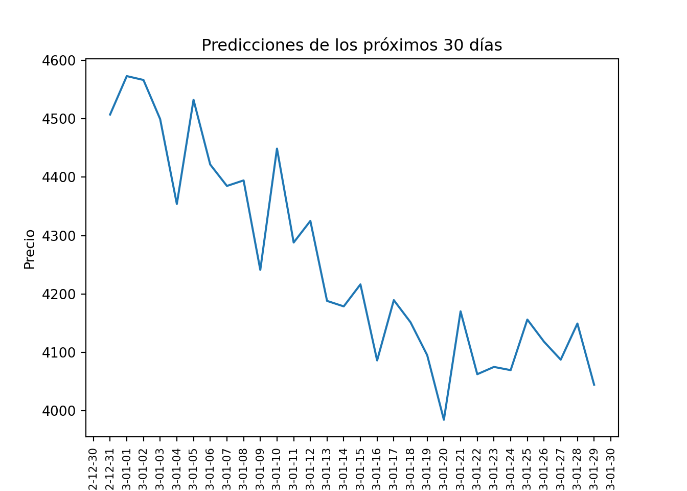
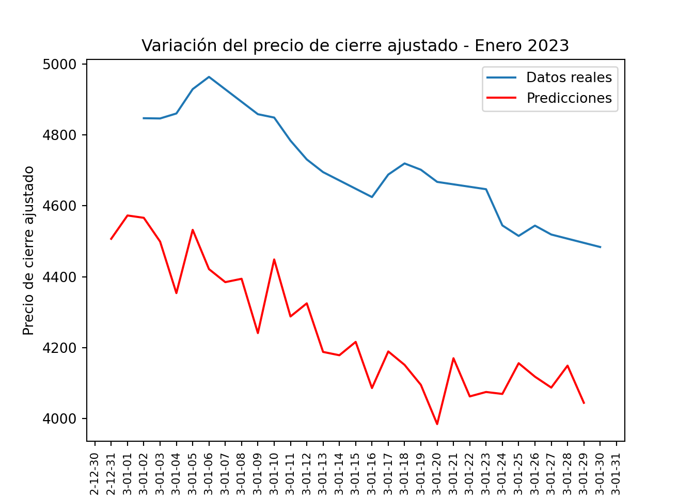

Capitulo 4 Red Neuronal Recurrente-JORDAN
En el caso de la red neuronal Jordan, utilizamos una capa SimpleRNN con return_sequences=True para permitir la retroalimentación de la capa oculta a sí misma y también a la siguiente capa. Luego, se agrega una capa densa (Dense) para la salida final.
Por otro lado, en la red neuronal Jordan, se agrega una capa adicional TimeDistributed que permite aplicar una capa densa (Dense) a cada paso de tiempo en la secuencia. Luego, se utiliza la capa RNN con SimpleRNNCell para procesar la información de retroalimentación antes de la capa de salida final.
import matplotlib.pyplot as plt
import pandas as pd
import numpy as np
from sklearn.preprocessing import MinMaxScaler
from keras.models import Sequential
from keras.layers import Dense, RNN, SimpleRNN, TimeDistributed, SimpleRNNCell
scaler = MinMaxScaler(feature_range=(0, 1))
scaled_data = scaler.fit_transform(data["Adj Close"].values.reshape(-1, 1))
train_size = int(len(scaled_data) * 0.75)
train_data = scaled_data[:train_size]
test_data = scaled_data[train_size:]
sequence_length = 30
def create_sequences(data, sequence_length):
X = []
y = []
for i in range(len(data) - sequence_length - 30):
X.append(data[i:i+sequence_length])
y.append(data[i+sequence_length:i+sequence_length+30])
return np.array(X), np.array(y)
X_train, y_train = create_sequences(train_data, sequence_length)
X_test, y_test = create_sequences(test_data, sequence_length)
# Crear el modelo Jordan
model = Sequential()
model.add(SimpleRNN(32, input_shape=(sequence_length, 1), activation='relu', return_sequences=True))
model.add(TimeDistributed(Dense(30)))
model.add(RNN(SimpleRNNCell(30)))
model.add(Dense(30))
model.compile(optimizer='adam', loss='mean_squared_error')
errors = []
# Entrenar el modelo
for i in range(25):
history = model.fit(X_train, y_train, epochs=1, batch_size=1, verbose=0)
error = history.history['loss'][0]
errors.append(error)
# Graficar el error de la red a lo largo de las iteraciones
plt.plot(range(1, 26), errors)
plt.xlabel("Iteraciones")
plt.ylabel("Error")
plt.title("Evolución del Error de la Red")
plt.show() El gráfico muestra la evolución del error de la red neuronal a lo largo de las iteraciones de entrenamiento. En el eje x se representan las iteraciones y en el eje y se muestra el valor del error.
El gráfico muestra la evolución del error de la red neuronal a lo largo de las iteraciones de entrenamiento. En el eje x se representan las iteraciones y en el eje y se muestra el valor del error.
Observamos que inicialmente el error disminuye rápidamente en las primeras 5 iteraciones aproximadamente, lo que indica que el modelo está aprendiendo y mejorando su capacidad para hacer predicciones. Luego, a partir de alrededor de la iteración 15, no se evidencia oportunidad de mejora.
import pandas as pd
import numpy as np
from sklearn.preprocessing import MinMaxScaler
from keras.models import Sequential
from keras.layers import Dense, SimpleRNN
from datetime import datetime, timedelta
scaler = MinMaxScaler(feature_range=(0, 1))
scaled_data = scaler.fit_transform(data["Adj Close"].values.reshape(-1, 1))
train_size = int(len(scaled_data) * 0.75)
train_data = scaled_data[:train_size]
test_data = scaled_data[train_size:]
sequence_length = 30
def create_sequences(data, sequence_length):
X = []
y = []
for i in range(len(data) - sequence_length - 30):
X.append(data[i:i+sequence_length])
y.append(data[i+sequence_length:i+sequence_length+30])
return np.array(X), np.array(y)
X_train, y_train = create_sequences(train_data, sequence_length)
X_test, y_test = create_sequences(test_data, sequence_length)
# Crear el modelo Jordan
model = Sequential()
model.add(SimpleRNN(32, input_shape=(sequence_length, 1), activation='relu', return_sequences=True))
model.add(TimeDistributed(Dense(30)))
model.add(RNN(SimpleRNNCell(30)))
model.add(Dense(30))
model.compile(optimizer='adam', loss='mean_squared_error')
# Entrenar el modelo
model.fit(X_train, y_train, epochs=20, batch_size=1)
# Evaluar el modelo## Epoch 1/20
##
## 1/1113 [..............................] - ETA: 1:10:18 - loss: 0.0167
## 8/1113 [..............................] - ETA: 8s - loss: 0.0531
## 14/1113 [..............................] - ETA: 9s - loss: 0.0411
## 20/1113 [..............................] - ETA: 10s - loss: 0.0443
## 25/1113 [..............................] - ETA: 10s - loss: 0.0413
## 31/1113 [..............................] - ETA: 10s - loss: 0.0443
## 37/1113 [..............................] - ETA: 10s - loss: 0.0400
## 43/1113 [>.............................] - ETA: 10s - loss: 0.0354
## 49/1113 [>.............................] - ETA: 10s - loss: 0.0335
## 55/1113 [>.............................] - ETA: 10s - loss: 0.0310
## 61/1113 [>.............................] - ETA: 9s - loss: 0.0288
## 67/1113 [>.............................] - ETA: 9s - loss: 0.0269
## 73/1113 [>.............................] - ETA: 9s - loss: 0.0251
## 78/1113 [=>............................] - ETA: 9s - loss: 0.0238
## 84/1113 [=>............................] - ETA: 9s - loss: 0.0226
## 90/1113 [=>............................] - ETA: 9s - loss: 0.0217
## 96/1113 [=>............................] - ETA: 9s - loss: 0.0207
## 101/1113 [=>............................] - ETA: 9s - loss: 0.0199
## 106/1113 [=>............................] - ETA: 9s - loss: 0.0191
## 112/1113 [==>...........................] - ETA: 9s - loss: 0.0184
## 118/1113 [==>...........................] - ETA: 9s - loss: 0.0177
## 124/1113 [==>...........................] - ETA: 9s - loss: 0.0171
## 129/1113 [==>...........................] - ETA: 9s - loss: 0.0165
## 135/1113 [==>...........................] - ETA: 9s - loss: 0.0159
## 140/1113 [==>...........................] - ETA: 9s - loss: 0.0155
## 146/1113 [==>...........................] - ETA: 9s - loss: 0.0150
## 151/1113 [===>..........................] - ETA: 9s - loss: 0.0146
## 156/1113 [===>..........................] - ETA: 9s - loss: 0.0142
## 162/1113 [===>..........................] - ETA: 9s - loss: 0.0138
## 168/1113 [===>..........................] - ETA: 9s - loss: 0.0136
## 173/1113 [===>..........................] - ETA: 9s - loss: 0.0133
## 179/1113 [===>..........................] - ETA: 9s - loss: 0.0129
## 185/1113 [===>..........................] - ETA: 9s - loss: 0.0126
## 191/1113 [====>.........................] - ETA: 8s - loss: 0.0123
## 196/1113 [====>.........................] - ETA: 8s - loss: 0.0121
## 201/1113 [====>.........................] - ETA: 8s - loss: 0.0119
## 207/1113 [====>.........................] - ETA: 8s - loss: 0.0115
## 213/1113 [====>.........................] - ETA: 8s - loss: 0.0114
## 218/1113 [====>.........................] - ETA: 8s - loss: 0.0113
## 224/1113 [=====>........................] - ETA: 8s - loss: 0.0110
## 230/1113 [=====>........................] - ETA: 8s - loss: 0.0108
## 235/1113 [=====>........................] - ETA: 8s - loss: 0.0107
## 241/1113 [=====>........................] - ETA: 8s - loss: 0.0105
## 247/1113 [=====>........................] - ETA: 8s - loss: 0.0103
## 253/1113 [=====>........................] - ETA: 8s - loss: 0.0101
## 259/1113 [=====>........................] - ETA: 8s - loss: 0.0099
## 264/1113 [======>.......................] - ETA: 8s - loss: 0.0098
## 270/1113 [======>.......................] - ETA: 8s - loss: 0.0096
## 275/1113 [======>.......................] - ETA: 8s - loss: 0.0094
## 280/1113 [======>.......................] - ETA: 8s - loss: 0.0093
## 285/1113 [======>.......................] - ETA: 8s - loss: 0.0092
## 290/1113 [======>.......................] - ETA: 8s - loss: 0.0091
## 295/1113 [======>.......................] - ETA: 8s - loss: 0.0090
## 300/1113 [=======>......................] - ETA: 8s - loss: 0.0090
## 305/1113 [=======>......................] - ETA: 8s - loss: 0.0089
## 310/1113 [=======>......................] - ETA: 7s - loss: 0.0088
## 315/1113 [=======>......................] - ETA: 7s - loss: 0.0087
## 320/1113 [=======>......................] - ETA: 7s - loss: 0.0087
## 325/1113 [=======>......................] - ETA: 7s - loss: 0.0087
## 330/1113 [=======>......................] - ETA: 7s - loss: 0.0086
## 335/1113 [========>.....................] - ETA: 7s - loss: 0.0085
## 341/1113 [========>.....................] - ETA: 7s - loss: 0.0085
## 347/1113 [========>.....................] - ETA: 7s - loss: 0.0083
## 353/1113 [========>.....................] - ETA: 7s - loss: 0.0082
## 358/1113 [========>.....................] - ETA: 7s - loss: 0.0081
## 363/1113 [========>.....................] - ETA: 7s - loss: 0.0081
## 368/1113 [========>.....................] - ETA: 7s - loss: 0.0080
## 373/1113 [=========>....................] - ETA: 7s - loss: 0.0079
## 379/1113 [=========>....................] - ETA: 7s - loss: 0.0079
## 385/1113 [=========>....................] - ETA: 7s - loss: 0.0078
## 391/1113 [=========>....................] - ETA: 7s - loss: 0.0078
## 397/1113 [=========>....................] - ETA: 7s - loss: 0.0077
## 402/1113 [=========>....................] - ETA: 7s - loss: 0.0077
## 407/1113 [=========>....................] - ETA: 7s - loss: 0.0077
## 412/1113 [==========>...................] - ETA: 6s - loss: 0.0076
## 417/1113 [==========>...................] - ETA: 6s - loss: 0.0076
## 422/1113 [==========>...................] - ETA: 6s - loss: 0.0075
## 427/1113 [==========>...................] - ETA: 6s - loss: 0.0074
## 432/1113 [==========>...................] - ETA: 6s - loss: 0.0074
## 438/1113 [==========>...................] - ETA: 6s - loss: 0.0073
## 443/1113 [==========>...................] - ETA: 6s - loss: 0.0073
## 448/1113 [===========>..................] - ETA: 6s - loss: 0.0072
## 453/1113 [===========>..................] - ETA: 6s - loss: 0.0072
## 458/1113 [===========>..................] - ETA: 6s - loss: 0.0071
## 463/1113 [===========>..................] - ETA: 6s - loss: 0.0071
## 468/1113 [===========>..................] - ETA: 6s - loss: 0.0070
## 473/1113 [===========>..................] - ETA: 6s - loss: 0.0070
## 478/1113 [===========>..................] - ETA: 6s - loss: 0.0069
## 483/1113 [============>.................] - ETA: 6s - loss: 0.0069
## 488/1113 [============>.................] - ETA: 6s - loss: 0.0068
## 493/1113 [============>.................] - ETA: 6s - loss: 0.0068
## 498/1113 [============>.................] - ETA: 6s - loss: 0.0067
## 503/1113 [============>.................] - ETA: 6s - loss: 0.0067
## 509/1113 [============>.................] - ETA: 6s - loss: 0.0066
## 514/1113 [============>.................] - ETA: 6s - loss: 0.0066
## 519/1113 [============>.................] - ETA: 6s - loss: 0.0065
## 524/1113 [=============>................] - ETA: 5s - loss: 0.0065
## 530/1113 [=============>................] - ETA: 5s - loss: 0.0064
## 536/1113 [=============>................] - ETA: 5s - loss: 0.0064
## 541/1113 [=============>................] - ETA: 5s - loss: 0.0063
## 546/1113 [=============>................] - ETA: 5s - loss: 0.0063
## 551/1113 [=============>................] - ETA: 5s - loss: 0.0063
## 556/1113 [=============>................] - ETA: 5s - loss: 0.0062
## 561/1113 [==============>...............] - ETA: 5s - loss: 0.0062
## 566/1113 [==============>...............] - ETA: 5s - loss: 0.0062
## 571/1113 [==============>...............] - ETA: 5s - loss: 0.0062
## 576/1113 [==============>...............] - ETA: 5s - loss: 0.0061
## 581/1113 [==============>...............] - ETA: 5s - loss: 0.0061
## 586/1113 [==============>...............] - ETA: 5s - loss: 0.0061
## 591/1113 [==============>...............] - ETA: 5s - loss: 0.0061
## 596/1113 [===============>..............] - ETA: 5s - loss: 0.0060
## 601/1113 [===============>..............] - ETA: 5s - loss: 0.0060
## 606/1113 [===============>..............] - ETA: 5s - loss: 0.0061
## 611/1113 [===============>..............] - ETA: 5s - loss: 0.0061
## 616/1113 [===============>..............] - ETA: 5s - loss: 0.0060
## 622/1113 [===============>..............] - ETA: 5s - loss: 0.0060
## 628/1113 [===============>..............] - ETA: 4s - loss: 0.0060
## 633/1113 [================>.............] - ETA: 4s - loss: 0.0059
## 638/1113 [================>.............] - ETA: 4s - loss: 0.0059
## 643/1113 [================>.............] - ETA: 4s - loss: 0.0059
## 648/1113 [================>.............] - ETA: 4s - loss: 0.0058
## 653/1113 [================>.............] - ETA: 4s - loss: 0.0059
## 659/1113 [================>.............] - ETA: 4s - loss: 0.0058
## 665/1113 [================>.............] - ETA: 4s - loss: 0.0058
## 671/1113 [=================>............] - ETA: 4s - loss: 0.0058
## 677/1113 [=================>............] - ETA: 4s - loss: 0.0058
## 683/1113 [=================>............] - ETA: 4s - loss: 0.0057
## 689/1113 [=================>............] - ETA: 4s - loss: 0.0057
## 694/1113 [=================>............] - ETA: 4s - loss: 0.0057
## 699/1113 [=================>............] - ETA: 4s - loss: 0.0056
## 705/1113 [==================>...........] - ETA: 4s - loss: 0.0056
## 711/1113 [==================>...........] - ETA: 4s - loss: 0.0056
## 716/1113 [==================>...........] - ETA: 4s - loss: 0.0056
## 721/1113 [==================>...........] - ETA: 3s - loss: 0.0056
## 726/1113 [==================>...........] - ETA: 3s - loss: 0.0056
## 731/1113 [==================>...........] - ETA: 3s - loss: 0.0055
## 737/1113 [==================>...........] - ETA: 3s - loss: 0.0055
## 742/1113 [===================>..........] - ETA: 3s - loss: 0.0055
## 748/1113 [===================>..........] - ETA: 3s - loss: 0.0055
## 753/1113 [===================>..........] - ETA: 3s - loss: 0.0054
## 759/1113 [===================>..........] - ETA: 3s - loss: 0.0054
## 765/1113 [===================>..........] - ETA: 3s - loss: 0.0054
## 771/1113 [===================>..........] - ETA: 3s - loss: 0.0054
## 776/1113 [===================>..........] - ETA: 3s - loss: 0.0054
## 782/1113 [====================>.........] - ETA: 3s - loss: 0.0053
## 788/1113 [====================>.........] - ETA: 3s - loss: 0.0053
## 793/1113 [====================>.........] - ETA: 3s - loss: 0.0053
## 798/1113 [====================>.........] - ETA: 3s - loss: 0.0053
## 803/1113 [====================>.........] - ETA: 3s - loss: 0.0052
## 808/1113 [====================>.........] - ETA: 3s - loss: 0.0052
## 813/1113 [====================>.........] - ETA: 3s - loss: 0.0052
## 818/1113 [=====================>........] - ETA: 3s - loss: 0.0052
## 823/1113 [=====================>........] - ETA: 2s - loss: 0.0051
## 828/1113 [=====================>........] - ETA: 2s - loss: 0.0051
## 833/1113 [=====================>........] - ETA: 2s - loss: 0.0051
## 838/1113 [=====================>........] - ETA: 2s - loss: 0.0051
## 843/1113 [=====================>........] - ETA: 2s - loss: 0.0051
## 848/1113 [=====================>........] - ETA: 2s - loss: 0.0050
## 853/1113 [=====================>........] - ETA: 2s - loss: 0.0050
## 859/1113 [======================>.......] - ETA: 2s - loss: 0.0050
## 865/1113 [======================>.......] - ETA: 2s - loss: 0.0050
## 870/1113 [======================>.......] - ETA: 2s - loss: 0.0050
## 876/1113 [======================>.......] - ETA: 2s - loss: 0.0049
## 882/1113 [======================>.......] - ETA: 2s - loss: 0.0049
## 887/1113 [======================>.......] - ETA: 2s - loss: 0.0049
## 892/1113 [=======================>......] - ETA: 2s - loss: 0.0049
## 897/1113 [=======================>......] - ETA: 2s - loss: 0.0049
## 903/1113 [=======================>......] - ETA: 2s - loss: 0.0048
## 908/1113 [=======================>......] - ETA: 2s - loss: 0.0048
## 914/1113 [=======================>......] - ETA: 2s - loss: 0.0048
## 919/1113 [=======================>......] - ETA: 1s - loss: 0.0048
## 924/1113 [=======================>......] - ETA: 1s - loss: 0.0048
## 930/1113 [========================>.....] - ETA: 1s - loss: 0.0047
## 936/1113 [========================>.....] - ETA: 1s - loss: 0.0047
## 941/1113 [========================>.....] - ETA: 1s - loss: 0.0047
## 947/1113 [========================>.....] - ETA: 1s - loss: 0.0047
## 952/1113 [========================>.....] - ETA: 1s - loss: 0.0047
## 958/1113 [========================>.....] - ETA: 1s - loss: 0.0047
## 964/1113 [========================>.....] - ETA: 1s - loss: 0.0047
## 970/1113 [=========================>....] - ETA: 1s - loss: 0.0047
## 976/1113 [=========================>....] - ETA: 1s - loss: 0.0046
## 981/1113 [=========================>....] - ETA: 1s - loss: 0.0046
## 987/1113 [=========================>....] - ETA: 1s - loss: 0.0046
## 993/1113 [=========================>....] - ETA: 1s - loss: 0.0046
## 998/1113 [=========================>....] - ETA: 1s - loss: 0.0046
## 1004/1113 [==========================>...] - ETA: 1s - loss: 0.0046
## 1009/1113 [==========================>...] - ETA: 1s - loss: 0.0046
## 1015/1113 [==========================>...] - ETA: 0s - loss: 0.0046
## 1021/1113 [==========================>...] - ETA: 0s - loss: 0.0045
## 1027/1113 [==========================>...] - ETA: 0s - loss: 0.0045
## 1032/1113 [==========================>...] - ETA: 0s - loss: 0.0045
## 1038/1113 [==========================>...] - ETA: 0s - loss: 0.0045
## 1043/1113 [===========================>..] - ETA: 0s - loss: 0.0045
## 1049/1113 [===========================>..] - ETA: 0s - loss: 0.0045
## 1055/1113 [===========================>..] - ETA: 0s - loss: 0.0045
## 1060/1113 [===========================>..] - ETA: 0s - loss: 0.0045
## 1065/1113 [===========================>..] - ETA: 0s - loss: 0.0045
## 1070/1113 [===========================>..] - ETA: 0s - loss: 0.0045
## 1076/1113 [============================>.] - ETA: 0s - loss: 0.0045
## 1082/1113 [============================>.] - ETA: 0s - loss: 0.0045
## 1088/1113 [============================>.] - ETA: 0s - loss: 0.0045
## 1094/1113 [============================>.] - ETA: 0s - loss: 0.0045
## 1099/1113 [============================>.] - ETA: 0s - loss: 0.0045
## 1105/1113 [============================>.] - ETA: 0s - loss: 0.0045
## 1111/1113 [============================>.] - ETA: 0s - loss: 0.0045
## 1113/1113 [==============================] - 15s 10ms/step - loss: 0.0045
## Epoch 2/20
##
## 1/1113 [..............................] - ETA: 11s - loss: 0.0022
## 6/1113 [..............................] - ETA: 11s - loss: 0.0016
## 11/1113 [..............................] - ETA: 11s - loss: 0.0012
## 17/1113 [..............................] - ETA: 11s - loss: 0.0013
## 22/1113 [..............................] - ETA: 11s - loss: 0.0012
## 28/1113 [..............................] - ETA: 10s - loss: 0.0013
## 33/1113 [..............................] - ETA: 10s - loss: 0.0013
## 39/1113 [>.............................] - ETA: 10s - loss: 0.0012
## 45/1113 [>.............................] - ETA: 10s - loss: 0.0013
## 51/1113 [>.............................] - ETA: 10s - loss: 0.0012
## 56/1113 [>.............................] - ETA: 10s - loss: 0.0013
## 62/1113 [>.............................] - ETA: 10s - loss: 0.0013
## 67/1113 [>.............................] - ETA: 10s - loss: 0.0013
## 72/1113 [>.............................] - ETA: 10s - loss: 0.0015
## 77/1113 [=>............................] - ETA: 10s - loss: 0.0020
## 83/1113 [=>............................] - ETA: 10s - loss: 0.0024
## 89/1113 [=>............................] - ETA: 10s - loss: 0.0024
## 95/1113 [=>............................] - ETA: 10s - loss: 0.0023
## 100/1113 [=>............................] - ETA: 10s - loss: 0.0027
## 105/1113 [=>............................] - ETA: 10s - loss: 0.0026
## 110/1113 [=>............................] - ETA: 10s - loss: 0.0028
## 115/1113 [==>...........................] - ETA: 9s - loss: 0.0029
## 121/1113 [==>...........................] - ETA: 9s - loss: 0.0031
## 126/1113 [==>...........................] - ETA: 9s - loss: 0.0031
## 132/1113 [==>...........................] - ETA: 9s - loss: 0.0030
## 138/1113 [==>...........................] - ETA: 9s - loss: 0.0030
## 144/1113 [==>...........................] - ETA: 9s - loss: 0.0029
## 150/1113 [===>..........................] - ETA: 9s - loss: 0.0031
## 156/1113 [===>..........................] - ETA: 9s - loss: 0.0031
## 161/1113 [===>..........................] - ETA: 9s - loss: 0.0031
## 166/1113 [===>..........................] - ETA: 9s - loss: 0.0030
## 172/1113 [===>..........................] - ETA: 9s - loss: 0.0029
## 177/1113 [===>..........................] - ETA: 9s - loss: 0.0029
## 182/1113 [===>..........................] - ETA: 9s - loss: 0.0029
## 187/1113 [====>.........................] - ETA: 9s - loss: 0.0029
## 193/1113 [====>.........................] - ETA: 9s - loss: 0.0028
## 199/1113 [====>.........................] - ETA: 9s - loss: 0.0028
## 205/1113 [====>.........................] - ETA: 9s - loss: 0.0027
## 210/1113 [====>.........................] - ETA: 9s - loss: 0.0027
## 216/1113 [====>.........................] - ETA: 8s - loss: 0.0027
## 222/1113 [====>.........................] - ETA: 8s - loss: 0.0026
## 228/1113 [=====>........................] - ETA: 8s - loss: 0.0026
## 234/1113 [=====>........................] - ETA: 8s - loss: 0.0026
## 239/1113 [=====>........................] - ETA: 8s - loss: 0.0026
## 244/1113 [=====>........................] - ETA: 8s - loss: 0.0025
## 249/1113 [=====>........................] - ETA: 8s - loss: 0.0026
## 254/1113 [=====>........................] - ETA: 8s - loss: 0.0025
## 259/1113 [=====>........................] - ETA: 8s - loss: 0.0025
## 265/1113 [======>.......................] - ETA: 8s - loss: 0.0027
## 270/1113 [======>.......................] - ETA: 8s - loss: 0.0027
## 276/1113 [======>.......................] - ETA: 8s - loss: 0.0028
## 281/1113 [======>.......................] - ETA: 8s - loss: 0.0029
## 287/1113 [======>.......................] - ETA: 8s - loss: 0.0030
## 293/1113 [======>.......................] - ETA: 8s - loss: 0.0030
## 299/1113 [=======>......................] - ETA: 8s - loss: 0.0030
## 304/1113 [=======>......................] - ETA: 8s - loss: 0.0030
## 309/1113 [=======>......................] - ETA: 8s - loss: 0.0030
## 314/1113 [=======>......................] - ETA: 8s - loss: 0.0030
## 320/1113 [=======>......................] - ETA: 7s - loss: 0.0029
## 325/1113 [=======>......................] - ETA: 7s - loss: 0.0029
## 331/1113 [=======>......................] - ETA: 7s - loss: 0.0029
## 337/1113 [========>.....................] - ETA: 7s - loss: 0.0029
## 343/1113 [========>.....................] - ETA: 7s - loss: 0.0029
## 349/1113 [========>.....................] - ETA: 7s - loss: 0.0029
## 355/1113 [========>.....................] - ETA: 7s - loss: 0.0028
## 360/1113 [========>.....................] - ETA: 7s - loss: 0.0028
## 365/1113 [========>.....................] - ETA: 7s - loss: 0.0028
## 370/1113 [========>.....................] - ETA: 7s - loss: 0.0028
## 375/1113 [=========>....................] - ETA: 7s - loss: 0.0028
## 380/1113 [=========>....................] - ETA: 7s - loss: 0.0028
## 385/1113 [=========>....................] - ETA: 7s - loss: 0.0028
## 390/1113 [=========>....................] - ETA: 7s - loss: 0.0028
## 395/1113 [=========>....................] - ETA: 7s - loss: 0.0028
## 400/1113 [=========>....................] - ETA: 7s - loss: 0.0028
## 405/1113 [=========>....................] - ETA: 7s - loss: 0.0027
## 410/1113 [==========>...................] - ETA: 7s - loss: 0.0027
## 415/1113 [==========>...................] - ETA: 7s - loss: 0.0027
## 420/1113 [==========>...................] - ETA: 7s - loss: 0.0027
## 426/1113 [==========>...................] - ETA: 6s - loss: 0.0027
## 432/1113 [==========>...................] - ETA: 6s - loss: 0.0027
## 437/1113 [==========>...................] - ETA: 6s - loss: 0.0027
## 442/1113 [==========>...................] - ETA: 6s - loss: 0.0027
## 448/1113 [===========>..................] - ETA: 6s - loss: 0.0027
## 454/1113 [===========>..................] - ETA: 6s - loss: 0.0027
## 460/1113 [===========>..................] - ETA: 6s - loss: 0.0027
## 466/1113 [===========>..................] - ETA: 6s - loss: 0.0027
## 472/1113 [===========>..................] - ETA: 6s - loss: 0.0027
## 478/1113 [===========>..................] - ETA: 6s - loss: 0.0027
## 483/1113 [============>.................] - ETA: 6s - loss: 0.0027
## 489/1113 [============>.................] - ETA: 6s - loss: 0.0026
## 495/1113 [============>.................] - ETA: 6s - loss: 0.0026
## 501/1113 [============>.................] - ETA: 6s - loss: 0.0026
## 506/1113 [============>.................] - ETA: 6s - loss: 0.0027
## 511/1113 [============>.................] - ETA: 6s - loss: 0.0027
## 516/1113 [============>.................] - ETA: 6s - loss: 0.0027
## 521/1113 [=============>................] - ETA: 5s - loss: 0.0027
## 526/1113 [=============>................] - ETA: 5s - loss: 0.0027
## 531/1113 [=============>................] - ETA: 5s - loss: 0.0027
## 536/1113 [=============>................] - ETA: 5s - loss: 0.0027
## 542/1113 [=============>................] - ETA: 5s - loss: 0.0026
## 548/1113 [=============>................] - ETA: 5s - loss: 0.0026
## 554/1113 [=============>................] - ETA: 5s - loss: 0.0026
## 559/1113 [==============>...............] - ETA: 5s - loss: 0.0026
## 564/1113 [==============>...............] - ETA: 5s - loss: 0.0026
## 570/1113 [==============>...............] - ETA: 5s - loss: 0.0026
## 576/1113 [==============>...............] - ETA: 5s - loss: 0.0026
## 582/1113 [==============>...............] - ETA: 5s - loss: 0.0026
## 587/1113 [==============>...............] - ETA: 5s - loss: 0.0025
## 593/1113 [==============>...............] - ETA: 5s - loss: 0.0025
## 599/1113 [===============>..............] - ETA: 5s - loss: 0.0025
## 604/1113 [===============>..............] - ETA: 5s - loss: 0.0025
## 609/1113 [===============>..............] - ETA: 5s - loss: 0.0025
## 614/1113 [===============>..............] - ETA: 5s - loss: 0.0025
## 619/1113 [===============>..............] - ETA: 4s - loss: 0.0025
## 625/1113 [===============>..............] - ETA: 4s - loss: 0.0025
## 631/1113 [================>.............] - ETA: 4s - loss: 0.0025
## 636/1113 [================>.............] - ETA: 4s - loss: 0.0025
## 641/1113 [================>.............] - ETA: 4s - loss: 0.0024
## 647/1113 [================>.............] - ETA: 4s - loss: 0.0024
## 653/1113 [================>.............] - ETA: 4s - loss: 0.0024
## 658/1113 [================>.............] - ETA: 4s - loss: 0.0024
## 663/1113 [================>.............] - ETA: 4s - loss: 0.0024
## 669/1113 [=================>............] - ETA: 4s - loss: 0.0024
## 674/1113 [=================>............] - ETA: 4s - loss: 0.0024
## 679/1113 [=================>............] - ETA: 4s - loss: 0.0024
## 684/1113 [=================>............] - ETA: 4s - loss: 0.0024
## 690/1113 [=================>............] - ETA: 4s - loss: 0.0024
## 695/1113 [=================>............] - ETA: 4s - loss: 0.0024
## 701/1113 [=================>............] - ETA: 4s - loss: 0.0024
## 707/1113 [==================>...........] - ETA: 4s - loss: 0.0024
## 713/1113 [==================>...........] - ETA: 4s - loss: 0.0024
## 718/1113 [==================>...........] - ETA: 3s - loss: 0.0024
## 723/1113 [==================>...........] - ETA: 3s - loss: 0.0023
## 729/1113 [==================>...........] - ETA: 3s - loss: 0.0024
## 735/1113 [==================>...........] - ETA: 3s - loss: 0.0023
## 741/1113 [==================>...........] - ETA: 3s - loss: 0.0023
## 746/1113 [===================>..........] - ETA: 3s - loss: 0.0023
## 752/1113 [===================>..........] - ETA: 3s - loss: 0.0023
## 758/1113 [===================>..........] - ETA: 3s - loss: 0.0023
## 764/1113 [===================>..........] - ETA: 3s - loss: 0.0024
## 769/1113 [===================>..........] - ETA: 3s - loss: 0.0024
## 775/1113 [===================>..........] - ETA: 3s - loss: 0.0024
## 781/1113 [====================>.........] - ETA: 3s - loss: 0.0024
## 787/1113 [====================>.........] - ETA: 3s - loss: 0.0024
## 792/1113 [====================>.........] - ETA: 3s - loss: 0.0024
## 798/1113 [====================>.........] - ETA: 3s - loss: 0.0023
## 803/1113 [====================>.........] - ETA: 3s - loss: 0.0024
## 808/1113 [====================>.........] - ETA: 3s - loss: 0.0024
## 813/1113 [====================>.........] - ETA: 3s - loss: 0.0024
## 818/1113 [=====================>........] - ETA: 2s - loss: 0.0023
## 823/1113 [=====================>........] - ETA: 2s - loss: 0.0024
## 829/1113 [=====================>........] - ETA: 2s - loss: 0.0024
## 835/1113 [=====================>........] - ETA: 2s - loss: 0.0024
## 840/1113 [=====================>........] - ETA: 2s - loss: 0.0024
## 846/1113 [=====================>........] - ETA: 2s - loss: 0.0024
## 851/1113 [=====================>........] - ETA: 2s - loss: 0.0024
## 856/1113 [======================>.......] - ETA: 2s - loss: 0.0024
## 861/1113 [======================>.......] - ETA: 2s - loss: 0.0024
## 867/1113 [======================>.......] - ETA: 2s - loss: 0.0024
## 873/1113 [======================>.......] - ETA: 2s - loss: 0.0023
## 879/1113 [======================>.......] - ETA: 2s - loss: 0.0023
## 884/1113 [======================>.......] - ETA: 2s - loss: 0.0023
## 890/1113 [======================>.......] - ETA: 2s - loss: 0.0023
## 896/1113 [=======================>......] - ETA: 2s - loss: 0.0023
## 902/1113 [=======================>......] - ETA: 2s - loss: 0.0023
## 907/1113 [=======================>......] - ETA: 2s - loss: 0.0023
## 913/1113 [=======================>......] - ETA: 2s - loss: 0.0023
## 918/1113 [=======================>......] - ETA: 1s - loss: 0.0024
## 923/1113 [=======================>......] - ETA: 1s - loss: 0.0024
## 928/1113 [========================>.....] - ETA: 1s - loss: 0.0024
## 933/1113 [========================>.....] - ETA: 1s - loss: 0.0024
## 938/1113 [========================>.....] - ETA: 1s - loss: 0.0024
## 944/1113 [========================>.....] - ETA: 1s - loss: 0.0024
## 949/1113 [========================>.....] - ETA: 1s - loss: 0.0024
## 954/1113 [========================>.....] - ETA: 1s - loss: 0.0024
## 960/1113 [========================>.....] - ETA: 1s - loss: 0.0024
## 966/1113 [=========================>....] - ETA: 1s - loss: 0.0024
## 971/1113 [=========================>....] - ETA: 1s - loss: 0.0024
## 976/1113 [=========================>....] - ETA: 1s - loss: 0.0024
## 982/1113 [=========================>....] - ETA: 1s - loss: 0.0024
## 988/1113 [=========================>....] - ETA: 1s - loss: 0.0024
## 993/1113 [=========================>....] - ETA: 1s - loss: 0.0025
## 999/1113 [=========================>....] - ETA: 1s - loss: 0.0025
## 1004/1113 [==========================>...] - ETA: 1s - loss: 0.0025
## 1009/1113 [==========================>...] - ETA: 1s - loss: 0.0025
## 1014/1113 [==========================>...] - ETA: 0s - loss: 0.0025
## 1019/1113 [==========================>...] - ETA: 0s - loss: 0.0025
## 1024/1113 [==========================>...] - ETA: 0s - loss: 0.0025
## 1029/1113 [==========================>...] - ETA: 0s - loss: 0.0025
## 1034/1113 [==========================>...] - ETA: 0s - loss: 0.0025
## 1040/1113 [===========================>..] - ETA: 0s - loss: 0.0025
## 1045/1113 [===========================>..] - ETA: 0s - loss: 0.0026
## 1050/1113 [===========================>..] - ETA: 0s - loss: 0.0026
## 1055/1113 [===========================>..] - ETA: 0s - loss: 0.0026
## 1060/1113 [===========================>..] - ETA: 0s - loss: 0.0026
## 1066/1113 [===========================>..] - ETA: 0s - loss: 0.0026
## 1072/1113 [===========================>..] - ETA: 0s - loss: 0.0026
## 1078/1113 [============================>.] - ETA: 0s - loss: 0.0026
## 1084/1113 [============================>.] - ETA: 0s - loss: 0.0026
## 1089/1113 [============================>.] - ETA: 0s - loss: 0.0025
## 1095/1113 [============================>.] - ETA: 0s - loss: 0.0025
## 1100/1113 [============================>.] - ETA: 0s - loss: 0.0025
## 1105/1113 [============================>.] - ETA: 0s - loss: 0.0025
## 1111/1113 [============================>.] - ETA: 0s - loss: 0.0025
## 1113/1113 [==============================] - 11s 10ms/step - loss: 0.0026
## Epoch 3/20
##
## 1/1113 [..............................] - ETA: 13s - loss: 0.0031
## 7/1113 [..............................] - ETA: 10s - loss: 0.0010
## 12/1113 [..............................] - ETA: 11s - loss: 0.0015
## 18/1113 [..............................] - ETA: 10s - loss: 0.0014
## 24/1113 [..............................] - ETA: 10s - loss: 0.0013
## 29/1113 [..............................] - ETA: 10s - loss: 0.0013
## 35/1113 [..............................] - ETA: 10s - loss: 0.0024
## 41/1113 [>.............................] - ETA: 10s - loss: 0.0027
## 47/1113 [>.............................] - ETA: 10s - loss: 0.0025
## 53/1113 [>.............................] - ETA: 10s - loss: 0.0024
## 59/1113 [>.............................] - ETA: 10s - loss: 0.0030
## 64/1113 [>.............................] - ETA: 10s - loss: 0.0029
## 70/1113 [>.............................] - ETA: 10s - loss: 0.0028
## 75/1113 [=>............................] - ETA: 10s - loss: 0.0027
## 80/1113 [=>............................] - ETA: 10s - loss: 0.0027
## 86/1113 [=>............................] - ETA: 10s - loss: 0.0026
## 91/1113 [=>............................] - ETA: 10s - loss: 0.0025
## 96/1113 [=>............................] - ETA: 10s - loss: 0.0025
## 101/1113 [=>............................] - ETA: 10s - loss: 0.0025
## 106/1113 [=>............................] - ETA: 10s - loss: 0.0025
## 111/1113 [=>............................] - ETA: 10s - loss: 0.0024
## 117/1113 [==>...........................] - ETA: 10s - loss: 0.0024
## 122/1113 [==>...........................] - ETA: 9s - loss: 0.0024
## 127/1113 [==>...........................] - ETA: 9s - loss: 0.0027
## 132/1113 [==>...........................] - ETA: 9s - loss: 0.0030
## 138/1113 [==>...........................] - ETA: 9s - loss: 0.0030
## 144/1113 [==>...........................] - ETA: 9s - loss: 0.0032
## 149/1113 [===>..........................] - ETA: 9s - loss: 0.0031
## 154/1113 [===>..........................] - ETA: 9s - loss: 0.0031
## 159/1113 [===>..........................] - ETA: 9s - loss: 0.0031
## 164/1113 [===>..........................] - ETA: 9s - loss: 0.0030
## 169/1113 [===>..........................] - ETA: 9s - loss: 0.0030
## 174/1113 [===>..........................] - ETA: 9s - loss: 0.0029
## 180/1113 [===>..........................] - ETA: 9s - loss: 0.0029
## 186/1113 [====>.........................] - ETA: 9s - loss: 0.0028
## 192/1113 [====>.........................] - ETA: 9s - loss: 0.0028
## 197/1113 [====>.........................] - ETA: 9s - loss: 0.0028
## 203/1113 [====>.........................] - ETA: 9s - loss: 0.0028
## 209/1113 [====>.........................] - ETA: 9s - loss: 0.0028
## 215/1113 [====>.........................] - ETA: 9s - loss: 0.0027
## 221/1113 [====>.........................] - ETA: 8s - loss: 0.0027
## 226/1113 [=====>........................] - ETA: 8s - loss: 0.0027
## 232/1113 [=====>........................] - ETA: 8s - loss: 0.0026
## 237/1113 [=====>........................] - ETA: 8s - loss: 0.0026
## 242/1113 [=====>........................] - ETA: 8s - loss: 0.0026
## 247/1113 [=====>........................] - ETA: 8s - loss: 0.0026
## 253/1113 [=====>........................] - ETA: 8s - loss: 0.0025
## 259/1113 [=====>........................] - ETA: 8s - loss: 0.0025
## 265/1113 [======>.......................] - ETA: 8s - loss: 0.0025
## 271/1113 [======>.......................] - ETA: 8s - loss: 0.0025
## 277/1113 [======>.......................] - ETA: 8s - loss: 0.0024
## 282/1113 [======>.......................] - ETA: 8s - loss: 0.0024
## 288/1113 [======>.......................] - ETA: 8s - loss: 0.0024
## 293/1113 [======>.......................] - ETA: 8s - loss: 0.0024
## 299/1113 [=======>......................] - ETA: 8s - loss: 0.0023
## 305/1113 [=======>......................] - ETA: 8s - loss: 0.0023
## 311/1113 [=======>......................] - ETA: 8s - loss: 0.0024
## 316/1113 [=======>......................] - ETA: 7s - loss: 0.0024
## 321/1113 [=======>......................] - ETA: 7s - loss: 0.0024
## 326/1113 [=======>......................] - ETA: 7s - loss: 0.0025
## 331/1113 [=======>......................] - ETA: 7s - loss: 0.0025
## 336/1113 [========>.....................] - ETA: 7s - loss: 0.0025
## 342/1113 [========>.....................] - ETA: 7s - loss: 0.0024
## 347/1113 [========>.....................] - ETA: 7s - loss: 0.0024
## 353/1113 [========>.....................] - ETA: 7s - loss: 0.0024
## 358/1113 [========>.....................] - ETA: 7s - loss: 0.0024
## 363/1113 [========>.....................] - ETA: 7s - loss: 0.0024
## 368/1113 [========>.....................] - ETA: 7s - loss: 0.0024
## 373/1113 [=========>....................] - ETA: 7s - loss: 0.0024
## 378/1113 [=========>....................] - ETA: 7s - loss: 0.0024
## 383/1113 [=========>....................] - ETA: 7s - loss: 0.0026
## 388/1113 [=========>....................] - ETA: 7s - loss: 0.0027
## 394/1113 [=========>....................] - ETA: 7s - loss: 0.0027
## 399/1113 [=========>....................] - ETA: 7s - loss: 0.0028
## 405/1113 [=========>....................] - ETA: 7s - loss: 0.0027
## 411/1113 [==========>...................] - ETA: 7s - loss: 0.0027
## 416/1113 [==========>...................] - ETA: 7s - loss: 0.0027
## 422/1113 [==========>...................] - ETA: 6s - loss: 0.0027
## 427/1113 [==========>...................] - ETA: 6s - loss: 0.0027
## 433/1113 [==========>...................] - ETA: 6s - loss: 0.0028
## 439/1113 [==========>...................] - ETA: 6s - loss: 0.0028
## 445/1113 [==========>...................] - ETA: 6s - loss: 0.0028
## 451/1113 [===========>..................] - ETA: 6s - loss: 0.0028
## 457/1113 [===========>..................] - ETA: 6s - loss: 0.0028
## 463/1113 [===========>..................] - ETA: 6s - loss: 0.0028
## 469/1113 [===========>..................] - ETA: 6s - loss: 0.0028
## 475/1113 [===========>..................] - ETA: 6s - loss: 0.0028
## 480/1113 [===========>..................] - ETA: 6s - loss: 0.0028
## 486/1113 [============>.................] - ETA: 6s - loss: 0.0028
## 491/1113 [============>.................] - ETA: 6s - loss: 0.0028
## 497/1113 [============>.................] - ETA: 6s - loss: 0.0028
## 502/1113 [============>.................] - ETA: 6s - loss: 0.0028
## 507/1113 [============>.................] - ETA: 6s - loss: 0.0028
## 512/1113 [============>.................] - ETA: 6s - loss: 0.0028
## 517/1113 [============>.................] - ETA: 5s - loss: 0.0028
## 522/1113 [=============>................] - ETA: 5s - loss: 0.0028
## 527/1113 [=============>................] - ETA: 5s - loss: 0.0028
## 532/1113 [=============>................] - ETA: 5s - loss: 0.0028
## 537/1113 [=============>................] - ETA: 5s - loss: 0.0028
## 542/1113 [=============>................] - ETA: 5s - loss: 0.0028
## 547/1113 [=============>................] - ETA: 5s - loss: 0.0028
## 553/1113 [=============>................] - ETA: 5s - loss: 0.0028
## 559/1113 [==============>...............] - ETA: 5s - loss: 0.0028
## 564/1113 [==============>...............] - ETA: 5s - loss: 0.0028
## 569/1113 [==============>...............] - ETA: 5s - loss: 0.0028
## 574/1113 [==============>...............] - ETA: 5s - loss: 0.0027
## 579/1113 [==============>...............] - ETA: 5s - loss: 0.0027
## 584/1113 [==============>...............] - ETA: 5s - loss: 0.0027
## 589/1113 [==============>...............] - ETA: 5s - loss: 0.0027
## 594/1113 [===============>..............] - ETA: 5s - loss: 0.0027
## 599/1113 [===============>..............] - ETA: 5s - loss: 0.0027
## 604/1113 [===============>..............] - ETA: 5s - loss: 0.0027
## 610/1113 [===============>..............] - ETA: 5s - loss: 0.0027
## 615/1113 [===============>..............] - ETA: 5s - loss: 0.0027
## 620/1113 [===============>..............] - ETA: 4s - loss: 0.0027
## 626/1113 [===============>..............] - ETA: 4s - loss: 0.0027
## 631/1113 [================>.............] - ETA: 4s - loss: 0.0028
## 636/1113 [================>.............] - ETA: 4s - loss: 0.0028
## 641/1113 [================>.............] - ETA: 4s - loss: 0.0028
## 647/1113 [================>.............] - ETA: 4s - loss: 0.0027
## 653/1113 [================>.............] - ETA: 4s - loss: 0.0028
## 659/1113 [================>.............] - ETA: 4s - loss: 0.0027
## 665/1113 [================>.............] - ETA: 4s - loss: 0.0027
## 671/1113 [=================>............] - ETA: 4s - loss: 0.0027
## 676/1113 [=================>............] - ETA: 4s - loss: 0.0027
## 682/1113 [=================>............] - ETA: 4s - loss: 0.0027
## 688/1113 [=================>............] - ETA: 4s - loss: 0.0027
## 693/1113 [=================>............] - ETA: 4s - loss: 0.0027
## 698/1113 [=================>............] - ETA: 4s - loss: 0.0027
## 703/1113 [=================>............] - ETA: 4s - loss: 0.0026
## 708/1113 [==================>...........] - ETA: 4s - loss: 0.0026
## 713/1113 [==================>...........] - ETA: 4s - loss: 0.0026
## 718/1113 [==================>...........] - ETA: 4s - loss: 0.0026
## 724/1113 [==================>...........] - ETA: 3s - loss: 0.0026
## 729/1113 [==================>...........] - ETA: 3s - loss: 0.0026
## 735/1113 [==================>...........] - ETA: 3s - loss: 0.0026
## 741/1113 [==================>...........] - ETA: 3s - loss: 0.0026
## 747/1113 [===================>..........] - ETA: 3s - loss: 0.0026
## 752/1113 [===================>..........] - ETA: 3s - loss: 0.0026
## 758/1113 [===================>..........] - ETA: 3s - loss: 0.0026
## 763/1113 [===================>..........] - ETA: 3s - loss: 0.0026
## 769/1113 [===================>..........] - ETA: 3s - loss: 0.0025
## 775/1113 [===================>..........] - ETA: 3s - loss: 0.0026
## 780/1113 [====================>.........] - ETA: 3s - loss: 0.0026
## 785/1113 [====================>.........] - ETA: 3s - loss: 0.0026
## 790/1113 [====================>.........] - ETA: 3s - loss: 0.0026
## 795/1113 [====================>.........] - ETA: 3s - loss: 0.0026
## 800/1113 [====================>.........] - ETA: 3s - loss: 0.0026
## 805/1113 [====================>.........] - ETA: 3s - loss: 0.0026
## 810/1113 [====================>.........] - ETA: 3s - loss: 0.0026
## 815/1113 [====================>.........] - ETA: 3s - loss: 0.0026
## 820/1113 [=====================>........] - ETA: 2s - loss: 0.0026
## 825/1113 [=====================>........] - ETA: 2s - loss: 0.0026
## 831/1113 [=====================>........] - ETA: 2s - loss: 0.0026
## 837/1113 [=====================>........] - ETA: 2s - loss: 0.0026
## 843/1113 [=====================>........] - ETA: 2s - loss: 0.0026
## 849/1113 [=====================>........] - ETA: 2s - loss: 0.0026
## 855/1113 [======================>.......] - ETA: 2s - loss: 0.0026
## 860/1113 [======================>.......] - ETA: 2s - loss: 0.0026
## 866/1113 [======================>.......] - ETA: 2s - loss: 0.0026
## 871/1113 [======================>.......] - ETA: 2s - loss: 0.0026
## 876/1113 [======================>.......] - ETA: 2s - loss: 0.0026
## 881/1113 [======================>.......] - ETA: 2s - loss: 0.0026
## 886/1113 [======================>.......] - ETA: 2s - loss: 0.0026
## 891/1113 [=======================>......] - ETA: 2s - loss: 0.0026
## 896/1113 [=======================>......] - ETA: 2s - loss: 0.0026
## 901/1113 [=======================>......] - ETA: 2s - loss: 0.0025
## 907/1113 [=======================>......] - ETA: 2s - loss: 0.0025
## 912/1113 [=======================>......] - ETA: 2s - loss: 0.0025
## 917/1113 [=======================>......] - ETA: 1s - loss: 0.0025
## 923/1113 [=======================>......] - ETA: 1s - loss: 0.0025
## 928/1113 [========================>.....] - ETA: 1s - loss: 0.0025
## 934/1113 [========================>.....] - ETA: 1s - loss: 0.0025
## 940/1113 [========================>.....] - ETA: 1s - loss: 0.0025
## 945/1113 [========================>.....] - ETA: 1s - loss: 0.0025
## 951/1113 [========================>.....] - ETA: 1s - loss: 0.0025
## 956/1113 [========================>.....] - ETA: 1s - loss: 0.0025
## 961/1113 [========================>.....] - ETA: 1s - loss: 0.0025
## 966/1113 [=========================>....] - ETA: 1s - loss: 0.0025
## 971/1113 [=========================>....] - ETA: 1s - loss: 0.0025
## 976/1113 [=========================>....] - ETA: 1s - loss: 0.0025
## 981/1113 [=========================>....] - ETA: 1s - loss: 0.0025
## 987/1113 [=========================>....] - ETA: 1s - loss: 0.0025
## 993/1113 [=========================>....] - ETA: 1s - loss: 0.0025
## 999/1113 [=========================>....] - ETA: 1s - loss: 0.0025
## 1004/1113 [==========================>...] - ETA: 1s - loss: 0.0025
## 1010/1113 [==========================>...] - ETA: 1s - loss: 0.0025
## 1015/1113 [==========================>...] - ETA: 0s - loss: 0.0025
## 1021/1113 [==========================>...] - ETA: 0s - loss: 0.0025
## 1027/1113 [==========================>...] - ETA: 0s - loss: 0.0025
## 1033/1113 [==========================>...] - ETA: 0s - loss: 0.0025
## 1039/1113 [===========================>..] - ETA: 0s - loss: 0.0025
## 1045/1113 [===========================>..] - ETA: 0s - loss: 0.0025
## 1051/1113 [===========================>..] - ETA: 0s - loss: 0.0025
## 1057/1113 [===========================>..] - ETA: 0s - loss: 0.0024
## 1062/1113 [===========================>..] - ETA: 0s - loss: 0.0024
## 1068/1113 [===========================>..] - ETA: 0s - loss: 0.0024
## 1074/1113 [===========================>..] - ETA: 0s - loss: 0.0024
## 1079/1113 [============================>.] - ETA: 0s - loss: 0.0025
## 1084/1113 [============================>.] - ETA: 0s - loss: 0.0025
## 1090/1113 [============================>.] - ETA: 0s - loss: 0.0025
## 1096/1113 [============================>.] - ETA: 0s - loss: 0.0025
## 1102/1113 [============================>.] - ETA: 0s - loss: 0.0025
## 1108/1113 [============================>.] - ETA: 0s - loss: 0.0025
## 1113/1113 [==============================] - 11s 10ms/step - loss: 0.0025
## Epoch 4/20
##
## 1/1113 [..............................] - ETA: 10s - loss: 0.0018
## 7/1113 [..............................] - ETA: 10s - loss: 0.0025
## 13/1113 [..............................] - ETA: 10s - loss: 0.0020
## 18/1113 [..............................] - ETA: 10s - loss: 0.0021
## 23/1113 [..............................] - ETA: 10s - loss: 0.0022
## 29/1113 [..............................] - ETA: 10s - loss: 0.0033
## 34/1113 [..............................] - ETA: 10s - loss: 0.0034
## 40/1113 [>.............................] - ETA: 10s - loss: 0.0032
## 46/1113 [>.............................] - ETA: 10s - loss: 0.0031
## 52/1113 [>.............................] - ETA: 10s - loss: 0.0028
## 58/1113 [>.............................] - ETA: 10s - loss: 0.0030
## 63/1113 [>.............................] - ETA: 10s - loss: 0.0029
## 68/1113 [>.............................] - ETA: 10s - loss: 0.0028
## 74/1113 [>.............................] - ETA: 10s - loss: 0.0027
## 79/1113 [=>............................] - ETA: 10s - loss: 0.0027
## 85/1113 [=>............................] - ETA: 10s - loss: 0.0026
## 91/1113 [=>............................] - ETA: 10s - loss: 0.0025
## 97/1113 [=>............................] - ETA: 10s - loss: 0.0024
## 103/1113 [=>............................] - ETA: 9s - loss: 0.0024
## 109/1113 [=>............................] - ETA: 9s - loss: 0.0024
## 114/1113 [==>...........................] - ETA: 9s - loss: 0.0027
## 119/1113 [==>...........................] - ETA: 9s - loss: 0.0027
## 124/1113 [==>...........................] - ETA: 9s - loss: 0.0026
## 129/1113 [==>...........................] - ETA: 9s - loss: 0.0025
## 135/1113 [==>...........................] - ETA: 9s - loss: 0.0025
## 140/1113 [==>...........................] - ETA: 9s - loss: 0.0026
## 145/1113 [==>...........................] - ETA: 9s - loss: 0.0026
## 150/1113 [===>..........................] - ETA: 9s - loss: 0.0026
## 155/1113 [===>..........................] - ETA: 9s - loss: 0.0026
## 160/1113 [===>..........................] - ETA: 9s - loss: 0.0026
## 165/1113 [===>..........................] - ETA: 9s - loss: 0.0026
## 170/1113 [===>..........................] - ETA: 9s - loss: 0.0025
## 176/1113 [===>..........................] - ETA: 9s - loss: 0.0025
## 182/1113 [===>..........................] - ETA: 9s - loss: 0.0024
## 188/1113 [====>.........................] - ETA: 9s - loss: 0.0025
## 194/1113 [====>.........................] - ETA: 9s - loss: 0.0024
## 199/1113 [====>.........................] - ETA: 9s - loss: 0.0024
## 204/1113 [====>.........................] - ETA: 9s - loss: 0.0024
## 209/1113 [====>.........................] - ETA: 9s - loss: 0.0023
## 215/1113 [====>.........................] - ETA: 9s - loss: 0.0025
## 221/1113 [====>.........................] - ETA: 8s - loss: 0.0025
## 227/1113 [=====>........................] - ETA: 8s - loss: 0.0025
## 232/1113 [=====>........................] - ETA: 8s - loss: 0.0025
## 237/1113 [=====>........................] - ETA: 8s - loss: 0.0024
## 242/1113 [=====>........................] - ETA: 8s - loss: 0.0024
## 247/1113 [=====>........................] - ETA: 8s - loss: 0.0024
## 253/1113 [=====>........................] - ETA: 8s - loss: 0.0024
## 259/1113 [=====>........................] - ETA: 8s - loss: 0.0024
## 265/1113 [======>.......................] - ETA: 8s - loss: 0.0024
## 271/1113 [======>.......................] - ETA: 8s - loss: 0.0024
## 276/1113 [======>.......................] - ETA: 8s - loss: 0.0023
## 282/1113 [======>.......................] - ETA: 8s - loss: 0.0023
## 287/1113 [======>.......................] - ETA: 8s - loss: 0.0023
## 292/1113 [======>.......................] - ETA: 8s - loss: 0.0025
## 297/1113 [=======>......................] - ETA: 8s - loss: 0.0025
## 302/1113 [=======>......................] - ETA: 8s - loss: 0.0025
## 307/1113 [=======>......................] - ETA: 8s - loss: 0.0025
## 313/1113 [=======>......................] - ETA: 8s - loss: 0.0025
## 319/1113 [=======>......................] - ETA: 7s - loss: 0.0025
## 325/1113 [=======>......................] - ETA: 7s - loss: 0.0024
## 331/1113 [=======>......................] - ETA: 7s - loss: 0.0024
## 337/1113 [========>.....................] - ETA: 7s - loss: 0.0024
## 343/1113 [========>.....................] - ETA: 7s - loss: 0.0024
## 349/1113 [========>.....................] - ETA: 7s - loss: 0.0024
## 354/1113 [========>.....................] - ETA: 7s - loss: 0.0023
## 359/1113 [========>.....................] - ETA: 7s - loss: 0.0023
## 365/1113 [========>.....................] - ETA: 7s - loss: 0.0023
## 370/1113 [========>.....................] - ETA: 7s - loss: 0.0023
## 375/1113 [=========>....................] - ETA: 7s - loss: 0.0023
## 380/1113 [=========>....................] - ETA: 7s - loss: 0.0024
## 385/1113 [=========>....................] - ETA: 7s - loss: 0.0024
## 390/1113 [=========>....................] - ETA: 7s - loss: 0.0024
## 395/1113 [=========>....................] - ETA: 7s - loss: 0.0024
## 401/1113 [=========>....................] - ETA: 7s - loss: 0.0024
## 407/1113 [=========>....................] - ETA: 7s - loss: 0.0024
## 413/1113 [==========>...................] - ETA: 7s - loss: 0.0023
## 418/1113 [==========>...................] - ETA: 6s - loss: 0.0023
## 424/1113 [==========>...................] - ETA: 6s - loss: 0.0023
## 430/1113 [==========>...................] - ETA: 6s - loss: 0.0023
## 436/1113 [==========>...................] - ETA: 6s - loss: 0.0023
## 442/1113 [==========>...................] - ETA: 6s - loss: 0.0023
## 447/1113 [===========>..................] - ETA: 6s - loss: 0.0022
## 452/1113 [===========>..................] - ETA: 6s - loss: 0.0022
## 457/1113 [===========>..................] - ETA: 6s - loss: 0.0022
## 462/1113 [===========>..................] - ETA: 6s - loss: 0.0022
## 467/1113 [===========>..................] - ETA: 6s - loss: 0.0022
## 472/1113 [===========>..................] - ETA: 6s - loss: 0.0022
## 477/1113 [===========>..................] - ETA: 6s - loss: 0.0022
## 482/1113 [===========>..................] - ETA: 6s - loss: 0.0022
## 487/1113 [============>.................] - ETA: 6s - loss: 0.0022
## 492/1113 [============>.................] - ETA: 6s - loss: 0.0022
## 497/1113 [============>.................] - ETA: 6s - loss: 0.0022
## 502/1113 [============>.................] - ETA: 6s - loss: 0.0022
## 507/1113 [============>.................] - ETA: 6s - loss: 0.0022
## 513/1113 [============>.................] - ETA: 6s - loss: 0.0022
## 519/1113 [============>.................] - ETA: 6s - loss: 0.0022
## 524/1113 [=============>................] - ETA: 5s - loss: 0.0022
## 529/1113 [=============>................] - ETA: 5s - loss: 0.0022
## 534/1113 [=============>................] - ETA: 5s - loss: 0.0022
## 539/1113 [=============>................] - ETA: 5s - loss: 0.0022
## 544/1113 [=============>................] - ETA: 5s - loss: 0.0022
## 549/1113 [=============>................] - ETA: 5s - loss: 0.0022
## 554/1113 [=============>................] - ETA: 5s - loss: 0.0023
## 560/1113 [==============>...............] - ETA: 5s - loss: 0.0023
## 565/1113 [==============>...............] - ETA: 5s - loss: 0.0023
## 571/1113 [==============>...............] - ETA: 5s - loss: 0.0023
## 577/1113 [==============>...............] - ETA: 5s - loss: 0.0023
## 583/1113 [==============>...............] - ETA: 5s - loss: 0.0023
## 589/1113 [==============>...............] - ETA: 5s - loss: 0.0023
## 595/1113 [===============>..............] - ETA: 5s - loss: 0.0023
## 601/1113 [===============>..............] - ETA: 5s - loss: 0.0023
## 607/1113 [===============>..............] - ETA: 5s - loss: 0.0023
## 612/1113 [===============>..............] - ETA: 5s - loss: 0.0023
## 617/1113 [===============>..............] - ETA: 5s - loss: 0.0024
## 622/1113 [===============>..............] - ETA: 4s - loss: 0.0024
## 628/1113 [===============>..............] - ETA: 4s - loss: 0.0024
## 633/1113 [================>.............] - ETA: 4s - loss: 0.0024
## 638/1113 [================>.............] - ETA: 4s - loss: 0.0024
## 643/1113 [================>.............] - ETA: 4s - loss: 0.0024
## 649/1113 [================>.............] - ETA: 4s - loss: 0.0024
## 654/1113 [================>.............] - ETA: 4s - loss: 0.0024
## 659/1113 [================>.............] - ETA: 4s - loss: 0.0024
## 664/1113 [================>.............] - ETA: 4s - loss: 0.0024
## 669/1113 [=================>............] - ETA: 4s - loss: 0.0024
## 674/1113 [=================>............] - ETA: 4s - loss: 0.0024
## 679/1113 [=================>............] - ETA: 4s - loss: 0.0024
## 685/1113 [=================>............] - ETA: 4s - loss: 0.0024
## 691/1113 [=================>............] - ETA: 4s - loss: 0.0024
## 696/1113 [=================>............] - ETA: 4s - loss: 0.0024
## 702/1113 [=================>............] - ETA: 4s - loss: 0.0024
## 707/1113 [==================>...........] - ETA: 4s - loss: 0.0023
## 712/1113 [==================>...........] - ETA: 4s - loss: 0.0024
## 717/1113 [==================>...........] - ETA: 4s - loss: 0.0023
## 722/1113 [==================>...........] - ETA: 3s - loss: 0.0023
## 727/1113 [==================>...........] - ETA: 3s - loss: 0.0023
## 733/1113 [==================>...........] - ETA: 3s - loss: 0.0023
## 739/1113 [==================>...........] - ETA: 3s - loss: 0.0023
## 745/1113 [===================>..........] - ETA: 3s - loss: 0.0023
## 751/1113 [===================>..........] - ETA: 3s - loss: 0.0023
## 757/1113 [===================>..........] - ETA: 3s - loss: 0.0023
## 762/1113 [===================>..........] - ETA: 3s - loss: 0.0023
## 767/1113 [===================>..........] - ETA: 3s - loss: 0.0023
## 772/1113 [===================>..........] - ETA: 3s - loss: 0.0023
## 777/1113 [===================>..........] - ETA: 3s - loss: 0.0023
## 782/1113 [====================>.........] - ETA: 3s - loss: 0.0023
## 788/1113 [====================>.........] - ETA: 3s - loss: 0.0023
## 794/1113 [====================>.........] - ETA: 3s - loss: 0.0023
## 800/1113 [====================>.........] - ETA: 3s - loss: 0.0024
## 806/1113 [====================>.........] - ETA: 3s - loss: 0.0024
## 811/1113 [====================>.........] - ETA: 3s - loss: 0.0024
## 817/1113 [=====================>........] - ETA: 2s - loss: 0.0024
## 823/1113 [=====================>........] - ETA: 2s - loss: 0.0024
## 829/1113 [=====================>........] - ETA: 2s - loss: 0.0024
## 835/1113 [=====================>........] - ETA: 2s - loss: 0.0024
## 840/1113 [=====================>........] - ETA: 2s - loss: 0.0024
## 845/1113 [=====================>........] - ETA: 2s - loss: 0.0024
## 850/1113 [=====================>........] - ETA: 2s - loss: 0.0024
## 855/1113 [======================>.......] - ETA: 2s - loss: 0.0024
## 860/1113 [======================>.......] - ETA: 2s - loss: 0.0024
## 865/1113 [======================>.......] - ETA: 2s - loss: 0.0024
## 870/1113 [======================>.......] - ETA: 2s - loss: 0.0024
## 875/1113 [======================>.......] - ETA: 2s - loss: 0.0024
## 880/1113 [======================>.......] - ETA: 2s - loss: 0.0024
## 885/1113 [======================>.......] - ETA: 2s - loss: 0.0024
## 890/1113 [======================>.......] - ETA: 2s - loss: 0.0024
## 895/1113 [=======================>......] - ETA: 2s - loss: 0.0024
## 900/1113 [=======================>......] - ETA: 2s - loss: 0.0024
## 906/1113 [=======================>......] - ETA: 2s - loss: 0.0024
## 912/1113 [=======================>......] - ETA: 2s - loss: 0.0024
## 917/1113 [=======================>......] - ETA: 1s - loss: 0.0024
## 923/1113 [=======================>......] - ETA: 1s - loss: 0.0024
## 929/1113 [========================>.....] - ETA: 1s - loss: 0.0024
## 935/1113 [========================>.....] - ETA: 1s - loss: 0.0024
## 940/1113 [========================>.....] - ETA: 1s - loss: 0.0024
## 946/1113 [========================>.....] - ETA: 1s - loss: 0.0024
## 952/1113 [========================>.....] - ETA: 1s - loss: 0.0024
## 957/1113 [========================>.....] - ETA: 1s - loss: 0.0024
## 963/1113 [========================>.....] - ETA: 1s - loss: 0.0025
## 968/1113 [=========================>....] - ETA: 1s - loss: 0.0025
## 974/1113 [=========================>....] - ETA: 1s - loss: 0.0025
## 980/1113 [=========================>....] - ETA: 1s - loss: 0.0025
## 986/1113 [=========================>....] - ETA: 1s - loss: 0.0025
## 992/1113 [=========================>....] - ETA: 1s - loss: 0.0025
## 998/1113 [=========================>....] - ETA: 1s - loss: 0.0025
## 1004/1113 [==========================>...] - ETA: 1s - loss: 0.0025
## 1010/1113 [==========================>...] - ETA: 1s - loss: 0.0025
## 1015/1113 [==========================>...] - ETA: 0s - loss: 0.0025
## 1020/1113 [==========================>...] - ETA: 0s - loss: 0.0025
## 1026/1113 [==========================>...] - ETA: 0s - loss: 0.0025
## 1031/1113 [==========================>...] - ETA: 0s - loss: 0.0025
## 1036/1113 [==========================>...] - ETA: 0s - loss: 0.0025
## 1042/1113 [===========================>..] - ETA: 0s - loss: 0.0025
## 1047/1113 [===========================>..] - ETA: 0s - loss: 0.0025
## 1052/1113 [===========================>..] - ETA: 0s - loss: 0.0025
## 1058/1113 [===========================>..] - ETA: 0s - loss: 0.0025
## 1063/1113 [===========================>..] - ETA: 0s - loss: 0.0025
## 1068/1113 [===========================>..] - ETA: 0s - loss: 0.0025
## 1073/1113 [===========================>..] - ETA: 0s - loss: 0.0025
## 1079/1113 [============================>.] - ETA: 0s - loss: 0.0025
## 1085/1113 [============================>.] - ETA: 0s - loss: 0.0025
## 1091/1113 [============================>.] - ETA: 0s - loss: 0.0025
## 1097/1113 [============================>.] - ETA: 0s - loss: 0.0025
## 1102/1113 [============================>.] - ETA: 0s - loss: 0.0025
## 1107/1113 [============================>.] - ETA: 0s - loss: 0.0025
## 1112/1113 [============================>.] - ETA: 0s - loss: 0.0025
## 1113/1113 [==============================] - 11s 10ms/step - loss: 0.0025
## Epoch 5/20
##
## 1/1113 [..............................] - ETA: 12s - loss: 8.6561e-04
## 6/1113 [..............................] - ETA: 11s - loss: 0.0012
## 11/1113 [..............................] - ETA: 11s - loss: 0.0016
## 17/1113 [..............................] - ETA: 11s - loss: 0.0016
## 22/1113 [..............................] - ETA: 11s - loss: 0.0016
## 27/1113 [..............................] - ETA: 11s - loss: 0.0017
## 33/1113 [..............................] - ETA: 11s - loss: 0.0016
## 39/1113 [>.............................] - ETA: 11s - loss: 0.0016
## 44/1113 [>.............................] - ETA: 11s - loss: 0.0015
## 50/1113 [>.............................] - ETA: 10s - loss: 0.0016
## 56/1113 [>.............................] - ETA: 10s - loss: 0.0017
## 61/1113 [>.............................] - ETA: 10s - loss: 0.0017
## 67/1113 [>.............................] - ETA: 10s - loss: 0.0017
## 73/1113 [>.............................] - ETA: 10s - loss: 0.0017
## 79/1113 [=>............................] - ETA: 10s - loss: 0.0016
## 84/1113 [=>............................] - ETA: 10s - loss: 0.0016
## 89/1113 [=>............................] - ETA: 10s - loss: 0.0016
## 95/1113 [=>............................] - ETA: 10s - loss: 0.0016
## 101/1113 [=>............................] - ETA: 10s - loss: 0.0016
## 107/1113 [=>............................] - ETA: 10s - loss: 0.0016
## 113/1113 [==>...........................] - ETA: 10s - loss: 0.0015
## 119/1113 [==>...........................] - ETA: 10s - loss: 0.0015
## 125/1113 [==>...........................] - ETA: 9s - loss: 0.0015
## 131/1113 [==>...........................] - ETA: 9s - loss: 0.0015
## 137/1113 [==>...........................] - ETA: 9s - loss: 0.0015
## 143/1113 [==>...........................] - ETA: 9s - loss: 0.0015
## 148/1113 [==>...........................] - ETA: 9s - loss: 0.0015
## 153/1113 [===>..........................] - ETA: 9s - loss: 0.0016
## 158/1113 [===>..........................] - ETA: 9s - loss: 0.0016
## 163/1113 [===>..........................] - ETA: 9s - loss: 0.0017
## 168/1113 [===>..........................] - ETA: 9s - loss: 0.0018
## 173/1113 [===>..........................] - ETA: 9s - loss: 0.0018
## 178/1113 [===>..........................] - ETA: 9s - loss: 0.0018
## 183/1113 [===>..........................] - ETA: 9s - loss: 0.0018
## 188/1113 [====>.........................] - ETA: 9s - loss: 0.0018
## 193/1113 [====>.........................] - ETA: 9s - loss: 0.0017
## 198/1113 [====>.........................] - ETA: 9s - loss: 0.0017
## 203/1113 [====>.........................] - ETA: 9s - loss: 0.0019
## 209/1113 [====>.........................] - ETA: 9s - loss: 0.0019
## 214/1113 [====>.........................] - ETA: 9s - loss: 0.0019
## 220/1113 [====>.........................] - ETA: 8s - loss: 0.0020
## 226/1113 [=====>........................] - ETA: 8s - loss: 0.0020
## 232/1113 [=====>........................] - ETA: 8s - loss: 0.0020
## 238/1113 [=====>........................] - ETA: 8s - loss: 0.0020
## 244/1113 [=====>........................] - ETA: 8s - loss: 0.0020
## 250/1113 [=====>........................] - ETA: 8s - loss: 0.0020
## 256/1113 [=====>........................] - ETA: 8s - loss: 0.0020
## 262/1113 [======>.......................] - ETA: 8s - loss: 0.0020
## 268/1113 [======>.......................] - ETA: 8s - loss: 0.0020
## 274/1113 [======>.......................] - ETA: 8s - loss: 0.0022
## 280/1113 [======>.......................] - ETA: 8s - loss: 0.0022
## 285/1113 [======>.......................] - ETA: 8s - loss: 0.0022
## 290/1113 [======>.......................] - ETA: 8s - loss: 0.0022
## 295/1113 [======>.......................] - ETA: 8s - loss: 0.0022
## 300/1113 [=======>......................] - ETA: 8s - loss: 0.0022
## 305/1113 [=======>......................] - ETA: 8s - loss: 0.0021
## 310/1113 [=======>......................] - ETA: 8s - loss: 0.0021
## 315/1113 [=======>......................] - ETA: 8s - loss: 0.0021
## 320/1113 [=======>......................] - ETA: 7s - loss: 0.0021
## 326/1113 [=======>......................] - ETA: 7s - loss: 0.0021
## 331/1113 [=======>......................] - ETA: 7s - loss: 0.0021
## 337/1113 [========>.....................] - ETA: 7s - loss: 0.0021
## 343/1113 [========>.....................] - ETA: 7s - loss: 0.0021
## 349/1113 [========>.....................] - ETA: 7s - loss: 0.0021
## 354/1113 [========>.....................] - ETA: 7s - loss: 0.0020
## 360/1113 [========>.....................] - ETA: 7s - loss: 0.0020
## 366/1113 [========>.....................] - ETA: 7s - loss: 0.0020
## 371/1113 [=========>....................] - ETA: 7s - loss: 0.0020
## 376/1113 [=========>....................] - ETA: 7s - loss: 0.0020
## 381/1113 [=========>....................] - ETA: 7s - loss: 0.0020
## 386/1113 [=========>....................] - ETA: 7s - loss: 0.0020
## 391/1113 [=========>....................] - ETA: 7s - loss: 0.0020
## 396/1113 [=========>....................] - ETA: 7s - loss: 0.0020
## 401/1113 [=========>....................] - ETA: 7s - loss: 0.0020
## 407/1113 [=========>....................] - ETA: 7s - loss: 0.0020
## 413/1113 [==========>...................] - ETA: 7s - loss: 0.0020
## 419/1113 [==========>...................] - ETA: 6s - loss: 0.0020
## 425/1113 [==========>...................] - ETA: 6s - loss: 0.0020
## 430/1113 [==========>...................] - ETA: 6s - loss: 0.0019
## 436/1113 [==========>...................] - ETA: 6s - loss: 0.0019
## 441/1113 [==========>...................] - ETA: 6s - loss: 0.0019
## 446/1113 [===========>..................] - ETA: 6s - loss: 0.0019
## 451/1113 [===========>..................] - ETA: 6s - loss: 0.0019
## 457/1113 [===========>..................] - ETA: 6s - loss: 0.0019
## 463/1113 [===========>..................] - ETA: 6s - loss: 0.0020
## 469/1113 [===========>..................] - ETA: 6s - loss: 0.0020
## 475/1113 [===========>..................] - ETA: 6s - loss: 0.0020
## 480/1113 [===========>..................] - ETA: 6s - loss: 0.0020
## 485/1113 [============>.................] - ETA: 6s - loss: 0.0020
## 490/1113 [============>.................] - ETA: 6s - loss: 0.0020
## 495/1113 [============>.................] - ETA: 6s - loss: 0.0020
## 501/1113 [============>.................] - ETA: 6s - loss: 0.0020
## 506/1113 [============>.................] - ETA: 6s - loss: 0.0021
## 512/1113 [============>.................] - ETA: 6s - loss: 0.0021
## 518/1113 [============>.................] - ETA: 5s - loss: 0.0021
## 524/1113 [=============>................] - ETA: 5s - loss: 0.0021
## 529/1113 [=============>................] - ETA: 5s - loss: 0.0020
## 534/1113 [=============>................] - ETA: 5s - loss: 0.0021
## 539/1113 [=============>................] - ETA: 5s - loss: 0.0021
## 544/1113 [=============>................] - ETA: 5s - loss: 0.0021
## 549/1113 [=============>................] - ETA: 5s - loss: 0.0021
## 554/1113 [=============>................] - ETA: 5s - loss: 0.0021
## 559/1113 [==============>...............] - ETA: 5s - loss: 0.0021
## 565/1113 [==============>...............] - ETA: 5s - loss: 0.0021
## 570/1113 [==============>...............] - ETA: 5s - loss: 0.0021
## 575/1113 [==============>...............] - ETA: 5s - loss: 0.0021
## 580/1113 [==============>...............] - ETA: 5s - loss: 0.0022
## 585/1113 [==============>...............] - ETA: 5s - loss: 0.0022
## 590/1113 [==============>...............] - ETA: 5s - loss: 0.0022
## 595/1113 [===============>..............] - ETA: 5s - loss: 0.0022
## 601/1113 [===============>..............] - ETA: 5s - loss: 0.0022
## 606/1113 [===============>..............] - ETA: 5s - loss: 0.0022
## 612/1113 [===============>..............] - ETA: 5s - loss: 0.0022
## 618/1113 [===============>..............] - ETA: 4s - loss: 0.0022
## 624/1113 [===============>..............] - ETA: 4s - loss: 0.0022
## 630/1113 [===============>..............] - ETA: 4s - loss: 0.0022
## 636/1113 [================>.............] - ETA: 4s - loss: 0.0022
## 641/1113 [================>.............] - ETA: 4s - loss: 0.0022
## 647/1113 [================>.............] - ETA: 4s - loss: 0.0023
## 652/1113 [================>.............] - ETA: 4s - loss: 0.0023
## 658/1113 [================>.............] - ETA: 4s - loss: 0.0023
## 663/1113 [================>.............] - ETA: 4s - loss: 0.0023
## 669/1113 [=================>............] - ETA: 4s - loss: 0.0023
## 675/1113 [=================>............] - ETA: 4s - loss: 0.0023
## 680/1113 [=================>............] - ETA: 4s - loss: 0.0023
## 685/1113 [=================>............] - ETA: 4s - loss: 0.0024
## 690/1113 [=================>............] - ETA: 4s - loss: 0.0024
## 696/1113 [=================>............] - ETA: 4s - loss: 0.0024
## 701/1113 [=================>............] - ETA: 4s - loss: 0.0023
## 707/1113 [==================>...........] - ETA: 4s - loss: 0.0024
## 712/1113 [==================>...........] - ETA: 4s - loss: 0.0024
## 717/1113 [==================>...........] - ETA: 3s - loss: 0.0024
## 723/1113 [==================>...........] - ETA: 3s - loss: 0.0024
## 729/1113 [==================>...........] - ETA: 3s - loss: 0.0024
## 735/1113 [==================>...........] - ETA: 3s - loss: 0.0024
## 741/1113 [==================>...........] - ETA: 3s - loss: 0.0024
## 746/1113 [===================>..........] - ETA: 3s - loss: 0.0025
## 751/1113 [===================>..........] - ETA: 3s - loss: 0.0025
## 756/1113 [===================>..........] - ETA: 3s - loss: 0.0025
## 761/1113 [===================>..........] - ETA: 3s - loss: 0.0025
## 766/1113 [===================>..........] - ETA: 3s - loss: 0.0025
## 771/1113 [===================>..........] - ETA: 3s - loss: 0.0025
## 776/1113 [===================>..........] - ETA: 3s - loss: 0.0025
## 782/1113 [====================>.........] - ETA: 3s - loss: 0.0025
## 788/1113 [====================>.........] - ETA: 3s - loss: 0.0024
## 793/1113 [====================>.........] - ETA: 3s - loss: 0.0025
## 799/1113 [====================>.........] - ETA: 3s - loss: 0.0025
## 805/1113 [====================>.........] - ETA: 3s - loss: 0.0025
## 810/1113 [====================>.........] - ETA: 3s - loss: 0.0025
## 816/1113 [====================>.........] - ETA: 2s - loss: 0.0025
## 822/1113 [=====================>........] - ETA: 2s - loss: 0.0025
## 827/1113 [=====================>........] - ETA: 2s - loss: 0.0025
## 832/1113 [=====================>........] - ETA: 2s - loss: 0.0024
## 837/1113 [=====================>........] - ETA: 2s - loss: 0.0024
## 842/1113 [=====================>........] - ETA: 2s - loss: 0.0024
## 847/1113 [=====================>........] - ETA: 2s - loss: 0.0024
## 852/1113 [=====================>........] - ETA: 2s - loss: 0.0024
## 857/1113 [======================>.......] - ETA: 2s - loss: 0.0024
## 861/1113 [======================>.......] - ETA: 2s - loss: 0.0024
## 866/1113 [======================>.......] - ETA: 2s - loss: 0.0024
## 872/1113 [======================>.......] - ETA: 2s - loss: 0.0024
## 878/1113 [======================>.......] - ETA: 2s - loss: 0.0024
## 884/1113 [======================>.......] - ETA: 2s - loss: 0.0024
## 890/1113 [======================>.......] - ETA: 2s - loss: 0.0024
## 896/1113 [=======================>......] - ETA: 2s - loss: 0.0024
## 901/1113 [=======================>......] - ETA: 2s - loss: 0.0024
## 906/1113 [=======================>......] - ETA: 2s - loss: 0.0024
## 912/1113 [=======================>......] - ETA: 2s - loss: 0.0024
## 917/1113 [=======================>......] - ETA: 1s - loss: 0.0024
## 922/1113 [=======================>......] - ETA: 1s - loss: 0.0024
## 928/1113 [========================>.....] - ETA: 1s - loss: 0.0024
## 933/1113 [========================>.....] - ETA: 1s - loss: 0.0024
## 938/1113 [========================>.....] - ETA: 1s - loss: 0.0024
## 944/1113 [========================>.....] - ETA: 1s - loss: 0.0024
## 949/1113 [========================>.....] - ETA: 1s - loss: 0.0024
## 955/1113 [========================>.....] - ETA: 1s - loss: 0.0024
## 961/1113 [========================>.....] - ETA: 1s - loss: 0.0024
## 967/1113 [=========================>....] - ETA: 1s - loss: 0.0024
## 973/1113 [=========================>....] - ETA: 1s - loss: 0.0024
## 978/1113 [=========================>....] - ETA: 1s - loss: 0.0024
## 983/1113 [=========================>....] - ETA: 1s - loss: 0.0024
## 988/1113 [=========================>....] - ETA: 1s - loss: 0.0023
## 993/1113 [=========================>....] - ETA: 1s - loss: 0.0023
## 999/1113 [=========================>....] - ETA: 1s - loss: 0.0024
## 1004/1113 [==========================>...] - ETA: 1s - loss: 0.0024
## 1010/1113 [==========================>...] - ETA: 1s - loss: 0.0024
## 1015/1113 [==========================>...] - ETA: 0s - loss: 0.0024
## 1020/1113 [==========================>...] - ETA: 0s - loss: 0.0024
## 1026/1113 [==========================>...] - ETA: 0s - loss: 0.0024
## 1032/1113 [==========================>...] - ETA: 0s - loss: 0.0024
## 1038/1113 [==========================>...] - ETA: 0s - loss: 0.0024
## 1044/1113 [===========================>..] - ETA: 0s - loss: 0.0024
## 1049/1113 [===========================>..] - ETA: 0s - loss: 0.0024
## 1055/1113 [===========================>..] - ETA: 0s - loss: 0.0024
## 1060/1113 [===========================>..] - ETA: 0s - loss: 0.0024
## 1065/1113 [===========================>..] - ETA: 0s - loss: 0.0024
## 1071/1113 [===========================>..] - ETA: 0s - loss: 0.0024
## 1077/1113 [============================>.] - ETA: 0s - loss: 0.0024
## 1083/1113 [============================>.] - ETA: 0s - loss: 0.0024
## 1088/1113 [============================>.] - ETA: 0s - loss: 0.0024
## 1093/1113 [============================>.] - ETA: 0s - loss: 0.0024
## 1098/1113 [============================>.] - ETA: 0s - loss: 0.0024
## 1104/1113 [============================>.] - ETA: 0s - loss: 0.0024
## 1109/1113 [============================>.] - ETA: 0s - loss: 0.0024
## 1113/1113 [==============================] - 11s 10ms/step - loss: 0.0024
## Epoch 6/20
##
## 1/1113 [..............................] - ETA: 11s - loss: 7.7326e-04
## 7/1113 [..............................] - ETA: 10s - loss: 0.0014
## 13/1113 [..............................] - ETA: 10s - loss: 0.0022
## 19/1113 [..............................] - ETA: 10s - loss: 0.0019
## 25/1113 [..............................] - ETA: 10s - loss: 0.0016
## 31/1113 [..............................] - ETA: 10s - loss: 0.0015
## 36/1113 [..............................] - ETA: 10s - loss: 0.0016
## 42/1113 [>.............................] - ETA: 10s - loss: 0.0015
## 48/1113 [>.............................] - ETA: 10s - loss: 0.0016
## 54/1113 [>.............................] - ETA: 10s - loss: 0.0016
## 60/1113 [>.............................] - ETA: 10s - loss: 0.0016
## 66/1113 [>.............................] - ETA: 10s - loss: 0.0016
## 72/1113 [>.............................] - ETA: 10s - loss: 0.0016
## 78/1113 [=>............................] - ETA: 10s - loss: 0.0021
## 84/1113 [=>............................] - ETA: 10s - loss: 0.0020
## 90/1113 [=>............................] - ETA: 9s - loss: 0.0020
## 96/1113 [=>............................] - ETA: 9s - loss: 0.0020
## 102/1113 [=>............................] - ETA: 9s - loss: 0.0020
## 108/1113 [=>............................] - ETA: 9s - loss: 0.0020
## 114/1113 [==>...........................] - ETA: 9s - loss: 0.0020
## 120/1113 [==>...........................] - ETA: 9s - loss: 0.0020
## 125/1113 [==>...........................] - ETA: 9s - loss: 0.0021
## 130/1113 [==>...........................] - ETA: 9s - loss: 0.0021
## 135/1113 [==>...........................] - ETA: 9s - loss: 0.0020
## 140/1113 [==>...........................] - ETA: 9s - loss: 0.0020
## 145/1113 [==>...........................] - ETA: 9s - loss: 0.0021
## 150/1113 [===>..........................] - ETA: 9s - loss: 0.0020
## 155/1113 [===>..........................] - ETA: 9s - loss: 0.0020
## 160/1113 [===>..........................] - ETA: 9s - loss: 0.0020
## 166/1113 [===>..........................] - ETA: 9s - loss: 0.0020
## 172/1113 [===>..........................] - ETA: 9s - loss: 0.0020
## 177/1113 [===>..........................] - ETA: 9s - loss: 0.0020
## 183/1113 [===>..........................] - ETA: 9s - loss: 0.0020
## 189/1113 [====>.........................] - ETA: 9s - loss: 0.0020
## 194/1113 [====>.........................] - ETA: 9s - loss: 0.0019
## 199/1113 [====>.........................] - ETA: 9s - loss: 0.0019
## 205/1113 [====>.........................] - ETA: 9s - loss: 0.0019
## 211/1113 [====>.........................] - ETA: 8s - loss: 0.0019
## 216/1113 [====>.........................] - ETA: 8s - loss: 0.0019
## 222/1113 [====>.........................] - ETA: 8s - loss: 0.0019
## 228/1113 [=====>........................] - ETA: 8s - loss: 0.0018
## 233/1113 [=====>........................] - ETA: 8s - loss: 0.0018
## 238/1113 [=====>........................] - ETA: 8s - loss: 0.0018
## 244/1113 [=====>........................] - ETA: 8s - loss: 0.0018
## 250/1113 [=====>........................] - ETA: 8s - loss: 0.0018
## 256/1113 [=====>........................] - ETA: 8s - loss: 0.0018
## 262/1113 [======>.......................] - ETA: 8s - loss: 0.0018
## 268/1113 [======>.......................] - ETA: 8s - loss: 0.0018
## 273/1113 [======>.......................] - ETA: 8s - loss: 0.0018
## 278/1113 [======>.......................] - ETA: 8s - loss: 0.0020
## 284/1113 [======>.......................] - ETA: 8s - loss: 0.0021
## 290/1113 [======>.......................] - ETA: 8s - loss: 0.0020
## 296/1113 [======>.......................] - ETA: 8s - loss: 0.0020
## 301/1113 [=======>......................] - ETA: 8s - loss: 0.0021
## 306/1113 [=======>......................] - ETA: 8s - loss: 0.0021
## 311/1113 [=======>......................] - ETA: 7s - loss: 0.0021
## 316/1113 [=======>......................] - ETA: 7s - loss: 0.0022
## 321/1113 [=======>......................] - ETA: 7s - loss: 0.0022
## 327/1113 [=======>......................] - ETA: 7s - loss: 0.0023
## 333/1113 [=======>......................] - ETA: 7s - loss: 0.0023
## 339/1113 [========>.....................] - ETA: 7s - loss: 0.0023
## 344/1113 [========>.....................] - ETA: 7s - loss: 0.0023
## 350/1113 [========>.....................] - ETA: 7s - loss: 0.0023
## 355/1113 [========>.....................] - ETA: 7s - loss: 0.0024
## 361/1113 [========>.....................] - ETA: 7s - loss: 0.0024
## 367/1113 [========>.....................] - ETA: 7s - loss: 0.0024
## 373/1113 [=========>....................] - ETA: 7s - loss: 0.0023
## 379/1113 [=========>....................] - ETA: 7s - loss: 0.0023
## 385/1113 [=========>....................] - ETA: 7s - loss: 0.0023
## 391/1113 [=========>....................] - ETA: 7s - loss: 0.0023
## 397/1113 [=========>....................] - ETA: 7s - loss: 0.0023
## 402/1113 [=========>....................] - ETA: 7s - loss: 0.0023
## 408/1113 [=========>....................] - ETA: 7s - loss: 0.0023
## 413/1113 [==========>...................] - ETA: 6s - loss: 0.0023
## 419/1113 [==========>...................] - ETA: 6s - loss: 0.0023
## 424/1113 [==========>...................] - ETA: 6s - loss: 0.0023
## 429/1113 [==========>...................] - ETA: 6s - loss: 0.0023
## 434/1113 [==========>...................] - ETA: 6s - loss: 0.0023
## 439/1113 [==========>...................] - ETA: 6s - loss: 0.0023
## 444/1113 [==========>...................] - ETA: 6s - loss: 0.0023
## 450/1113 [===========>..................] - ETA: 6s - loss: 0.0023
## 456/1113 [===========>..................] - ETA: 6s - loss: 0.0023
## 461/1113 [===========>..................] - ETA: 6s - loss: 0.0023
## 466/1113 [===========>..................] - ETA: 6s - loss: 0.0023
## 471/1113 [===========>..................] - ETA: 6s - loss: 0.0024
## 476/1113 [===========>..................] - ETA: 6s - loss: 0.0024
## 481/1113 [===========>..................] - ETA: 6s - loss: 0.0024
## 486/1113 [============>.................] - ETA: 6s - loss: 0.0023
## 491/1113 [============>.................] - ETA: 6s - loss: 0.0023
## 496/1113 [============>.................] - ETA: 6s - loss: 0.0023
## 501/1113 [============>.................] - ETA: 6s - loss: 0.0023
## 506/1113 [============>.................] - ETA: 6s - loss: 0.0023
## 511/1113 [============>.................] - ETA: 6s - loss: 0.0023
## 516/1113 [============>.................] - ETA: 6s - loss: 0.0024
## 521/1113 [=============>................] - ETA: 5s - loss: 0.0024
## 526/1113 [=============>................] - ETA: 5s - loss: 0.0025
## 531/1113 [=============>................] - ETA: 5s - loss: 0.0024
## 537/1113 [=============>................] - ETA: 5s - loss: 0.0024
## 543/1113 [=============>................] - ETA: 5s - loss: 0.0024
## 549/1113 [=============>................] - ETA: 5s - loss: 0.0024
## 555/1113 [=============>................] - ETA: 5s - loss: 0.0024
## 561/1113 [==============>...............] - ETA: 5s - loss: 0.0024
## 567/1113 [==============>...............] - ETA: 5s - loss: 0.0024
## 573/1113 [==============>...............] - ETA: 5s - loss: 0.0024
## 579/1113 [==============>...............] - ETA: 5s - loss: 0.0024
## 584/1113 [==============>...............] - ETA: 5s - loss: 0.0024
## 589/1113 [==============>...............] - ETA: 5s - loss: 0.0024
## 594/1113 [===============>..............] - ETA: 5s - loss: 0.0023
## 600/1113 [===============>..............] - ETA: 5s - loss: 0.0023
## 606/1113 [===============>..............] - ETA: 5s - loss: 0.0023
## 611/1113 [===============>..............] - ETA: 5s - loss: 0.0023
## 616/1113 [===============>..............] - ETA: 4s - loss: 0.0023
## 621/1113 [===============>..............] - ETA: 4s - loss: 0.0023
## 626/1113 [===============>..............] - ETA: 4s - loss: 0.0023
## 631/1113 [================>.............] - ETA: 4s - loss: 0.0023
## 636/1113 [================>.............] - ETA: 4s - loss: 0.0023
## 641/1113 [================>.............] - ETA: 4s - loss: 0.0023
## 646/1113 [================>.............] - ETA: 4s - loss: 0.0023
## 651/1113 [================>.............] - ETA: 4s - loss: 0.0023
## 657/1113 [================>.............] - ETA: 4s - loss: 0.0024
## 662/1113 [================>.............] - ETA: 4s - loss: 0.0023
## 667/1113 [================>.............] - ETA: 4s - loss: 0.0024
## 672/1113 [=================>............] - ETA: 4s - loss: 0.0024
## 677/1113 [=================>............] - ETA: 4s - loss: 0.0024
## 682/1113 [=================>............] - ETA: 4s - loss: 0.0024
## 687/1113 [=================>............] - ETA: 4s - loss: 0.0024
## 692/1113 [=================>............] - ETA: 4s - loss: 0.0024
## 697/1113 [=================>............] - ETA: 4s - loss: 0.0024
## 703/1113 [=================>............] - ETA: 4s - loss: 0.0025
## 709/1113 [==================>...........] - ETA: 4s - loss: 0.0025
## 715/1113 [==================>...........] - ETA: 4s - loss: 0.0025
## 720/1113 [==================>...........] - ETA: 3s - loss: 0.0025
## 725/1113 [==================>...........] - ETA: 3s - loss: 0.0025
## 730/1113 [==================>...........] - ETA: 3s - loss: 0.0025
## 735/1113 [==================>...........] - ETA: 3s - loss: 0.0025
## 739/1113 [==================>...........] - ETA: 3s - loss: 0.0025
## 744/1113 [===================>..........] - ETA: 3s - loss: 0.0025
## 749/1113 [===================>..........] - ETA: 3s - loss: 0.0025
## 755/1113 [===================>..........] - ETA: 3s - loss: 0.0025
## 761/1113 [===================>..........] - ETA: 3s - loss: 0.0025
## 767/1113 [===================>..........] - ETA: 3s - loss: 0.0025
## 773/1113 [===================>..........] - ETA: 3s - loss: 0.0025
## 778/1113 [===================>..........] - ETA: 3s - loss: 0.0025
## 784/1113 [====================>.........] - ETA: 3s - loss: 0.0024
## 790/1113 [====================>.........] - ETA: 3s - loss: 0.0025
## 796/1113 [====================>.........] - ETA: 3s - loss: 0.0024
## 802/1113 [====================>.........] - ETA: 3s - loss: 0.0025
## 808/1113 [====================>.........] - ETA: 3s - loss: 0.0025
## 814/1113 [====================>.........] - ETA: 3s - loss: 0.0025
## 819/1113 [=====================>........] - ETA: 2s - loss: 0.0025
## 825/1113 [=====================>........] - ETA: 2s - loss: 0.0025
## 830/1113 [=====================>........] - ETA: 2s - loss: 0.0025
## 835/1113 [=====================>........] - ETA: 2s - loss: 0.0025
## 840/1113 [=====================>........] - ETA: 2s - loss: 0.0025
## 846/1113 [=====================>........] - ETA: 2s - loss: 0.0025
## 852/1113 [=====================>........] - ETA: 2s - loss: 0.0024
## 858/1113 [======================>.......] - ETA: 2s - loss: 0.0024
## 863/1113 [======================>.......] - ETA: 2s - loss: 0.0024
## 868/1113 [======================>.......] - ETA: 2s - loss: 0.0024
## 873/1113 [======================>.......] - ETA: 2s - loss: 0.0025
## 878/1113 [======================>.......] - ETA: 2s - loss: 0.0025
## 883/1113 [======================>.......] - ETA: 2s - loss: 0.0025
## 888/1113 [======================>.......] - ETA: 2s - loss: 0.0025
## 894/1113 [=======================>......] - ETA: 2s - loss: 0.0024
## 899/1113 [=======================>......] - ETA: 2s - loss: 0.0024
## 905/1113 [=======================>......] - ETA: 2s - loss: 0.0024
## 911/1113 [=======================>......] - ETA: 2s - loss: 0.0024
## 916/1113 [=======================>......] - ETA: 1s - loss: 0.0024
## 921/1113 [=======================>......] - ETA: 1s - loss: 0.0024
## 926/1113 [=======================>......] - ETA: 1s - loss: 0.0025
## 931/1113 [========================>.....] - ETA: 1s - loss: 0.0024
## 936/1113 [========================>.....] - ETA: 1s - loss: 0.0024
## 942/1113 [========================>.....] - ETA: 1s - loss: 0.0024
## 947/1113 [========================>.....] - ETA: 1s - loss: 0.0024
## 952/1113 [========================>.....] - ETA: 1s - loss: 0.0024
## 957/1113 [========================>.....] - ETA: 1s - loss: 0.0024
## 962/1113 [========================>.....] - ETA: 1s - loss: 0.0024
## 967/1113 [=========================>....] - ETA: 1s - loss: 0.0024
## 972/1113 [=========================>....] - ETA: 1s - loss: 0.0024
## 977/1113 [=========================>....] - ETA: 1s - loss: 0.0024
## 982/1113 [=========================>....] - ETA: 1s - loss: 0.0024
## 987/1113 [=========================>....] - ETA: 1s - loss: 0.0024
## 992/1113 [=========================>....] - ETA: 1s - loss: 0.0024
## 998/1113 [=========================>....] - ETA: 1s - loss: 0.0024
## 1004/1113 [==========================>...] - ETA: 1s - loss: 0.0024
## 1010/1113 [==========================>...] - ETA: 1s - loss: 0.0024
## 1016/1113 [==========================>...] - ETA: 0s - loss: 0.0024
## 1021/1113 [==========================>...] - ETA: 0s - loss: 0.0024
## 1027/1113 [==========================>...] - ETA: 0s - loss: 0.0024
## 1033/1113 [==========================>...] - ETA: 0s - loss: 0.0024
## 1039/1113 [===========================>..] - ETA: 0s - loss: 0.0024
## 1045/1113 [===========================>..] - ETA: 0s - loss: 0.0024
## 1051/1113 [===========================>..] - ETA: 0s - loss: 0.0024
## 1056/1113 [===========================>..] - ETA: 0s - loss: 0.0024
## 1061/1113 [===========================>..] - ETA: 0s - loss: 0.0023
## 1066/1113 [===========================>..] - ETA: 0s - loss: 0.0024
## 1071/1113 [===========================>..] - ETA: 0s - loss: 0.0024
## 1076/1113 [============================>.] - ETA: 0s - loss: 0.0024
## 1081/1113 [============================>.] - ETA: 0s - loss: 0.0024
## 1086/1113 [============================>.] - ETA: 0s - loss: 0.0024
## 1091/1113 [============================>.] - ETA: 0s - loss: 0.0024
## 1097/1113 [============================>.] - ETA: 0s - loss: 0.0024
## 1102/1113 [============================>.] - ETA: 0s - loss: 0.0024
## 1108/1113 [============================>.] - ETA: 0s - loss: 0.0024
## 1113/1113 [==============================] - ETA: 0s - loss: 0.0024
## 1113/1113 [==============================] - 11s 10ms/step - loss: 0.0024
## Epoch 7/20
##
## 1/1113 [..............................] - ETA: 11s - loss: 9.0180e-04
## 6/1113 [..............................] - ETA: 11s - loss: 0.0013
## 12/1113 [..............................] - ETA: 11s - loss: 0.0035
## 18/1113 [..............................] - ETA: 11s - loss: 0.0027
## 22/1113 [..............................] - ETA: 11s - loss: 0.0026
## 27/1113 [..............................] - ETA: 11s - loss: 0.0023
## 32/1113 [..............................] - ETA: 11s - loss: 0.0021
## 37/1113 [..............................] - ETA: 11s - loss: 0.0021
## 42/1113 [>.............................] - ETA: 11s - loss: 0.0028
## 47/1113 [>.............................] - ETA: 11s - loss: 0.0027
## 53/1113 [>.............................] - ETA: 11s - loss: 0.0026
## 58/1113 [>.............................] - ETA: 11s - loss: 0.0025
## 63/1113 [>.............................] - ETA: 11s - loss: 0.0031
## 69/1113 [>.............................] - ETA: 11s - loss: 0.0034
## 74/1113 [>.............................] - ETA: 10s - loss: 0.0036
## 80/1113 [=>............................] - ETA: 10s - loss: 0.0036
## 85/1113 [=>............................] - ETA: 10s - loss: 0.0034
## 90/1113 [=>............................] - ETA: 10s - loss: 0.0033
## 95/1113 [=>............................] - ETA: 10s - loss: 0.0032
## 100/1113 [=>............................] - ETA: 10s - loss: 0.0036
## 105/1113 [=>............................] - ETA: 10s - loss: 0.0035
## 110/1113 [=>............................] - ETA: 10s - loss: 0.0034
## 115/1113 [==>...........................] - ETA: 10s - loss: 0.0033
## 120/1113 [==>...........................] - ETA: 10s - loss: 0.0032
## 125/1113 [==>...........................] - ETA: 10s - loss: 0.0031
## 130/1113 [==>...........................] - ETA: 10s - loss: 0.0031
## 135/1113 [==>...........................] - ETA: 10s - loss: 0.0033
## 140/1113 [==>...........................] - ETA: 10s - loss: 0.0033
## 146/1113 [==>...........................] - ETA: 10s - loss: 0.0032
## 152/1113 [===>..........................] - ETA: 9s - loss: 0.0031
## 158/1113 [===>..........................] - ETA: 9s - loss: 0.0032
## 164/1113 [===>..........................] - ETA: 9s - loss: 0.0031
## 169/1113 [===>..........................] - ETA: 9s - loss: 0.0031
## 174/1113 [===>..........................] - ETA: 9s - loss: 0.0030
## 179/1113 [===>..........................] - ETA: 9s - loss: 0.0030
## 184/1113 [===>..........................] - ETA: 9s - loss: 0.0029
## 189/1113 [====>.........................] - ETA: 9s - loss: 0.0030
## 194/1113 [====>.........................] - ETA: 9s - loss: 0.0030
## 199/1113 [====>.........................] - ETA: 9s - loss: 0.0030
## 204/1113 [====>.........................] - ETA: 9s - loss: 0.0029
## 209/1113 [====>.........................] - ETA: 9s - loss: 0.0029
## 214/1113 [====>.........................] - ETA: 9s - loss: 0.0029
## 219/1113 [====>.........................] - ETA: 9s - loss: 0.0029
## 224/1113 [=====>........................] - ETA: 9s - loss: 0.0028
## 229/1113 [=====>........................] - ETA: 9s - loss: 0.0028
## 234/1113 [=====>........................] - ETA: 9s - loss: 0.0028
## 240/1113 [=====>........................] - ETA: 9s - loss: 0.0028
## 246/1113 [=====>........................] - ETA: 9s - loss: 0.0027
## 251/1113 [=====>........................] - ETA: 8s - loss: 0.0027
## 256/1113 [=====>........................] - ETA: 8s - loss: 0.0029
## 262/1113 [======>.......................] - ETA: 8s - loss: 0.0028
## 268/1113 [======>.......................] - ETA: 8s - loss: 0.0028
## 274/1113 [======>.......................] - ETA: 8s - loss: 0.0028
## 280/1113 [======>.......................] - ETA: 8s - loss: 0.0028
## 285/1113 [======>.......................] - ETA: 8s - loss: 0.0027
## 291/1113 [======>.......................] - ETA: 8s - loss: 0.0027
## 296/1113 [======>.......................] - ETA: 8s - loss: 0.0027
## 302/1113 [=======>......................] - ETA: 8s - loss: 0.0027
## 308/1113 [=======>......................] - ETA: 8s - loss: 0.0027
## 314/1113 [=======>......................] - ETA: 8s - loss: 0.0026
## 319/1113 [=======>......................] - ETA: 8s - loss: 0.0027
## 324/1113 [=======>......................] - ETA: 8s - loss: 0.0027
## 329/1113 [=======>......................] - ETA: 8s - loss: 0.0027
## 334/1113 [========>.....................] - ETA: 8s - loss: 0.0027
## 339/1113 [========>.....................] - ETA: 7s - loss: 0.0027
## 345/1113 [========>.....................] - ETA: 7s - loss: 0.0027
## 350/1113 [========>.....................] - ETA: 7s - loss: 0.0026
## 356/1113 [========>.....................] - ETA: 7s - loss: 0.0026
## 362/1113 [========>.....................] - ETA: 7s - loss: 0.0026
## 368/1113 [========>.....................] - ETA: 7s - loss: 0.0027
## 374/1113 [=========>....................] - ETA: 7s - loss: 0.0026
## 379/1113 [=========>....................] - ETA: 7s - loss: 0.0026
## 385/1113 [=========>....................] - ETA: 7s - loss: 0.0027
## 390/1113 [=========>....................] - ETA: 7s - loss: 0.0027
## 395/1113 [=========>....................] - ETA: 7s - loss: 0.0027
## 401/1113 [=========>....................] - ETA: 7s - loss: 0.0027
## 406/1113 [=========>....................] - ETA: 7s - loss: 0.0027
## 409/1113 [==========>...................] - ETA: 7s - loss: 0.0027
## 414/1113 [==========>...................] - ETA: 7s - loss: 0.0027
## 420/1113 [==========>...................] - ETA: 7s - loss: 0.0026
## 425/1113 [==========>...................] - ETA: 7s - loss: 0.0026
## 430/1113 [==========>...................] - ETA: 7s - loss: 0.0026
## 436/1113 [==========>...................] - ETA: 6s - loss: 0.0026
## 442/1113 [==========>...................] - ETA: 6s - loss: 0.0027
## 447/1113 [===========>..................] - ETA: 6s - loss: 0.0027
## 453/1113 [===========>..................] - ETA: 6s - loss: 0.0027
## 459/1113 [===========>..................] - ETA: 6s - loss: 0.0027
## 465/1113 [===========>..................] - ETA: 6s - loss: 0.0027
## 470/1113 [===========>..................] - ETA: 6s - loss: 0.0027
## 475/1113 [===========>..................] - ETA: 6s - loss: 0.0027
## 480/1113 [===========>..................] - ETA: 6s - loss: 0.0027
## 485/1113 [============>.................] - ETA: 6s - loss: 0.0026
## 490/1113 [============>.................] - ETA: 6s - loss: 0.0026
## 495/1113 [============>.................] - ETA: 6s - loss: 0.0026
## 500/1113 [============>.................] - ETA: 6s - loss: 0.0026
## 505/1113 [============>.................] - ETA: 6s - loss: 0.0026
## 510/1113 [============>.................] - ETA: 6s - loss: 0.0026
## 515/1113 [============>.................] - ETA: 6s - loss: 0.0026
## 521/1113 [=============>................] - ETA: 6s - loss: 0.0026
## 527/1113 [=============>................] - ETA: 6s - loss: 0.0025
## 533/1113 [=============>................] - ETA: 5s - loss: 0.0025
## 538/1113 [=============>................] - ETA: 5s - loss: 0.0025
## 543/1113 [=============>................] - ETA: 5s - loss: 0.0025
## 549/1113 [=============>................] - ETA: 5s - loss: 0.0026
## 554/1113 [=============>................] - ETA: 5s - loss: 0.0025
## 559/1113 [==============>...............] - ETA: 5s - loss: 0.0025
## 564/1113 [==============>...............] - ETA: 5s - loss: 0.0025
## 570/1113 [==============>...............] - ETA: 5s - loss: 0.0025
## 576/1113 [==============>...............] - ETA: 5s - loss: 0.0025
## 582/1113 [==============>...............] - ETA: 5s - loss: 0.0025
## 588/1113 [==============>...............] - ETA: 5s - loss: 0.0025
## 594/1113 [===============>..............] - ETA: 5s - loss: 0.0025
## 600/1113 [===============>..............] - ETA: 5s - loss: 0.0025
## 605/1113 [===============>..............] - ETA: 5s - loss: 0.0025
## 610/1113 [===============>..............] - ETA: 5s - loss: 0.0025
## 615/1113 [===============>..............] - ETA: 5s - loss: 0.0024
## 620/1113 [===============>..............] - ETA: 5s - loss: 0.0025
## 625/1113 [===============>..............] - ETA: 5s - loss: 0.0025
## 630/1113 [===============>..............] - ETA: 4s - loss: 0.0025
## 635/1113 [================>.............] - ETA: 4s - loss: 0.0025
## 640/1113 [================>.............] - ETA: 4s - loss: 0.0025
## 645/1113 [================>.............] - ETA: 4s - loss: 0.0024
## 651/1113 [================>.............] - ETA: 4s - loss: 0.0024
## 656/1113 [================>.............] - ETA: 4s - loss: 0.0024
## 661/1113 [================>.............] - ETA: 4s - loss: 0.0025
## 666/1113 [================>.............] - ETA: 4s - loss: 0.0025
## 672/1113 [=================>............] - ETA: 4s - loss: 0.0025
## 677/1113 [=================>............] - ETA: 4s - loss: 0.0024
## 683/1113 [=================>............] - ETA: 4s - loss: 0.0024
## 689/1113 [=================>............] - ETA: 4s - loss: 0.0024
## 695/1113 [=================>............] - ETA: 4s - loss: 0.0024
## 700/1113 [=================>............] - ETA: 4s - loss: 0.0024
## 705/1113 [==================>...........] - ETA: 4s - loss: 0.0024
## 710/1113 [==================>...........] - ETA: 4s - loss: 0.0024
## 715/1113 [==================>...........] - ETA: 4s - loss: 0.0024
## 720/1113 [==================>...........] - ETA: 4s - loss: 0.0024
## 726/1113 [==================>...........] - ETA: 3s - loss: 0.0024
## 732/1113 [==================>...........] - ETA: 3s - loss: 0.0024
## 737/1113 [==================>...........] - ETA: 3s - loss: 0.0024
## 742/1113 [===================>..........] - ETA: 3s - loss: 0.0024
## 747/1113 [===================>..........] - ETA: 3s - loss: 0.0024
## 752/1113 [===================>..........] - ETA: 3s - loss: 0.0024
## 757/1113 [===================>..........] - ETA: 3s - loss: 0.0024
## 763/1113 [===================>..........] - ETA: 3s - loss: 0.0024
## 769/1113 [===================>..........] - ETA: 3s - loss: 0.0024
## 775/1113 [===================>..........] - ETA: 3s - loss: 0.0024
## 781/1113 [====================>.........] - ETA: 3s - loss: 0.0024
## 786/1113 [====================>.........] - ETA: 3s - loss: 0.0024
## 791/1113 [====================>.........] - ETA: 3s - loss: 0.0024
## 796/1113 [====================>.........] - ETA: 3s - loss: 0.0024
## 802/1113 [====================>.........] - ETA: 3s - loss: 0.0024
## 807/1113 [====================>.........] - ETA: 3s - loss: 0.0024
## 812/1113 [====================>.........] - ETA: 3s - loss: 0.0024
## 817/1113 [=====================>........] - ETA: 3s - loss: 0.0024
## 822/1113 [=====================>........] - ETA: 2s - loss: 0.0024
## 827/1113 [=====================>........] - ETA: 2s - loss: 0.0023
## 832/1113 [=====================>........] - ETA: 2s - loss: 0.0023
## 837/1113 [=====================>........] - ETA: 2s - loss: 0.0023
## 842/1113 [=====================>........] - ETA: 2s - loss: 0.0023
## 847/1113 [=====================>........] - ETA: 2s - loss: 0.0023
## 852/1113 [=====================>........] - ETA: 2s - loss: 0.0023
## 858/1113 [======================>.......] - ETA: 2s - loss: 0.0023
## 864/1113 [======================>.......] - ETA: 2s - loss: 0.0023
## 869/1113 [======================>.......] - ETA: 2s - loss: 0.0023
## 874/1113 [======================>.......] - ETA: 2s - loss: 0.0023
## 879/1113 [======================>.......] - ETA: 2s - loss: 0.0023
## 884/1113 [======================>.......] - ETA: 2s - loss: 0.0023
## 890/1113 [======================>.......] - ETA: 2s - loss: 0.0023
## 896/1113 [=======================>......] - ETA: 2s - loss: 0.0023
## 901/1113 [=======================>......] - ETA: 2s - loss: 0.0023
## 906/1113 [=======================>......] - ETA: 2s - loss: 0.0023
## 911/1113 [=======================>......] - ETA: 2s - loss: 0.0023
## 917/1113 [=======================>......] - ETA: 2s - loss: 0.0023
## 922/1113 [=======================>......] - ETA: 1s - loss: 0.0023
## 927/1113 [=======================>......] - ETA: 1s - loss: 0.0023
## 932/1113 [========================>.....] - ETA: 1s - loss: 0.0024
## 937/1113 [========================>.....] - ETA: 1s - loss: 0.0024
## 942/1113 [========================>.....] - ETA: 1s - loss: 0.0024
## 947/1113 [========================>.....] - ETA: 1s - loss: 0.0024
## 952/1113 [========================>.....] - ETA: 1s - loss: 0.0024
## 957/1113 [========================>.....] - ETA: 1s - loss: 0.0024
## 963/1113 [========================>.....] - ETA: 1s - loss: 0.0024
## 969/1113 [=========================>....] - ETA: 1s - loss: 0.0024
## 974/1113 [=========================>....] - ETA: 1s - loss: 0.0024
## 979/1113 [=========================>....] - ETA: 1s - loss: 0.0024
## 984/1113 [=========================>....] - ETA: 1s - loss: 0.0024
## 989/1113 [=========================>....] - ETA: 1s - loss: 0.0024
## 994/1113 [=========================>....] - ETA: 1s - loss: 0.0024
## 999/1113 [=========================>....] - ETA: 1s - loss: 0.0024
## 1004/1113 [==========================>...] - ETA: 1s - loss: 0.0024
## 1009/1113 [==========================>...] - ETA: 1s - loss: 0.0024
## 1015/1113 [==========================>...] - ETA: 1s - loss: 0.0023
## 1020/1113 [==========================>...] - ETA: 0s - loss: 0.0023
## 1025/1113 [==========================>...] - ETA: 0s - loss: 0.0024
## 1030/1113 [==========================>...] - ETA: 0s - loss: 0.0024
## 1035/1113 [==========================>...] - ETA: 0s - loss: 0.0024
## 1040/1113 [===========================>..] - ETA: 0s - loss: 0.0024
## 1045/1113 [===========================>..] - ETA: 0s - loss: 0.0024
## 1051/1113 [===========================>..] - ETA: 0s - loss: 0.0024
## 1056/1113 [===========================>..] - ETA: 0s - loss: 0.0024
## 1062/1113 [===========================>..] - ETA: 0s - loss: 0.0023
## 1068/1113 [===========================>..] - ETA: 0s - loss: 0.0023
## 1073/1113 [===========================>..] - ETA: 0s - loss: 0.0023
## 1078/1113 [============================>.] - ETA: 0s - loss: 0.0023
## 1083/1113 [============================>.] - ETA: 0s - loss: 0.0023
## 1089/1113 [============================>.] - ETA: 0s - loss: 0.0023
## 1095/1113 [============================>.] - ETA: 0s - loss: 0.0023
## 1100/1113 [============================>.] - ETA: 0s - loss: 0.0023
## 1106/1113 [============================>.] - ETA: 0s - loss: 0.0023
## 1111/1113 [============================>.] - ETA: 0s - loss: 0.0023
## 1113/1113 [==============================] - 11s 10ms/step - loss: 0.0023
## Epoch 8/20
##
## 1/1113 [..............................] - ETA: 12s - loss: 5.2262e-04
## 7/1113 [..............................] - ETA: 10s - loss: 0.0013
## 12/1113 [..............................] - ETA: 11s - loss: 0.0013
## 17/1113 [..............................] - ETA: 11s - loss: 0.0015
## 22/1113 [..............................] - ETA: 11s - loss: 0.0015
## 27/1113 [..............................] - ETA: 11s - loss: 0.0015
## 32/1113 [..............................] - ETA: 11s - loss: 0.0014
## 38/1113 [>.............................] - ETA: 10s - loss: 0.0014
## 44/1113 [>.............................] - ETA: 10s - loss: 0.0014
## 49/1113 [>.............................] - ETA: 10s - loss: 0.0018
## 54/1113 [>.............................] - ETA: 10s - loss: 0.0018
## 60/1113 [>.............................] - ETA: 10s - loss: 0.0017
## 66/1113 [>.............................] - ETA: 10s - loss: 0.0018
## 71/1113 [>.............................] - ETA: 10s - loss: 0.0018
## 76/1113 [=>............................] - ETA: 10s - loss: 0.0018
## 81/1113 [=>............................] - ETA: 10s - loss: 0.0017
## 87/1113 [=>............................] - ETA: 10s - loss: 0.0017
## 92/1113 [=>............................] - ETA: 10s - loss: 0.0016
## 97/1113 [=>............................] - ETA: 10s - loss: 0.0016
## 102/1113 [=>............................] - ETA: 10s - loss: 0.0016
## 108/1113 [=>............................] - ETA: 10s - loss: 0.0018
## 114/1113 [==>...........................] - ETA: 10s - loss: 0.0018
## 119/1113 [==>...........................] - ETA: 10s - loss: 0.0018
## 124/1113 [==>...........................] - ETA: 10s - loss: 0.0018
## 130/1113 [==>...........................] - ETA: 9s - loss: 0.0018
## 135/1113 [==>...........................] - ETA: 9s - loss: 0.0018
## 140/1113 [==>...........................] - ETA: 9s - loss: 0.0018
## 145/1113 [==>...........................] - ETA: 9s - loss: 0.0018
## 150/1113 [===>..........................] - ETA: 9s - loss: 0.0018
## 155/1113 [===>..........................] - ETA: 9s - loss: 0.0020
## 160/1113 [===>..........................] - ETA: 9s - loss: 0.0023
## 165/1113 [===>..........................] - ETA: 9s - loss: 0.0024
## 170/1113 [===>..........................] - ETA: 9s - loss: 0.0026
## 175/1113 [===>..........................] - ETA: 9s - loss: 0.0026
## 180/1113 [===>..........................] - ETA: 9s - loss: 0.0027
## 185/1113 [===>..........................] - ETA: 9s - loss: 0.0027
## 190/1113 [====>.........................] - ETA: 9s - loss: 0.0026
## 195/1113 [====>.........................] - ETA: 9s - loss: 0.0026
## 200/1113 [====>.........................] - ETA: 9s - loss: 0.0026
## 205/1113 [====>.........................] - ETA: 9s - loss: 0.0026
## 210/1113 [====>.........................] - ETA: 9s - loss: 0.0026
## 215/1113 [====>.........................] - ETA: 9s - loss: 0.0026
## 220/1113 [====>.........................] - ETA: 9s - loss: 0.0026
## 225/1113 [=====>........................] - ETA: 9s - loss: 0.0026
## 230/1113 [=====>........................] - ETA: 9s - loss: 0.0026
## 235/1113 [=====>........................] - ETA: 9s - loss: 0.0026
## 240/1113 [=====>........................] - ETA: 9s - loss: 0.0025
## 245/1113 [=====>........................] - ETA: 9s - loss: 0.0025
## 250/1113 [=====>........................] - ETA: 9s - loss: 0.0026
## 255/1113 [=====>........................] - ETA: 8s - loss: 0.0028
## 260/1113 [======>.......................] - ETA: 8s - loss: 0.0028
## 266/1113 [======>.......................] - ETA: 8s - loss: 0.0028
## 272/1113 [======>.......................] - ETA: 8s - loss: 0.0027
## 277/1113 [======>.......................] - ETA: 8s - loss: 0.0027
## 283/1113 [======>.......................] - ETA: 8s - loss: 0.0027
## 288/1113 [======>.......................] - ETA: 8s - loss: 0.0027
## 293/1113 [======>.......................] - ETA: 8s - loss: 0.0026
## 299/1113 [=======>......................] - ETA: 8s - loss: 0.0026
## 305/1113 [=======>......................] - ETA: 8s - loss: 0.0026
## 310/1113 [=======>......................] - ETA: 8s - loss: 0.0026
## 315/1113 [=======>......................] - ETA: 8s - loss: 0.0026
## 321/1113 [=======>......................] - ETA: 8s - loss: 0.0026
## 326/1113 [=======>......................] - ETA: 8s - loss: 0.0026
## 331/1113 [=======>......................] - ETA: 8s - loss: 0.0026
## 336/1113 [========>.....................] - ETA: 8s - loss: 0.0026
## 342/1113 [========>.....................] - ETA: 7s - loss: 0.0026
## 348/1113 [========>.....................] - ETA: 7s - loss: 0.0025
## 353/1113 [========>.....................] - ETA: 7s - loss: 0.0025
## 359/1113 [========>.....................] - ETA: 7s - loss: 0.0025
## 362/1113 [========>.....................] - ETA: 7s - loss: 0.0025
## 367/1113 [========>.....................] - ETA: 7s - loss: 0.0025
## 372/1113 [=========>....................] - ETA: 7s - loss: 0.0025
## 378/1113 [=========>....................] - ETA: 7s - loss: 0.0025
## 383/1113 [=========>....................] - ETA: 7s - loss: 0.0025
## 388/1113 [=========>....................] - ETA: 7s - loss: 0.0026
## 393/1113 [=========>....................] - ETA: 7s - loss: 0.0026
## 398/1113 [=========>....................] - ETA: 7s - loss: 0.0025
## 404/1113 [=========>....................] - ETA: 7s - loss: 0.0025
## 409/1113 [==========>...................] - ETA: 7s - loss: 0.0025
## 414/1113 [==========>...................] - ETA: 7s - loss: 0.0025
## 420/1113 [==========>...................] - ETA: 7s - loss: 0.0025
## 425/1113 [==========>...................] - ETA: 7s - loss: 0.0025
## 430/1113 [==========>...................] - ETA: 7s - loss: 0.0025
## 435/1113 [==========>...................] - ETA: 7s - loss: 0.0025
## 440/1113 [==========>...................] - ETA: 6s - loss: 0.0024
## 445/1113 [==========>...................] - ETA: 6s - loss: 0.0024
## 450/1113 [===========>..................] - ETA: 6s - loss: 0.0024
## 456/1113 [===========>..................] - ETA: 6s - loss: 0.0024
## 461/1113 [===========>..................] - ETA: 6s - loss: 0.0024
## 466/1113 [===========>..................] - ETA: 6s - loss: 0.0024
## 471/1113 [===========>..................] - ETA: 6s - loss: 0.0024
## 476/1113 [===========>..................] - ETA: 6s - loss: 0.0024
## 481/1113 [===========>..................] - ETA: 6s - loss: 0.0024
## 486/1113 [============>.................] - ETA: 6s - loss: 0.0024
## 492/1113 [============>.................] - ETA: 6s - loss: 0.0023
## 497/1113 [============>.................] - ETA: 6s - loss: 0.0023
## 502/1113 [============>.................] - ETA: 6s - loss: 0.0023
## 507/1113 [============>.................] - ETA: 6s - loss: 0.0023
## 512/1113 [============>.................] - ETA: 6s - loss: 0.0023
## 517/1113 [============>.................] - ETA: 6s - loss: 0.0023
## 522/1113 [=============>................] - ETA: 6s - loss: 0.0023
## 527/1113 [=============>................] - ETA: 6s - loss: 0.0023
## 532/1113 [=============>................] - ETA: 6s - loss: 0.0023
## 537/1113 [=============>................] - ETA: 5s - loss: 0.0022
## 542/1113 [=============>................] - ETA: 5s - loss: 0.0022
## 548/1113 [=============>................] - ETA: 5s - loss: 0.0022
## 553/1113 [=============>................] - ETA: 5s - loss: 0.0022
## 558/1113 [==============>...............] - ETA: 5s - loss: 0.0022
## 563/1113 [==============>...............] - ETA: 5s - loss: 0.0022
## 568/1113 [==============>...............] - ETA: 5s - loss: 0.0022
## 573/1113 [==============>...............] - ETA: 5s - loss: 0.0022
## 578/1113 [==============>...............] - ETA: 5s - loss: 0.0022
## 583/1113 [==============>...............] - ETA: 5s - loss: 0.0022
## 588/1113 [==============>...............] - ETA: 5s - loss: 0.0022
## 593/1113 [==============>...............] - ETA: 5s - loss: 0.0022
## 598/1113 [===============>..............] - ETA: 5s - loss: 0.0022
## 603/1113 [===============>..............] - ETA: 5s - loss: 0.0022
## 608/1113 [===============>..............] - ETA: 5s - loss: 0.0022
## 613/1113 [===============>..............] - ETA: 5s - loss: 0.0022
## 618/1113 [===============>..............] - ETA: 5s - loss: 0.0023
## 623/1113 [===============>..............] - ETA: 5s - loss: 0.0023
## 628/1113 [===============>..............] - ETA: 5s - loss: 0.0023
## 633/1113 [================>.............] - ETA: 4s - loss: 0.0022
## 638/1113 [================>.............] - ETA: 4s - loss: 0.0022
## 643/1113 [================>.............] - ETA: 4s - loss: 0.0022
## 648/1113 [================>.............] - ETA: 4s - loss: 0.0022
## 654/1113 [================>.............] - ETA: 4s - loss: 0.0023
## 660/1113 [================>.............] - ETA: 4s - loss: 0.0023
## 665/1113 [================>.............] - ETA: 4s - loss: 0.0023
## 671/1113 [=================>............] - ETA: 4s - loss: 0.0023
## 677/1113 [=================>............] - ETA: 4s - loss: 0.0023
## 682/1113 [=================>............] - ETA: 4s - loss: 0.0023
## 687/1113 [=================>............] - ETA: 4s - loss: 0.0023
## 692/1113 [=================>............] - ETA: 4s - loss: 0.0023
## 697/1113 [=================>............] - ETA: 4s - loss: 0.0023
## 702/1113 [=================>............] - ETA: 4s - loss: 0.0023
## 707/1113 [==================>...........] - ETA: 4s - loss: 0.0023
## 712/1113 [==================>...........] - ETA: 4s - loss: 0.0023
## 717/1113 [==================>...........] - ETA: 4s - loss: 0.0023
## 723/1113 [==================>...........] - ETA: 4s - loss: 0.0023
## 729/1113 [==================>...........] - ETA: 3s - loss: 0.0023
## 734/1113 [==================>...........] - ETA: 3s - loss: 0.0022
## 739/1113 [==================>...........] - ETA: 3s - loss: 0.0023
## 744/1113 [===================>..........] - ETA: 3s - loss: 0.0023
## 749/1113 [===================>..........] - ETA: 3s - loss: 0.0023
## 754/1113 [===================>..........] - ETA: 3s - loss: 0.0022
## 759/1113 [===================>..........] - ETA: 3s - loss: 0.0022
## 764/1113 [===================>..........] - ETA: 3s - loss: 0.0023
## 769/1113 [===================>..........] - ETA: 3s - loss: 0.0022
## 774/1113 [===================>..........] - ETA: 3s - loss: 0.0022
## 780/1113 [====================>.........] - ETA: 3s - loss: 0.0022
## 785/1113 [====================>.........] - ETA: 3s - loss: 0.0022
## 791/1113 [====================>.........] - ETA: 3s - loss: 0.0023
## 797/1113 [====================>.........] - ETA: 3s - loss: 0.0023
## 802/1113 [====================>.........] - ETA: 3s - loss: 0.0023
## 807/1113 [====================>.........] - ETA: 3s - loss: 0.0023
## 813/1113 [====================>.........] - ETA: 3s - loss: 0.0023
## 817/1113 [=====================>........] - ETA: 3s - loss: 0.0023
## 823/1113 [=====================>........] - ETA: 3s - loss: 0.0024
## 829/1113 [=====================>........] - ETA: 2s - loss: 0.0024
## 835/1113 [=====================>........] - ETA: 2s - loss: 0.0024
## 841/1113 [=====================>........] - ETA: 2s - loss: 0.0023
## 846/1113 [=====================>........] - ETA: 2s - loss: 0.0023
## 851/1113 [=====================>........] - ETA: 2s - loss: 0.0023
## 857/1113 [======================>.......] - ETA: 2s - loss: 0.0023
## 862/1113 [======================>.......] - ETA: 2s - loss: 0.0023
## 867/1113 [======================>.......] - ETA: 2s - loss: 0.0023
## 873/1113 [======================>.......] - ETA: 2s - loss: 0.0023
## 879/1113 [======================>.......] - ETA: 2s - loss: 0.0023
## 884/1113 [======================>.......] - ETA: 2s - loss: 0.0023
## 889/1113 [======================>.......] - ETA: 2s - loss: 0.0023
## 894/1113 [=======================>......] - ETA: 2s - loss: 0.0024
## 899/1113 [=======================>......] - ETA: 2s - loss: 0.0024
## 904/1113 [=======================>......] - ETA: 2s - loss: 0.0023
## 910/1113 [=======================>......] - ETA: 2s - loss: 0.0023
## 916/1113 [=======================>......] - ETA: 2s - loss: 0.0024
## 922/1113 [=======================>......] - ETA: 1s - loss: 0.0024
## 928/1113 [========================>.....] - ETA: 1s - loss: 0.0024
## 934/1113 [========================>.....] - ETA: 1s - loss: 0.0024
## 938/1113 [========================>.....] - ETA: 1s - loss: 0.0024
## 944/1113 [========================>.....] - ETA: 1s - loss: 0.0024
## 949/1113 [========================>.....] - ETA: 1s - loss: 0.0024
## 954/1113 [========================>.....] - ETA: 1s - loss: 0.0024
## 959/1113 [========================>.....] - ETA: 1s - loss: 0.0024
## 964/1113 [========================>.....] - ETA: 1s - loss: 0.0024
## 970/1113 [=========================>....] - ETA: 1s - loss: 0.0024
## 975/1113 [=========================>....] - ETA: 1s - loss: 0.0024
## 981/1113 [=========================>....] - ETA: 1s - loss: 0.0024
## 987/1113 [=========================>....] - ETA: 1s - loss: 0.0024
## 992/1113 [=========================>....] - ETA: 1s - loss: 0.0024
## 998/1113 [=========================>....] - ETA: 1s - loss: 0.0024
## 1003/1113 [==========================>...] - ETA: 1s - loss: 0.0024
## 1009/1113 [==========================>...] - ETA: 1s - loss: 0.0024
## 1015/1113 [==========================>...] - ETA: 1s - loss: 0.0024
## 1021/1113 [==========================>...] - ETA: 0s - loss: 0.0024
## 1026/1113 [==========================>...] - ETA: 0s - loss: 0.0024
## 1032/1113 [==========================>...] - ETA: 0s - loss: 0.0023
## 1038/1113 [==========================>...] - ETA: 0s - loss: 0.0023
## 1043/1113 [===========================>..] - ETA: 0s - loss: 0.0024
## 1048/1113 [===========================>..] - ETA: 0s - loss: 0.0024
## 1053/1113 [===========================>..] - ETA: 0s - loss: 0.0024
## 1058/1113 [===========================>..] - ETA: 0s - loss: 0.0024
## 1064/1113 [===========================>..] - ETA: 0s - loss: 0.0024
## 1069/1113 [===========================>..] - ETA: 0s - loss: 0.0024
## 1075/1113 [===========================>..] - ETA: 0s - loss: 0.0024
## 1081/1113 [============================>.] - ETA: 0s - loss: 0.0023
## 1086/1113 [============================>.] - ETA: 0s - loss: 0.0024
## 1091/1113 [============================>.] - ETA: 0s - loss: 0.0024
## 1097/1113 [============================>.] - ETA: 0s - loss: 0.0024
## 1103/1113 [============================>.] - ETA: 0s - loss: 0.0024
## 1109/1113 [============================>.] - ETA: 0s - loss: 0.0024
## 1113/1113 [==============================] - 11s 10ms/step - loss: 0.0024
## Epoch 9/20
##
## 1/1113 [..............................] - ETA: 11s - loss: 0.0019
## 6/1113 [..............................] - ETA: 11s - loss: 0.0022
## 11/1113 [..............................] - ETA: 11s - loss: 0.0021
## 16/1113 [..............................] - ETA: 11s - loss: 0.0017
## 21/1113 [..............................] - ETA: 11s - loss: 0.0016
## 26/1113 [..............................] - ETA: 11s - loss: 0.0027
## 31/1113 [..............................] - ETA: 11s - loss: 0.0025
## 36/1113 [..............................] - ETA: 11s - loss: 0.0027
## 41/1113 [>.............................] - ETA: 11s - loss: 0.0029
## 46/1113 [>.............................] - ETA: 11s - loss: 0.0028
## 51/1113 [>.............................] - ETA: 11s - loss: 0.0028
## 56/1113 [>.............................] - ETA: 11s - loss: 0.0028
## 62/1113 [>.............................] - ETA: 11s - loss: 0.0027
## 68/1113 [>.............................] - ETA: 10s - loss: 0.0026
## 74/1113 [>.............................] - ETA: 10s - loss: 0.0025
## 80/1113 [=>............................] - ETA: 10s - loss: 0.0024
## 86/1113 [=>............................] - ETA: 10s - loss: 0.0023
## 92/1113 [=>............................] - ETA: 10s - loss: 0.0022
## 98/1113 [=>............................] - ETA: 10s - loss: 0.0023
## 104/1113 [=>............................] - ETA: 10s - loss: 0.0024
## 110/1113 [=>............................] - ETA: 10s - loss: 0.0023
## 115/1113 [==>...........................] - ETA: 10s - loss: 0.0025
## 120/1113 [==>...........................] - ETA: 10s - loss: 0.0026
## 125/1113 [==>...........................] - ETA: 10s - loss: 0.0027
## 130/1113 [==>...........................] - ETA: 10s - loss: 0.0027
## 135/1113 [==>...........................] - ETA: 9s - loss: 0.0027
## 141/1113 [==>...........................] - ETA: 9s - loss: 0.0026
## 146/1113 [==>...........................] - ETA: 9s - loss: 0.0026
## 152/1113 [===>..........................] - ETA: 9s - loss: 0.0025
## 158/1113 [===>..........................] - ETA: 9s - loss: 0.0025
## 164/1113 [===>..........................] - ETA: 9s - loss: 0.0024
## 170/1113 [===>..........................] - ETA: 9s - loss: 0.0026
## 175/1113 [===>..........................] - ETA: 9s - loss: 0.0026
## 180/1113 [===>..........................] - ETA: 9s - loss: 0.0026
## 185/1113 [===>..........................] - ETA: 9s - loss: 0.0025
## 191/1113 [====>.........................] - ETA: 9s - loss: 0.0025
## 196/1113 [====>.........................] - ETA: 9s - loss: 0.0024
## 201/1113 [====>.........................] - ETA: 9s - loss: 0.0024
## 206/1113 [====>.........................] - ETA: 9s - loss: 0.0024
## 211/1113 [====>.........................] - ETA: 9s - loss: 0.0024
## 217/1113 [====>.........................] - ETA: 9s - loss: 0.0024
## 223/1113 [=====>........................] - ETA: 9s - loss: 0.0024
## 229/1113 [=====>........................] - ETA: 8s - loss: 0.0024
## 235/1113 [=====>........................] - ETA: 8s - loss: 0.0023
## 240/1113 [=====>........................] - ETA: 8s - loss: 0.0023
## 245/1113 [=====>........................] - ETA: 8s - loss: 0.0023
## 250/1113 [=====>........................] - ETA: 8s - loss: 0.0024
## 256/1113 [=====>........................] - ETA: 8s - loss: 0.0023
## 261/1113 [======>.......................] - ETA: 8s - loss: 0.0023
## 266/1113 [======>.......................] - ETA: 8s - loss: 0.0024
## 271/1113 [======>.......................] - ETA: 8s - loss: 0.0024
## 277/1113 [======>.......................] - ETA: 8s - loss: 0.0024
## 282/1113 [======>.......................] - ETA: 8s - loss: 0.0023
## 287/1113 [======>.......................] - ETA: 8s - loss: 0.0024
## 292/1113 [======>.......................] - ETA: 8s - loss: 0.0023
## 297/1113 [=======>......................] - ETA: 8s - loss: 0.0023
## 302/1113 [=======>......................] - ETA: 8s - loss: 0.0023
## 307/1113 [=======>......................] - ETA: 8s - loss: 0.0023
## 312/1113 [=======>......................] - ETA: 8s - loss: 0.0023
## 318/1113 [=======>......................] - ETA: 8s - loss: 0.0022
## 324/1113 [=======>......................] - ETA: 7s - loss: 0.0022
## 330/1113 [=======>......................] - ETA: 7s - loss: 0.0022
## 336/1113 [========>.....................] - ETA: 7s - loss: 0.0022
## 342/1113 [========>.....................] - ETA: 7s - loss: 0.0022
## 348/1113 [========>.....................] - ETA: 7s - loss: 0.0021
## 353/1113 [========>.....................] - ETA: 7s - loss: 0.0021
## 359/1113 [========>.....................] - ETA: 7s - loss: 0.0021
## 364/1113 [========>.....................] - ETA: 7s - loss: 0.0021
## 369/1113 [========>.....................] - ETA: 7s - loss: 0.0021
## 374/1113 [=========>....................] - ETA: 7s - loss: 0.0021
## 379/1113 [=========>....................] - ETA: 7s - loss: 0.0022
## 384/1113 [=========>....................] - ETA: 7s - loss: 0.0022
## 389/1113 [=========>....................] - ETA: 7s - loss: 0.0021
## 394/1113 [=========>....................] - ETA: 7s - loss: 0.0022
## 399/1113 [=========>....................] - ETA: 7s - loss: 0.0021
## 404/1113 [=========>....................] - ETA: 7s - loss: 0.0021
## 409/1113 [==========>...................] - ETA: 7s - loss: 0.0022
## 415/1113 [==========>...................] - ETA: 7s - loss: 0.0022
## 421/1113 [==========>...................] - ETA: 7s - loss: 0.0022
## 426/1113 [==========>...................] - ETA: 6s - loss: 0.0021
## 432/1113 [==========>...................] - ETA: 6s - loss: 0.0021
## 438/1113 [==========>...................] - ETA: 6s - loss: 0.0021
## 443/1113 [==========>...................] - ETA: 6s - loss: 0.0021
## 448/1113 [===========>..................] - ETA: 6s - loss: 0.0021
## 453/1113 [===========>..................] - ETA: 6s - loss: 0.0021
## 459/1113 [===========>..................] - ETA: 6s - loss: 0.0021
## 464/1113 [===========>..................] - ETA: 6s - loss: 0.0021
## 469/1113 [===========>..................] - ETA: 6s - loss: 0.0021
## 475/1113 [===========>..................] - ETA: 6s - loss: 0.0021
## 481/1113 [===========>..................] - ETA: 6s - loss: 0.0021
## 487/1113 [============>.................] - ETA: 6s - loss: 0.0021
## 493/1113 [============>.................] - ETA: 6s - loss: 0.0021
## 498/1113 [============>.................] - ETA: 6s - loss: 0.0021
## 504/1113 [============>.................] - ETA: 6s - loss: 0.0020
## 509/1113 [============>.................] - ETA: 6s - loss: 0.0020
## 515/1113 [============>.................] - ETA: 6s - loss: 0.0021
## 520/1113 [=============>................] - ETA: 6s - loss: 0.0021
## 525/1113 [=============>................] - ETA: 5s - loss: 0.0021
## 530/1113 [=============>................] - ETA: 5s - loss: 0.0021
## 536/1113 [=============>................] - ETA: 5s - loss: 0.0021
## 542/1113 [=============>................] - ETA: 5s - loss: 0.0021
## 547/1113 [=============>................] - ETA: 5s - loss: 0.0021
## 553/1113 [=============>................] - ETA: 5s - loss: 0.0021
## 559/1113 [==============>...............] - ETA: 5s - loss: 0.0021
## 565/1113 [==============>...............] - ETA: 5s - loss: 0.0021
## 571/1113 [==============>...............] - ETA: 5s - loss: 0.0022
## 576/1113 [==============>...............] - ETA: 5s - loss: 0.0022
## 582/1113 [==============>...............] - ETA: 5s - loss: 0.0022
## 588/1113 [==============>...............] - ETA: 5s - loss: 0.0022
## 594/1113 [===============>..............] - ETA: 5s - loss: 0.0022
## 599/1113 [===============>..............] - ETA: 5s - loss: 0.0022
## 605/1113 [===============>..............] - ETA: 5s - loss: 0.0022
## 610/1113 [===============>..............] - ETA: 5s - loss: 0.0022
## 615/1113 [===============>..............] - ETA: 5s - loss: 0.0022
## 620/1113 [===============>..............] - ETA: 4s - loss: 0.0022
## 625/1113 [===============>..............] - ETA: 4s - loss: 0.0022
## 631/1113 [================>.............] - ETA: 4s - loss: 0.0022
## 637/1113 [================>.............] - ETA: 4s - loss: 0.0022
## 642/1113 [================>.............] - ETA: 4s - loss: 0.0022
## 647/1113 [================>.............] - ETA: 4s - loss: 0.0022
## 652/1113 [================>.............] - ETA: 4s - loss: 0.0022
## 657/1113 [================>.............] - ETA: 4s - loss: 0.0022
## 662/1113 [================>.............] - ETA: 4s - loss: 0.0021
## 667/1113 [================>.............] - ETA: 4s - loss: 0.0021
## 672/1113 [=================>............] - ETA: 4s - loss: 0.0021
## 677/1113 [=================>............] - ETA: 4s - loss: 0.0022
## 682/1113 [=================>............] - ETA: 4s - loss: 0.0022
## 687/1113 [=================>............] - ETA: 4s - loss: 0.0021
## 692/1113 [=================>............] - ETA: 4s - loss: 0.0022
## 698/1113 [=================>............] - ETA: 4s - loss: 0.0022
## 704/1113 [=================>............] - ETA: 4s - loss: 0.0022
## 709/1113 [==================>...........] - ETA: 4s - loss: 0.0022
## 714/1113 [==================>...........] - ETA: 4s - loss: 0.0022
## 719/1113 [==================>...........] - ETA: 3s - loss: 0.0021
## 724/1113 [==================>...........] - ETA: 3s - loss: 0.0021
## 729/1113 [==================>...........] - ETA: 3s - loss: 0.0021
## 734/1113 [==================>...........] - ETA: 3s - loss: 0.0021
## 739/1113 [==================>...........] - ETA: 3s - loss: 0.0021
## 744/1113 [===================>..........] - ETA: 3s - loss: 0.0021
## 749/1113 [===================>..........] - ETA: 3s - loss: 0.0021
## 754/1113 [===================>..........] - ETA: 3s - loss: 0.0021
## 760/1113 [===================>..........] - ETA: 3s - loss: 0.0021
## 766/1113 [===================>..........] - ETA: 3s - loss: 0.0021
## 772/1113 [===================>..........] - ETA: 3s - loss: 0.0021
## 778/1113 [===================>..........] - ETA: 3s - loss: 0.0021
## 783/1113 [====================>.........] - ETA: 3s - loss: 0.0021
## 789/1113 [====================>.........] - ETA: 3s - loss: 0.0021
## 794/1113 [====================>.........] - ETA: 3s - loss: 0.0021
## 800/1113 [====================>.........] - ETA: 3s - loss: 0.0021
## 805/1113 [====================>.........] - ETA: 3s - loss: 0.0021
## 810/1113 [====================>.........] - ETA: 3s - loss: 0.0021
## 815/1113 [====================>.........] - ETA: 3s - loss: 0.0021
## 820/1113 [=====================>........] - ETA: 2s - loss: 0.0021
## 825/1113 [=====================>........] - ETA: 2s - loss: 0.0021
## 830/1113 [=====================>........] - ETA: 2s - loss: 0.0021
## 835/1113 [=====================>........] - ETA: 2s - loss: 0.0021
## 841/1113 [=====================>........] - ETA: 2s - loss: 0.0021
## 846/1113 [=====================>........] - ETA: 2s - loss: 0.0021
## 851/1113 [=====================>........] - ETA: 2s - loss: 0.0022
## 856/1113 [======================>.......] - ETA: 2s - loss: 0.0022
## 862/1113 [======================>.......] - ETA: 2s - loss: 0.0022
## 867/1113 [======================>.......] - ETA: 2s - loss: 0.0022
## 872/1113 [======================>.......] - ETA: 2s - loss: 0.0022
## 878/1113 [======================>.......] - ETA: 2s - loss: 0.0022
## 883/1113 [======================>.......] - ETA: 2s - loss: 0.0022
## 888/1113 [======================>.......] - ETA: 2s - loss: 0.0022
## 893/1113 [=======================>......] - ETA: 2s - loss: 0.0022
## 899/1113 [=======================>......] - ETA: 2s - loss: 0.0022
## 904/1113 [=======================>......] - ETA: 2s - loss: 0.0022
## 910/1113 [=======================>......] - ETA: 2s - loss: 0.0022
## 915/1113 [=======================>......] - ETA: 2s - loss: 0.0022
## 921/1113 [=======================>......] - ETA: 1s - loss: 0.0022
## 927/1113 [=======================>......] - ETA: 1s - loss: 0.0022
## 932/1113 [========================>.....] - ETA: 1s - loss: 0.0022
## 937/1113 [========================>.....] - ETA: 1s - loss: 0.0022
## 942/1113 [========================>.....] - ETA: 1s - loss: 0.0022
## 947/1113 [========================>.....] - ETA: 1s - loss: 0.0022
## 952/1113 [========================>.....] - ETA: 1s - loss: 0.0022
## 957/1113 [========================>.....] - ETA: 1s - loss: 0.0022
## 962/1113 [========================>.....] - ETA: 1s - loss: 0.0022
## 967/1113 [=========================>....] - ETA: 1s - loss: 0.0022
## 972/1113 [=========================>....] - ETA: 1s - loss: 0.0022
## 977/1113 [=========================>....] - ETA: 1s - loss: 0.0022
## 982/1113 [=========================>....] - ETA: 1s - loss: 0.0022
## 988/1113 [=========================>....] - ETA: 1s - loss: 0.0022
## 993/1113 [=========================>....] - ETA: 1s - loss: 0.0022
## 998/1113 [=========================>....] - ETA: 1s - loss: 0.0022
## 1003/1113 [==========================>...] - ETA: 1s - loss: 0.0022
## 1008/1113 [==========================>...] - ETA: 1s - loss: 0.0022
## 1013/1113 [==========================>...] - ETA: 1s - loss: 0.0022
## 1018/1113 [==========================>...] - ETA: 0s - loss: 0.0022
## 1024/1113 [==========================>...] - ETA: 0s - loss: 0.0022
## 1030/1113 [==========================>...] - ETA: 0s - loss: 0.0022
## 1035/1113 [==========================>...] - ETA: 0s - loss: 0.0022
## 1041/1113 [===========================>..] - ETA: 0s - loss: 0.0022
## 1046/1113 [===========================>..] - ETA: 0s - loss: 0.0022
## 1051/1113 [===========================>..] - ETA: 0s - loss: 0.0022
## 1056/1113 [===========================>..] - ETA: 0s - loss: 0.0022
## 1062/1113 [===========================>..] - ETA: 0s - loss: 0.0022
## 1068/1113 [===========================>..] - ETA: 0s - loss: 0.0022
## 1074/1113 [===========================>..] - ETA: 0s - loss: 0.0022
## 1079/1113 [============================>.] - ETA: 0s - loss: 0.0022
## 1085/1113 [============================>.] - ETA: 0s - loss: 0.0023
## 1091/1113 [============================>.] - ETA: 0s - loss: 0.0023
## 1097/1113 [============================>.] - ETA: 0s - loss: 0.0022
## 1102/1113 [============================>.] - ETA: 0s - loss: 0.0022
## 1107/1113 [============================>.] - ETA: 0s - loss: 0.0022
## 1112/1113 [============================>.] - ETA: 0s - loss: 0.0022
## 1113/1113 [==============================] - 11s 10ms/step - loss: 0.0022
## Epoch 10/20
##
## 1/1113 [..............................] - ETA: 12s - loss: 0.0020
## 7/1113 [..............................] - ETA: 10s - loss: 0.0019
## 12/1113 [..............................] - ETA: 11s - loss: 0.0026
## 17/1113 [..............................] - ETA: 11s - loss: 0.0035
## 22/1113 [..............................] - ETA: 11s - loss: 0.0034
## 27/1113 [..............................] - ETA: 11s - loss: 0.0030
## 32/1113 [..............................] - ETA: 11s - loss: 0.0029
## 38/1113 [>.............................] - ETA: 11s - loss: 0.0029
## 43/1113 [>.............................] - ETA: 10s - loss: 0.0027
## 48/1113 [>.............................] - ETA: 10s - loss: 0.0026
## 53/1113 [>.............................] - ETA: 10s - loss: 0.0032
## 59/1113 [>.............................] - ETA: 10s - loss: 0.0033
## 65/1113 [>.............................] - ETA: 10s - loss: 0.0031
## 71/1113 [>.............................] - ETA: 10s - loss: 0.0030
## 76/1113 [=>............................] - ETA: 10s - loss: 0.0029
## 81/1113 [=>............................] - ETA: 10s - loss: 0.0029
## 87/1113 [=>............................] - ETA: 10s - loss: 0.0028
## 92/1113 [=>............................] - ETA: 10s - loss: 0.0032
## 98/1113 [=>............................] - ETA: 10s - loss: 0.0033
## 103/1113 [=>............................] - ETA: 10s - loss: 0.0032
## 109/1113 [=>............................] - ETA: 10s - loss: 0.0031
## 115/1113 [==>...........................] - ETA: 10s - loss: 0.0030
## 120/1113 [==>...........................] - ETA: 10s - loss: 0.0029
## 125/1113 [==>...........................] - ETA: 9s - loss: 0.0032
## 130/1113 [==>...........................] - ETA: 9s - loss: 0.0032
## 136/1113 [==>...........................] - ETA: 9s - loss: 0.0032
## 142/1113 [==>...........................] - ETA: 9s - loss: 0.0031
## 148/1113 [==>...........................] - ETA: 9s - loss: 0.0030
## 154/1113 [===>..........................] - ETA: 9s - loss: 0.0030
## 160/1113 [===>..........................] - ETA: 9s - loss: 0.0031
## 166/1113 [===>..........................] - ETA: 9s - loss: 0.0030
## 171/1113 [===>..........................] - ETA: 9s - loss: 0.0031
## 176/1113 [===>..........................] - ETA: 9s - loss: 0.0030
## 181/1113 [===>..........................] - ETA: 9s - loss: 0.0029
## 186/1113 [====>.........................] - ETA: 9s - loss: 0.0029
## 192/1113 [====>.........................] - ETA: 9s - loss: 0.0029
## 197/1113 [====>.........................] - ETA: 9s - loss: 0.0028
## 203/1113 [====>.........................] - ETA: 9s - loss: 0.0028
## 208/1113 [====>.........................] - ETA: 9s - loss: 0.0027
## 213/1113 [====>.........................] - ETA: 9s - loss: 0.0027
## 218/1113 [====>.........................] - ETA: 9s - loss: 0.0027
## 223/1113 [=====>........................] - ETA: 9s - loss: 0.0027
## 229/1113 [=====>........................] - ETA: 8s - loss: 0.0026
## 234/1113 [=====>........................] - ETA: 8s - loss: 0.0026
## 239/1113 [=====>........................] - ETA: 8s - loss: 0.0026
## 244/1113 [=====>........................] - ETA: 8s - loss: 0.0026
## 250/1113 [=====>........................] - ETA: 8s - loss: 0.0026
## 256/1113 [=====>........................] - ETA: 8s - loss: 0.0026
## 261/1113 [======>.......................] - ETA: 8s - loss: 0.0026
## 267/1113 [======>.......................] - ETA: 8s - loss: 0.0026
## 272/1113 [======>.......................] - ETA: 8s - loss: 0.0025
## 277/1113 [======>.......................] - ETA: 8s - loss: 0.0025
## 283/1113 [======>.......................] - ETA: 8s - loss: 0.0025
## 288/1113 [======>.......................] - ETA: 8s - loss: 0.0025
## 293/1113 [======>.......................] - ETA: 8s - loss: 0.0025
## 298/1113 [=======>......................] - ETA: 8s - loss: 0.0025
## 303/1113 [=======>......................] - ETA: 8s - loss: 0.0024
## 308/1113 [=======>......................] - ETA: 8s - loss: 0.0024
## 313/1113 [=======>......................] - ETA: 8s - loss: 0.0024
## 318/1113 [=======>......................] - ETA: 8s - loss: 0.0024
## 323/1113 [=======>......................] - ETA: 8s - loss: 0.0023
## 328/1113 [=======>......................] - ETA: 8s - loss: 0.0023
## 333/1113 [=======>......................] - ETA: 7s - loss: 0.0023
## 339/1113 [========>.....................] - ETA: 7s - loss: 0.0023
## 344/1113 [========>.....................] - ETA: 7s - loss: 0.0023
## 350/1113 [========>.....................] - ETA: 7s - loss: 0.0023
## 356/1113 [========>.....................] - ETA: 7s - loss: 0.0023
## 361/1113 [========>.....................] - ETA: 7s - loss: 0.0023
## 366/1113 [========>.....................] - ETA: 7s - loss: 0.0023
## 372/1113 [=========>....................] - ETA: 7s - loss: 0.0023
## 377/1113 [=========>....................] - ETA: 7s - loss: 0.0023
## 383/1113 [=========>....................] - ETA: 7s - loss: 0.0023
## 388/1113 [=========>....................] - ETA: 7s - loss: 0.0023
## 393/1113 [=========>....................] - ETA: 7s - loss: 0.0022
## 398/1113 [=========>....................] - ETA: 7s - loss: 0.0022
## 403/1113 [=========>....................] - ETA: 7s - loss: 0.0022
## 408/1113 [=========>....................] - ETA: 7s - loss: 0.0022
## 413/1113 [==========>...................] - ETA: 7s - loss: 0.0022
## 419/1113 [==========>...................] - ETA: 7s - loss: 0.0022
## 425/1113 [==========>...................] - ETA: 7s - loss: 0.0022
## 431/1113 [==========>...................] - ETA: 6s - loss: 0.0022
## 436/1113 [==========>...................] - ETA: 6s - loss: 0.0022
## 441/1113 [==========>...................] - ETA: 6s - loss: 0.0022
## 446/1113 [===========>..................] - ETA: 6s - loss: 0.0022
## 452/1113 [===========>..................] - ETA: 6s - loss: 0.0023
## 458/1113 [===========>..................] - ETA: 6s - loss: 0.0023
## 464/1113 [===========>..................] - ETA: 6s - loss: 0.0022
## 470/1113 [===========>..................] - ETA: 6s - loss: 0.0023
## 476/1113 [===========>..................] - ETA: 6s - loss: 0.0023
## 481/1113 [===========>..................] - ETA: 6s - loss: 0.0023
## 486/1113 [============>.................] - ETA: 6s - loss: 0.0023
## 492/1113 [============>.................] - ETA: 6s - loss: 0.0024
## 498/1113 [============>.................] - ETA: 6s - loss: 0.0023
## 503/1113 [============>.................] - ETA: 6s - loss: 0.0023
## 508/1113 [============>.................] - ETA: 6s - loss: 0.0023
## 514/1113 [============>.................] - ETA: 6s - loss: 0.0023
## 520/1113 [=============>................] - ETA: 6s - loss: 0.0023
## 525/1113 [=============>................] - ETA: 5s - loss: 0.0023
## 530/1113 [=============>................] - ETA: 5s - loss: 0.0023
## 536/1113 [=============>................] - ETA: 5s - loss: 0.0023
## 542/1113 [=============>................] - ETA: 5s - loss: 0.0023
## 548/1113 [=============>................] - ETA: 5s - loss: 0.0022
## 554/1113 [=============>................] - ETA: 5s - loss: 0.0022
## 560/1113 [==============>...............] - ETA: 5s - loss: 0.0022
## 566/1113 [==============>...............] - ETA: 5s - loss: 0.0022
## 571/1113 [==============>...............] - ETA: 5s - loss: 0.0022
## 576/1113 [==============>...............] - ETA: 5s - loss: 0.0022
## 581/1113 [==============>...............] - ETA: 5s - loss: 0.0022
## 587/1113 [==============>...............] - ETA: 5s - loss: 0.0022
## 593/1113 [==============>...............] - ETA: 5s - loss: 0.0022
## 598/1113 [===============>..............] - ETA: 5s - loss: 0.0022
## 603/1113 [===============>..............] - ETA: 5s - loss: 0.0022
## 609/1113 [===============>..............] - ETA: 5s - loss: 0.0022
## 614/1113 [===============>..............] - ETA: 5s - loss: 0.0022
## 619/1113 [===============>..............] - ETA: 5s - loss: 0.0022
## 625/1113 [===============>..............] - ETA: 4s - loss: 0.0022
## 631/1113 [================>.............] - ETA: 4s - loss: 0.0022
## 636/1113 [================>.............] - ETA: 4s - loss: 0.0021
## 641/1113 [================>.............] - ETA: 4s - loss: 0.0021
## 646/1113 [================>.............] - ETA: 4s - loss: 0.0021
## 651/1113 [================>.............] - ETA: 4s - loss: 0.0022
## 656/1113 [================>.............] - ETA: 4s - loss: 0.0022
## 662/1113 [================>.............] - ETA: 4s - loss: 0.0022
## 667/1113 [================>.............] - ETA: 4s - loss: 0.0022
## 672/1113 [=================>............] - ETA: 4s - loss: 0.0022
## 678/1113 [=================>............] - ETA: 4s - loss: 0.0022
## 683/1113 [=================>............] - ETA: 4s - loss: 0.0021
## 689/1113 [=================>............] - ETA: 4s - loss: 0.0021
## 695/1113 [=================>............] - ETA: 4s - loss: 0.0021
## 700/1113 [=================>............] - ETA: 4s - loss: 0.0021
## 706/1113 [==================>...........] - ETA: 4s - loss: 0.0021
## 712/1113 [==================>...........] - ETA: 4s - loss: 0.0022
## 717/1113 [==================>...........] - ETA: 4s - loss: 0.0022
## 722/1113 [==================>...........] - ETA: 3s - loss: 0.0022
## 727/1113 [==================>...........] - ETA: 3s - loss: 0.0022
## 733/1113 [==================>...........] - ETA: 3s - loss: 0.0021
## 738/1113 [==================>...........] - ETA: 3s - loss: 0.0021
## 743/1113 [===================>..........] - ETA: 3s - loss: 0.0021
## 748/1113 [===================>..........] - ETA: 3s - loss: 0.0022
## 753/1113 [===================>..........] - ETA: 3s - loss: 0.0022
## 759/1113 [===================>..........] - ETA: 3s - loss: 0.0022
## 764/1113 [===================>..........] - ETA: 3s - loss: 0.0022
## 769/1113 [===================>..........] - ETA: 3s - loss: 0.0022
## 774/1113 [===================>..........] - ETA: 3s - loss: 0.0022
## 779/1113 [===================>..........] - ETA: 3s - loss: 0.0022
## 785/1113 [====================>.........] - ETA: 3s - loss: 0.0022
## 790/1113 [====================>.........] - ETA: 3s - loss: 0.0022
## 796/1113 [====================>.........] - ETA: 3s - loss: 0.0022
## 801/1113 [====================>.........] - ETA: 3s - loss: 0.0021
## 806/1113 [====================>.........] - ETA: 3s - loss: 0.0021
## 811/1113 [====================>.........] - ETA: 3s - loss: 0.0021
## 816/1113 [====================>.........] - ETA: 3s - loss: 0.0022
## 821/1113 [=====================>........] - ETA: 2s - loss: 0.0022
## 827/1113 [=====================>........] - ETA: 2s - loss: 0.0022
## 833/1113 [=====================>........] - ETA: 2s - loss: 0.0022
## 838/1113 [=====================>........] - ETA: 2s - loss: 0.0022
## 844/1113 [=====================>........] - ETA: 2s - loss: 0.0022
## 850/1113 [=====================>........] - ETA: 2s - loss: 0.0022
## 856/1113 [======================>.......] - ETA: 2s - loss: 0.0022
## 861/1113 [======================>.......] - ETA: 2s - loss: 0.0022
## 866/1113 [======================>.......] - ETA: 2s - loss: 0.0022
## 872/1113 [======================>.......] - ETA: 2s - loss: 0.0022
## 878/1113 [======================>.......] - ETA: 2s - loss: 0.0022
## 884/1113 [======================>.......] - ETA: 2s - loss: 0.0022
## 890/1113 [======================>.......] - ETA: 2s - loss: 0.0022
## 895/1113 [=======================>......] - ETA: 2s - loss: 0.0022
## 900/1113 [=======================>......] - ETA: 2s - loss: 0.0022
## 905/1113 [=======================>......] - ETA: 2s - loss: 0.0022
## 910/1113 [=======================>......] - ETA: 2s - loss: 0.0022
## 915/1113 [=======================>......] - ETA: 2s - loss: 0.0022
## 920/1113 [=======================>......] - ETA: 1s - loss: 0.0022
## 925/1113 [=======================>......] - ETA: 1s - loss: 0.0022
## 930/1113 [========================>.....] - ETA: 1s - loss: 0.0022
## 935/1113 [========================>.....] - ETA: 1s - loss: 0.0022
## 940/1113 [========================>.....] - ETA: 1s - loss: 0.0022
## 946/1113 [========================>.....] - ETA: 1s - loss: 0.0022
## 951/1113 [========================>.....] - ETA: 1s - loss: 0.0022
## 957/1113 [========================>.....] - ETA: 1s - loss: 0.0022
## 963/1113 [========================>.....] - ETA: 1s - loss: 0.0022
## 968/1113 [=========================>....] - ETA: 1s - loss: 0.0023
## 973/1113 [=========================>....] - ETA: 1s - loss: 0.0023
## 978/1113 [=========================>....] - ETA: 1s - loss: 0.0023
## 984/1113 [=========================>....] - ETA: 1s - loss: 0.0023
## 990/1113 [=========================>....] - ETA: 1s - loss: 0.0022
## 996/1113 [=========================>....] - ETA: 1s - loss: 0.0022
## 1002/1113 [==========================>...] - ETA: 1s - loss: 0.0022
## 1008/1113 [==========================>...] - ETA: 1s - loss: 0.0022
## 1013/1113 [==========================>...] - ETA: 1s - loss: 0.0022
## 1018/1113 [==========================>...] - ETA: 0s - loss: 0.0022
## 1023/1113 [==========================>...] - ETA: 0s - loss: 0.0022
## 1028/1113 [==========================>...] - ETA: 0s - loss: 0.0022
## 1034/1113 [==========================>...] - ETA: 0s - loss: 0.0022
## 1040/1113 [===========================>..] - ETA: 0s - loss: 0.0022
## 1045/1113 [===========================>..] - ETA: 0s - loss: 0.0022
## 1050/1113 [===========================>..] - ETA: 0s - loss: 0.0022
## 1055/1113 [===========================>..] - ETA: 0s - loss: 0.0022
## 1060/1113 [===========================>..] - ETA: 0s - loss: 0.0022
## 1065/1113 [===========================>..] - ETA: 0s - loss: 0.0022
## 1070/1113 [===========================>..] - ETA: 0s - loss: 0.0022
## 1076/1113 [============================>.] - ETA: 0s - loss: 0.0022
## 1081/1113 [============================>.] - ETA: 0s - loss: 0.0022
## 1086/1113 [============================>.] - ETA: 0s - loss: 0.0022
## 1092/1113 [============================>.] - ETA: 0s - loss: 0.0022
## 1097/1113 [============================>.] - ETA: 0s - loss: 0.0023
## 1102/1113 [============================>.] - ETA: 0s - loss: 0.0022
## 1108/1113 [============================>.] - ETA: 0s - loss: 0.0022
## 1113/1113 [==============================] - ETA: 0s - loss: 0.0022
## 1113/1113 [==============================] - 11s 10ms/step - loss: 0.0022
## Epoch 11/20
##
## 1/1113 [..............................] - ETA: 13s - loss: 7.5479e-04
## 6/1113 [..............................] - ETA: 11s - loss: 0.0011
## 11/1113 [..............................] - ETA: 11s - loss: 0.0011
## 17/1113 [..............................] - ETA: 11s - loss: 0.0014
## 22/1113 [..............................] - ETA: 11s - loss: 0.0012
## 27/1113 [..............................] - ETA: 11s - loss: 0.0011
## 32/1113 [..............................] - ETA: 11s - loss: 0.0013
## 37/1113 [..............................] - ETA: 11s - loss: 0.0013
## 42/1113 [>.............................] - ETA: 11s - loss: 0.0014
## 48/1113 [>.............................] - ETA: 10s - loss: 0.0022
## 53/1113 [>.............................] - ETA: 10s - loss: 0.0024
## 58/1113 [>.............................] - ETA: 10s - loss: 0.0022
## 64/1113 [>.............................] - ETA: 10s - loss: 0.0022
## 70/1113 [>.............................] - ETA: 10s - loss: 0.0022
## 75/1113 [=>............................] - ETA: 10s - loss: 0.0021
## 80/1113 [=>............................] - ETA: 10s - loss: 0.0021
## 85/1113 [=>............................] - ETA: 10s - loss: 0.0020
## 90/1113 [=>............................] - ETA: 10s - loss: 0.0020
## 95/1113 [=>............................] - ETA: 10s - loss: 0.0019
## 100/1113 [=>............................] - ETA: 10s - loss: 0.0019
## 106/1113 [=>............................] - ETA: 10s - loss: 0.0019
## 111/1113 [=>............................] - ETA: 10s - loss: 0.0019
## 116/1113 [==>...........................] - ETA: 10s - loss: 0.0020
## 122/1113 [==>...........................] - ETA: 10s - loss: 0.0019
## 127/1113 [==>...........................] - ETA: 10s - loss: 0.0019
## 132/1113 [==>...........................] - ETA: 10s - loss: 0.0019
## 137/1113 [==>...........................] - ETA: 9s - loss: 0.0020
## 142/1113 [==>...........................] - ETA: 9s - loss: 0.0020
## 147/1113 [==>...........................] - ETA: 9s - loss: 0.0020
## 153/1113 [===>..........................] - ETA: 9s - loss: 0.0020
## 158/1113 [===>..........................] - ETA: 9s - loss: 0.0020
## 163/1113 [===>..........................] - ETA: 9s - loss: 0.0020
## 168/1113 [===>..........................] - ETA: 9s - loss: 0.0020
## 173/1113 [===>..........................] - ETA: 9s - loss: 0.0020
## 178/1113 [===>..........................] - ETA: 9s - loss: 0.0022
## 183/1113 [===>..........................] - ETA: 9s - loss: 0.0022
## 188/1113 [====>.........................] - ETA: 9s - loss: 0.0022
## 194/1113 [====>.........................] - ETA: 9s - loss: 0.0022
## 200/1113 [====>.........................] - ETA: 9s - loss: 0.0024
## 205/1113 [====>.........................] - ETA: 9s - loss: 0.0024
## 211/1113 [====>.........................] - ETA: 9s - loss: 0.0024
## 216/1113 [====>.........................] - ETA: 9s - loss: 0.0024
## 221/1113 [====>.........................] - ETA: 9s - loss: 0.0023
## 226/1113 [=====>........................] - ETA: 9s - loss: 0.0025
## 231/1113 [=====>........................] - ETA: 9s - loss: 0.0025
## 236/1113 [=====>........................] - ETA: 9s - loss: 0.0025
## 242/1113 [=====>........................] - ETA: 8s - loss: 0.0026
## 248/1113 [=====>........................] - ETA: 8s - loss: 0.0026
## 253/1113 [=====>........................] - ETA: 8s - loss: 0.0027
## 259/1113 [=====>........................] - ETA: 8s - loss: 0.0026
## 264/1113 [======>.......................] - ETA: 8s - loss: 0.0026
## 269/1113 [======>.......................] - ETA: 8s - loss: 0.0026
## 275/1113 [======>.......................] - ETA: 8s - loss: 0.0026
## 281/1113 [======>.......................] - ETA: 8s - loss: 0.0026
## 286/1113 [======>.......................] - ETA: 8s - loss: 0.0025
## 292/1113 [======>.......................] - ETA: 8s - loss: 0.0025
## 297/1113 [=======>......................] - ETA: 8s - loss: 0.0025
## 302/1113 [=======>......................] - ETA: 8s - loss: 0.0026
## 307/1113 [=======>......................] - ETA: 8s - loss: 0.0026
## 312/1113 [=======>......................] - ETA: 8s - loss: 0.0026
## 317/1113 [=======>......................] - ETA: 8s - loss: 0.0026
## 323/1113 [=======>......................] - ETA: 8s - loss: 0.0026
## 329/1113 [=======>......................] - ETA: 8s - loss: 0.0026
## 334/1113 [========>.....................] - ETA: 8s - loss: 0.0026
## 339/1113 [========>.....................] - ETA: 7s - loss: 0.0026
## 344/1113 [========>.....................] - ETA: 7s - loss: 0.0026
## 349/1113 [========>.....................] - ETA: 7s - loss: 0.0025
## 354/1113 [========>.....................] - ETA: 7s - loss: 0.0025
## 359/1113 [========>.....................] - ETA: 7s - loss: 0.0025
## 364/1113 [========>.....................] - ETA: 7s - loss: 0.0025
## 369/1113 [========>.....................] - ETA: 7s - loss: 0.0025
## 374/1113 [=========>....................] - ETA: 7s - loss: 0.0025
## 379/1113 [=========>....................] - ETA: 7s - loss: 0.0024
## 385/1113 [=========>....................] - ETA: 7s - loss: 0.0025
## 390/1113 [=========>....................] - ETA: 7s - loss: 0.0025
## 396/1113 [=========>....................] - ETA: 7s - loss: 0.0025
## 401/1113 [=========>....................] - ETA: 7s - loss: 0.0025
## 406/1113 [=========>....................] - ETA: 7s - loss: 0.0024
## 411/1113 [==========>...................] - ETA: 7s - loss: 0.0024
## 417/1113 [==========>...................] - ETA: 7s - loss: 0.0024
## 423/1113 [==========>...................] - ETA: 7s - loss: 0.0024
## 429/1113 [==========>...................] - ETA: 7s - loss: 0.0024
## 435/1113 [==========>...................] - ETA: 6s - loss: 0.0025
## 440/1113 [==========>...................] - ETA: 6s - loss: 0.0024
## 446/1113 [===========>..................] - ETA: 6s - loss: 0.0024
## 452/1113 [===========>..................] - ETA: 6s - loss: 0.0025
## 458/1113 [===========>..................] - ETA: 6s - loss: 0.0025
## 464/1113 [===========>..................] - ETA: 6s - loss: 0.0025
## 470/1113 [===========>..................] - ETA: 6s - loss: 0.0025
## 476/1113 [===========>..................] - ETA: 6s - loss: 0.0024
## 482/1113 [===========>..................] - ETA: 6s - loss: 0.0024
## 487/1113 [============>.................] - ETA: 6s - loss: 0.0024
## 493/1113 [============>.................] - ETA: 6s - loss: 0.0024
## 498/1113 [============>.................] - ETA: 6s - loss: 0.0024
## 504/1113 [============>.................] - ETA: 6s - loss: 0.0024
## 510/1113 [============>.................] - ETA: 6s - loss: 0.0024
## 516/1113 [============>.................] - ETA: 6s - loss: 0.0024
## 522/1113 [=============>................] - ETA: 6s - loss: 0.0024
## 528/1113 [=============>................] - ETA: 5s - loss: 0.0024
## 533/1113 [=============>................] - ETA: 5s - loss: 0.0024
## 538/1113 [=============>................] - ETA: 5s - loss: 0.0024
## 544/1113 [=============>................] - ETA: 5s - loss: 0.0024
## 550/1113 [=============>................] - ETA: 5s - loss: 0.0024
## 555/1113 [=============>................] - ETA: 5s - loss: 0.0024
## 560/1113 [==============>...............] - ETA: 5s - loss: 0.0024
## 566/1113 [==============>...............] - ETA: 5s - loss: 0.0023
## 572/1113 [==============>...............] - ETA: 5s - loss: 0.0023
## 577/1113 [==============>...............] - ETA: 5s - loss: 0.0024
## 582/1113 [==============>...............] - ETA: 5s - loss: 0.0024
## 587/1113 [==============>...............] - ETA: 5s - loss: 0.0024
## 592/1113 [==============>...............] - ETA: 5s - loss: 0.0024
## 597/1113 [===============>..............] - ETA: 5s - loss: 0.0024
## 602/1113 [===============>..............] - ETA: 5s - loss: 0.0024
## 608/1113 [===============>..............] - ETA: 5s - loss: 0.0023
## 613/1113 [===============>..............] - ETA: 5s - loss: 0.0023
## 619/1113 [===============>..............] - ETA: 5s - loss: 0.0023
## 625/1113 [===============>..............] - ETA: 4s - loss: 0.0023
## 630/1113 [===============>..............] - ETA: 4s - loss: 0.0023
## 636/1113 [================>.............] - ETA: 4s - loss: 0.0023
## 642/1113 [================>.............] - ETA: 4s - loss: 0.0023
## 647/1113 [================>.............] - ETA: 4s - loss: 0.0023
## 652/1113 [================>.............] - ETA: 4s - loss: 0.0023
## 657/1113 [================>.............] - ETA: 4s - loss: 0.0023
## 662/1113 [================>.............] - ETA: 4s - loss: 0.0023
## 667/1113 [================>.............] - ETA: 4s - loss: 0.0023
## 672/1113 [=================>............] - ETA: 4s - loss: 0.0023
## 677/1113 [=================>............] - ETA: 4s - loss: 0.0023
## 682/1113 [=================>............] - ETA: 4s - loss: 0.0023
## 687/1113 [=================>............] - ETA: 4s - loss: 0.0023
## 692/1113 [=================>............] - ETA: 4s - loss: 0.0023
## 697/1113 [=================>............] - ETA: 4s - loss: 0.0023
## 702/1113 [=================>............] - ETA: 4s - loss: 0.0023
## 707/1113 [==================>...........] - ETA: 4s - loss: 0.0023
## 712/1113 [==================>...........] - ETA: 4s - loss: 0.0023
## 717/1113 [==================>...........] - ETA: 4s - loss: 0.0023
## 723/1113 [==================>...........] - ETA: 3s - loss: 0.0023
## 729/1113 [==================>...........] - ETA: 3s - loss: 0.0023
## 735/1113 [==================>...........] - ETA: 3s - loss: 0.0023
## 740/1113 [==================>...........] - ETA: 3s - loss: 0.0023
## 746/1113 [===================>..........] - ETA: 3s - loss: 0.0023
## 751/1113 [===================>..........] - ETA: 3s - loss: 0.0023
## 757/1113 [===================>..........] - ETA: 3s - loss: 0.0023
## 763/1113 [===================>..........] - ETA: 3s - loss: 0.0023
## 769/1113 [===================>..........] - ETA: 3s - loss: 0.0023
## 775/1113 [===================>..........] - ETA: 3s - loss: 0.0023
## 781/1113 [====================>.........] - ETA: 3s - loss: 0.0023
## 786/1113 [====================>.........] - ETA: 3s - loss: 0.0023
## 791/1113 [====================>.........] - ETA: 3s - loss: 0.0023
## 796/1113 [====================>.........] - ETA: 3s - loss: 0.0023
## 801/1113 [====================>.........] - ETA: 3s - loss: 0.0023
## 806/1113 [====================>.........] - ETA: 3s - loss: 0.0023
## 812/1113 [====================>.........] - ETA: 3s - loss: 0.0023
## 817/1113 [=====================>........] - ETA: 3s - loss: 0.0023
## 822/1113 [=====================>........] - ETA: 2s - loss: 0.0023
## 828/1113 [=====================>........] - ETA: 2s - loss: 0.0023
## 833/1113 [=====================>........] - ETA: 2s - loss: 0.0023
## 839/1113 [=====================>........] - ETA: 2s - loss: 0.0023
## 844/1113 [=====================>........] - ETA: 2s - loss: 0.0023
## 850/1113 [=====================>........] - ETA: 2s - loss: 0.0023
## 855/1113 [======================>.......] - ETA: 2s - loss: 0.0023
## 860/1113 [======================>.......] - ETA: 2s - loss: 0.0023
## 865/1113 [======================>.......] - ETA: 2s - loss: 0.0023
## 870/1113 [======================>.......] - ETA: 2s - loss: 0.0022
## 875/1113 [======================>.......] - ETA: 2s - loss: 0.0022
## 881/1113 [======================>.......] - ETA: 2s - loss: 0.0022
## 887/1113 [======================>.......] - ETA: 2s - loss: 0.0022
## 893/1113 [=======================>......] - ETA: 2s - loss: 0.0022
## 899/1113 [=======================>......] - ETA: 2s - loss: 0.0023
## 905/1113 [=======================>......] - ETA: 2s - loss: 0.0022
## 910/1113 [=======================>......] - ETA: 2s - loss: 0.0022
## 915/1113 [=======================>......] - ETA: 2s - loss: 0.0022
## 920/1113 [=======================>......] - ETA: 1s - loss: 0.0022
## 926/1113 [=======================>......] - ETA: 1s - loss: 0.0022
## 932/1113 [========================>.....] - ETA: 1s - loss: 0.0022
## 937/1113 [========================>.....] - ETA: 1s - loss: 0.0022
## 942/1113 [========================>.....] - ETA: 1s - loss: 0.0022
## 947/1113 [========================>.....] - ETA: 1s - loss: 0.0022
## 952/1113 [========================>.....] - ETA: 1s - loss: 0.0022
## 958/1113 [========================>.....] - ETA: 1s - loss: 0.0022
## 964/1113 [========================>.....] - ETA: 1s - loss: 0.0022
## 969/1113 [=========================>....] - ETA: 1s - loss: 0.0022
## 974/1113 [=========================>....] - ETA: 1s - loss: 0.0022
## 979/1113 [=========================>....] - ETA: 1s - loss: 0.0022
## 984/1113 [=========================>....] - ETA: 1s - loss: 0.0022
## 989/1113 [=========================>....] - ETA: 1s - loss: 0.0022
## 994/1113 [=========================>....] - ETA: 1s - loss: 0.0022
## 999/1113 [=========================>....] - ETA: 1s - loss: 0.0022
## 1005/1113 [==========================>...] - ETA: 1s - loss: 0.0022
## 1010/1113 [==========================>...] - ETA: 1s - loss: 0.0022
## 1015/1113 [==========================>...] - ETA: 0s - loss: 0.0022
## 1020/1113 [==========================>...] - ETA: 0s - loss: 0.0022
## 1025/1113 [==========================>...] - ETA: 0s - loss: 0.0022
## 1030/1113 [==========================>...] - ETA: 0s - loss: 0.0022
## 1036/1113 [==========================>...] - ETA: 0s - loss: 0.0022
## 1041/1113 [===========================>..] - ETA: 0s - loss: 0.0022
## 1047/1113 [===========================>..] - ETA: 0s - loss: 0.0022
## 1053/1113 [===========================>..] - ETA: 0s - loss: 0.0023
## 1058/1113 [===========================>..] - ETA: 0s - loss: 0.0023
## 1063/1113 [===========================>..] - ETA: 0s - loss: 0.0023
## 1068/1113 [===========================>..] - ETA: 0s - loss: 0.0022
## 1073/1113 [===========================>..] - ETA: 0s - loss: 0.0022
## 1078/1113 [============================>.] - ETA: 0s - loss: 0.0022
## 1083/1113 [============================>.] - ETA: 0s - loss: 0.0022
## 1088/1113 [============================>.] - ETA: 0s - loss: 0.0022
## 1093/1113 [============================>.] - ETA: 0s - loss: 0.0022
## 1098/1113 [============================>.] - ETA: 0s - loss: 0.0022
## 1103/1113 [============================>.] - ETA: 0s - loss: 0.0022
## 1108/1113 [============================>.] - ETA: 0s - loss: 0.0022
## 1113/1113 [==============================] - ETA: 0s - loss: 0.0022
## 1113/1113 [==============================] - 11s 10ms/step - loss: 0.0022
## Epoch 12/20
##
## 1/1113 [..............................] - ETA: 13s - loss: 6.3204e-04
## 6/1113 [..............................] - ETA: 11s - loss: 0.0018
## 12/1113 [..............................] - ETA: 11s - loss: 0.0022
## 17/1113 [..............................] - ETA: 11s - loss: 0.0022
## 23/1113 [..............................] - ETA: 10s - loss: 0.0020
## 28/1113 [..............................] - ETA: 10s - loss: 0.0020
## 34/1113 [..............................] - ETA: 10s - loss: 0.0018
## 40/1113 [>.............................] - ETA: 10s - loss: 0.0019
## 45/1113 [>.............................] - ETA: 10s - loss: 0.0019
## 50/1113 [>.............................] - ETA: 10s - loss: 0.0019
## 55/1113 [>.............................] - ETA: 10s - loss: 0.0023
## 60/1113 [>.............................] - ETA: 10s - loss: 0.0023
## 65/1113 [>.............................] - ETA: 10s - loss: 0.0024
## 71/1113 [>.............................] - ETA: 10s - loss: 0.0023
## 76/1113 [=>............................] - ETA: 10s - loss: 0.0023
## 82/1113 [=>............................] - ETA: 10s - loss: 0.0022
## 88/1113 [=>............................] - ETA: 10s - loss: 0.0021
## 93/1113 [=>............................] - ETA: 10s - loss: 0.0021
## 98/1113 [=>............................] - ETA: 10s - loss: 0.0020
## 104/1113 [=>............................] - ETA: 10s - loss: 0.0021
## 110/1113 [=>............................] - ETA: 10s - loss: 0.0020
## 116/1113 [==>...........................] - ETA: 10s - loss: 0.0021
## 121/1113 [==>...........................] - ETA: 9s - loss: 0.0020
## 127/1113 [==>...........................] - ETA: 9s - loss: 0.0020
## 133/1113 [==>...........................] - ETA: 9s - loss: 0.0020
## 139/1113 [==>...........................] - ETA: 9s - loss: 0.0020
## 145/1113 [==>...........................] - ETA: 9s - loss: 0.0020
## 151/1113 [===>..........................] - ETA: 9s - loss: 0.0020
## 156/1113 [===>..........................] - ETA: 9s - loss: 0.0019
## 161/1113 [===>..........................] - ETA: 9s - loss: 0.0020
## 166/1113 [===>..........................] - ETA: 9s - loss: 0.0020
## 171/1113 [===>..........................] - ETA: 9s - loss: 0.0020
## 176/1113 [===>..........................] - ETA: 9s - loss: 0.0020
## 181/1113 [===>..........................] - ETA: 9s - loss: 0.0020
## 186/1113 [====>.........................] - ETA: 9s - loss: 0.0020
## 191/1113 [====>.........................] - ETA: 9s - loss: 0.0020
## 197/1113 [====>.........................] - ETA: 9s - loss: 0.0020
## 203/1113 [====>.........................] - ETA: 9s - loss: 0.0021
## 208/1113 [====>.........................] - ETA: 9s - loss: 0.0020
## 213/1113 [====>.........................] - ETA: 9s - loss: 0.0020
## 218/1113 [====>.........................] - ETA: 8s - loss: 0.0020
## 224/1113 [=====>........................] - ETA: 8s - loss: 0.0020
## 230/1113 [=====>........................] - ETA: 8s - loss: 0.0019
## 236/1113 [=====>........................] - ETA: 8s - loss: 0.0019
## 241/1113 [=====>........................] - ETA: 8s - loss: 0.0020
## 246/1113 [=====>........................] - ETA: 8s - loss: 0.0020
## 251/1113 [=====>........................] - ETA: 8s - loss: 0.0022
## 256/1113 [=====>........................] - ETA: 8s - loss: 0.0022
## 261/1113 [======>.......................] - ETA: 8s - loss: 0.0022
## 266/1113 [======>.......................] - ETA: 8s - loss: 0.0021
## 271/1113 [======>.......................] - ETA: 8s - loss: 0.0021
## 276/1113 [======>.......................] - ETA: 8s - loss: 0.0021
## 281/1113 [======>.......................] - ETA: 8s - loss: 0.0021
## 286/1113 [======>.......................] - ETA: 8s - loss: 0.0021
## 291/1113 [======>.......................] - ETA: 8s - loss: 0.0021
## 296/1113 [======>.......................] - ETA: 8s - loss: 0.0021
## 301/1113 [=======>......................] - ETA: 8s - loss: 0.0021
## 306/1113 [=======>......................] - ETA: 8s - loss: 0.0020
## 311/1113 [=======>......................] - ETA: 8s - loss: 0.0020
## 316/1113 [=======>......................] - ETA: 8s - loss: 0.0020
## 321/1113 [=======>......................] - ETA: 8s - loss: 0.0021
## 326/1113 [=======>......................] - ETA: 7s - loss: 0.0021
## 331/1113 [=======>......................] - ETA: 7s - loss: 0.0021
## 336/1113 [========>.....................] - ETA: 7s - loss: 0.0022
## 341/1113 [========>.....................] - ETA: 7s - loss: 0.0022
## 346/1113 [========>.....................] - ETA: 7s - loss: 0.0022
## 351/1113 [========>.....................] - ETA: 7s - loss: 0.0022
## 357/1113 [========>.....................] - ETA: 7s - loss: 0.0022
## 363/1113 [========>.....................] - ETA: 7s - loss: 0.0022
## 369/1113 [========>.....................] - ETA: 7s - loss: 0.0021
## 374/1113 [=========>....................] - ETA: 7s - loss: 0.0021
## 380/1113 [=========>....................] - ETA: 7s - loss: 0.0021
## 386/1113 [=========>....................] - ETA: 7s - loss: 0.0021
## 391/1113 [=========>....................] - ETA: 7s - loss: 0.0021
## 396/1113 [=========>....................] - ETA: 7s - loss: 0.0021
## 401/1113 [=========>....................] - ETA: 7s - loss: 0.0021
## 406/1113 [=========>....................] - ETA: 7s - loss: 0.0021
## 411/1113 [==========>...................] - ETA: 7s - loss: 0.0020
## 417/1113 [==========>...................] - ETA: 7s - loss: 0.0020
## 422/1113 [==========>...................] - ETA: 7s - loss: 0.0020
## 427/1113 [==========>...................] - ETA: 7s - loss: 0.0021
## 432/1113 [==========>...................] - ETA: 6s - loss: 0.0021
## 437/1113 [==========>...................] - ETA: 6s - loss: 0.0021
## 442/1113 [==========>...................] - ETA: 6s - loss: 0.0021
## 448/1113 [===========>..................] - ETA: 6s - loss: 0.0021
## 454/1113 [===========>..................] - ETA: 6s - loss: 0.0022
## 460/1113 [===========>..................] - ETA: 6s - loss: 0.0021
## 466/1113 [===========>..................] - ETA: 6s - loss: 0.0021
## 471/1113 [===========>..................] - ETA: 6s - loss: 0.0021
## 477/1113 [===========>..................] - ETA: 6s - loss: 0.0021
## 482/1113 [===========>..................] - ETA: 6s - loss: 0.0021
## 488/1113 [============>.................] - ETA: 6s - loss: 0.0021
## 494/1113 [============>.................] - ETA: 6s - loss: 0.0021
## 500/1113 [============>.................] - ETA: 6s - loss: 0.0021
## 506/1113 [============>.................] - ETA: 6s - loss: 0.0021
## 511/1113 [============>.................] - ETA: 6s - loss: 0.0021
## 517/1113 [============>.................] - ETA: 6s - loss: 0.0021
## 522/1113 [=============>................] - ETA: 6s - loss: 0.0021
## 528/1113 [=============>................] - ETA: 5s - loss: 0.0020
## 533/1113 [=============>................] - ETA: 5s - loss: 0.0020
## 539/1113 [=============>................] - ETA: 5s - loss: 0.0020
## 544/1113 [=============>................] - ETA: 5s - loss: 0.0020
## 549/1113 [=============>................] - ETA: 5s - loss: 0.0021
## 554/1113 [=============>................] - ETA: 5s - loss: 0.0022
## 559/1113 [==============>...............] - ETA: 5s - loss: 0.0022
## 564/1113 [==============>...............] - ETA: 5s - loss: 0.0022
## 569/1113 [==============>...............] - ETA: 5s - loss: 0.0022
## 574/1113 [==============>...............] - ETA: 5s - loss: 0.0023
## 579/1113 [==============>...............] - ETA: 5s - loss: 0.0023
## 585/1113 [==============>...............] - ETA: 5s - loss: 0.0022
## 591/1113 [==============>...............] - ETA: 5s - loss: 0.0022
## 596/1113 [===============>..............] - ETA: 5s - loss: 0.0023
## 601/1113 [===============>..............] - ETA: 5s - loss: 0.0023
## 607/1113 [===============>..............] - ETA: 5s - loss: 0.0023
## 612/1113 [===============>..............] - ETA: 5s - loss: 0.0023
## 618/1113 [===============>..............] - ETA: 5s - loss: 0.0023
## 623/1113 [===============>..............] - ETA: 4s - loss: 0.0022
## 629/1113 [===============>..............] - ETA: 4s - loss: 0.0022
## 634/1113 [================>.............] - ETA: 4s - loss: 0.0022
## 639/1113 [================>.............] - ETA: 4s - loss: 0.0023
## 644/1113 [================>.............] - ETA: 4s - loss: 0.0023
## 649/1113 [================>.............] - ETA: 4s - loss: 0.0022
## 654/1113 [================>.............] - ETA: 4s - loss: 0.0022
## 660/1113 [================>.............] - ETA: 4s - loss: 0.0022
## 666/1113 [================>.............] - ETA: 4s - loss: 0.0023
## 671/1113 [=================>............] - ETA: 4s - loss: 0.0023
## 676/1113 [=================>............] - ETA: 4s - loss: 0.0023
## 681/1113 [=================>............] - ETA: 4s - loss: 0.0023
## 687/1113 [=================>............] - ETA: 4s - loss: 0.0023
## 693/1113 [=================>............] - ETA: 4s - loss: 0.0023
## 699/1113 [=================>............] - ETA: 4s - loss: 0.0022
## 705/1113 [==================>...........] - ETA: 4s - loss: 0.0022
## 710/1113 [==================>...........] - ETA: 4s - loss: 0.0022
## 715/1113 [==================>...........] - ETA: 4s - loss: 0.0022
## 720/1113 [==================>...........] - ETA: 3s - loss: 0.0022
## 725/1113 [==================>...........] - ETA: 3s - loss: 0.0022
## 730/1113 [==================>...........] - ETA: 3s - loss: 0.0022
## 735/1113 [==================>...........] - ETA: 3s - loss: 0.0022
## 740/1113 [==================>...........] - ETA: 3s - loss: 0.0022
## 746/1113 [===================>..........] - ETA: 3s - loss: 0.0022
## 752/1113 [===================>..........] - ETA: 3s - loss: 0.0022
## 757/1113 [===================>..........] - ETA: 3s - loss: 0.0022
## 762/1113 [===================>..........] - ETA: 3s - loss: 0.0022
## 767/1113 [===================>..........] - ETA: 3s - loss: 0.0022
## 772/1113 [===================>..........] - ETA: 3s - loss: 0.0022
## 777/1113 [===================>..........] - ETA: 3s - loss: 0.0022
## 782/1113 [====================>.........] - ETA: 3s - loss: 0.0022
## 788/1113 [====================>.........] - ETA: 3s - loss: 0.0022
## 794/1113 [====================>.........] - ETA: 3s - loss: 0.0022
## 800/1113 [====================>.........] - ETA: 3s - loss: 0.0022
## 806/1113 [====================>.........] - ETA: 3s - loss: 0.0022
## 812/1113 [====================>.........] - ETA: 3s - loss: 0.0022
## 818/1113 [=====================>........] - ETA: 2s - loss: 0.0022
## 824/1113 [=====================>........] - ETA: 2s - loss: 0.0022
## 829/1113 [=====================>........] - ETA: 2s - loss: 0.0022
## 835/1113 [=====================>........] - ETA: 2s - loss: 0.0022
## 841/1113 [=====================>........] - ETA: 2s - loss: 0.0022
## 846/1113 [=====================>........] - ETA: 2s - loss: 0.0022
## 852/1113 [=====================>........] - ETA: 2s - loss: 0.0022
## 857/1113 [======================>.......] - ETA: 2s - loss: 0.0022
## 863/1113 [======================>.......] - ETA: 2s - loss: 0.0022
## 869/1113 [======================>.......] - ETA: 2s - loss: 0.0022
## 875/1113 [======================>.......] - ETA: 2s - loss: 0.0022
## 880/1113 [======================>.......] - ETA: 2s - loss: 0.0022
## 885/1113 [======================>.......] - ETA: 2s - loss: 0.0022
## 890/1113 [======================>.......] - ETA: 2s - loss: 0.0022
## 895/1113 [=======================>......] - ETA: 2s - loss: 0.0022
## 900/1113 [=======================>......] - ETA: 2s - loss: 0.0022
## 905/1113 [=======================>......] - ETA: 2s - loss: 0.0022
## 910/1113 [=======================>......] - ETA: 2s - loss: 0.0022
## 916/1113 [=======================>......] - ETA: 1s - loss: 0.0022
## 922/1113 [=======================>......] - ETA: 1s - loss: 0.0022
## 927/1113 [=======================>......] - ETA: 1s - loss: 0.0022
## 933/1113 [========================>.....] - ETA: 1s - loss: 0.0022
## 939/1113 [========================>.....] - ETA: 1s - loss: 0.0022
## 945/1113 [========================>.....] - ETA: 1s - loss: 0.0022
## 950/1113 [========================>.....] - ETA: 1s - loss: 0.0022
## 955/1113 [========================>.....] - ETA: 1s - loss: 0.0022
## 960/1113 [========================>.....] - ETA: 1s - loss: 0.0022
## 965/1113 [=========================>....] - ETA: 1s - loss: 0.0022
## 970/1113 [=========================>....] - ETA: 1s - loss: 0.0022
## 975/1113 [=========================>....] - ETA: 1s - loss: 0.0022
## 980/1113 [=========================>....] - ETA: 1s - loss: 0.0022
## 985/1113 [=========================>....] - ETA: 1s - loss: 0.0022
## 990/1113 [=========================>....] - ETA: 1s - loss: 0.0022
## 996/1113 [=========================>....] - ETA: 1s - loss: 0.0022
## 1002/1113 [==========================>...] - ETA: 1s - loss: 0.0022
## 1008/1113 [==========================>...] - ETA: 1s - loss: 0.0022
## 1014/1113 [==========================>...] - ETA: 1s - loss: 0.0022
## 1020/1113 [==========================>...] - ETA: 0s - loss: 0.0022
## 1026/1113 [==========================>...] - ETA: 0s - loss: 0.0022
## 1032/1113 [==========================>...] - ETA: 0s - loss: 0.0022
## 1038/1113 [==========================>...] - ETA: 0s - loss: 0.0022
## 1044/1113 [===========================>..] - ETA: 0s - loss: 0.0022
## 1049/1113 [===========================>..] - ETA: 0s - loss: 0.0022
## 1054/1113 [===========================>..] - ETA: 0s - loss: 0.0022
## 1059/1113 [===========================>..] - ETA: 0s - loss: 0.0022
## 1064/1113 [===========================>..] - ETA: 0s - loss: 0.0022
## 1070/1113 [===========================>..] - ETA: 0s - loss: 0.0023
## 1075/1113 [===========================>..] - ETA: 0s - loss: 0.0022
## 1081/1113 [============================>.] - ETA: 0s - loss: 0.0022
## 1087/1113 [============================>.] - ETA: 0s - loss: 0.0023
## 1093/1113 [============================>.] - ETA: 0s - loss: 0.0023
## 1099/1113 [============================>.] - ETA: 0s - loss: 0.0022
## 1105/1113 [============================>.] - ETA: 0s - loss: 0.0022
## 1110/1113 [============================>.] - ETA: 0s - loss: 0.0022
## 1113/1113 [==============================] - 11s 10ms/step - loss: 0.0022
## Epoch 13/20
##
## 1/1113 [..............................] - ETA: 11s - loss: 0.0031
## 7/1113 [..............................] - ETA: 10s - loss: 0.0023
## 12/1113 [..............................] - ETA: 11s - loss: 0.0020
## 17/1113 [..............................] - ETA: 11s - loss: 0.0019
## 23/1113 [..............................] - ETA: 11s - loss: 0.0019
## 29/1113 [..............................] - ETA: 10s - loss: 0.0018
## 35/1113 [..............................] - ETA: 10s - loss: 0.0017
## 41/1113 [>.............................] - ETA: 10s - loss: 0.0023
## 46/1113 [>.............................] - ETA: 10s - loss: 0.0021
## 52/1113 [>.............................] - ETA: 10s - loss: 0.0020
## 58/1113 [>.............................] - ETA: 10s - loss: 0.0020
## 63/1113 [>.............................] - ETA: 10s - loss: 0.0019
## 69/1113 [>.............................] - ETA: 10s - loss: 0.0019
## 74/1113 [>.............................] - ETA: 10s - loss: 0.0019
## 79/1113 [=>............................] - ETA: 10s - loss: 0.0019
## 84/1113 [=>............................] - ETA: 10s - loss: 0.0018
## 90/1113 [=>............................] - ETA: 10s - loss: 0.0018
## 95/1113 [=>............................] - ETA: 10s - loss: 0.0018
## 100/1113 [=>............................] - ETA: 10s - loss: 0.0017
## 106/1113 [=>............................] - ETA: 10s - loss: 0.0018
## 111/1113 [=>............................] - ETA: 10s - loss: 0.0017
## 117/1113 [==>...........................] - ETA: 9s - loss: 0.0017
## 123/1113 [==>...........................] - ETA: 9s - loss: 0.0017
## 128/1113 [==>...........................] - ETA: 9s - loss: 0.0016
## 133/1113 [==>...........................] - ETA: 9s - loss: 0.0016
## 138/1113 [==>...........................] - ETA: 9s - loss: 0.0016
## 144/1113 [==>...........................] - ETA: 9s - loss: 0.0015
## 149/1113 [===>..........................] - ETA: 9s - loss: 0.0015
## 154/1113 [===>..........................] - ETA: 9s - loss: 0.0015
## 160/1113 [===>..........................] - ETA: 9s - loss: 0.0015
## 165/1113 [===>..........................] - ETA: 9s - loss: 0.0015
## 171/1113 [===>..........................] - ETA: 9s - loss: 0.0015
## 176/1113 [===>..........................] - ETA: 9s - loss: 0.0015
## 182/1113 [===>..........................] - ETA: 9s - loss: 0.0015
## 188/1113 [====>.........................] - ETA: 9s - loss: 0.0015
## 194/1113 [====>.........................] - ETA: 9s - loss: 0.0015
## 200/1113 [====>.........................] - ETA: 9s - loss: 0.0015
## 206/1113 [====>.........................] - ETA: 9s - loss: 0.0015
## 211/1113 [====>.........................] - ETA: 9s - loss: 0.0015
## 216/1113 [====>.........................] - ETA: 9s - loss: 0.0015
## 221/1113 [====>.........................] - ETA: 8s - loss: 0.0015
## 226/1113 [=====>........................] - ETA: 8s - loss: 0.0016
## 231/1113 [=====>........................] - ETA: 8s - loss: 0.0016
## 236/1113 [=====>........................] - ETA: 8s - loss: 0.0016
## 242/1113 [=====>........................] - ETA: 8s - loss: 0.0016
## 247/1113 [=====>........................] - ETA: 8s - loss: 0.0017
## 252/1113 [=====>........................] - ETA: 8s - loss: 0.0017
## 258/1113 [=====>........................] - ETA: 8s - loss: 0.0017
## 264/1113 [======>.......................] - ETA: 8s - loss: 0.0017
## 270/1113 [======>.......................] - ETA: 8s - loss: 0.0017
## 275/1113 [======>.......................] - ETA: 8s - loss: 0.0017
## 281/1113 [======>.......................] - ETA: 8s - loss: 0.0017
## 286/1113 [======>.......................] - ETA: 8s - loss: 0.0017
## 292/1113 [======>.......................] - ETA: 8s - loss: 0.0017
## 297/1113 [=======>......................] - ETA: 8s - loss: 0.0017
## 302/1113 [=======>......................] - ETA: 8s - loss: 0.0017
## 307/1113 [=======>......................] - ETA: 8s - loss: 0.0017
## 312/1113 [=======>......................] - ETA: 8s - loss: 0.0018
## 317/1113 [=======>......................] - ETA: 8s - loss: 0.0017
## 322/1113 [=======>......................] - ETA: 8s - loss: 0.0018
## 328/1113 [=======>......................] - ETA: 7s - loss: 0.0018
## 334/1113 [========>.....................] - ETA: 7s - loss: 0.0018
## 340/1113 [========>.....................] - ETA: 7s - loss: 0.0018
## 346/1113 [========>.....................] - ETA: 7s - loss: 0.0018
## 352/1113 [========>.....................] - ETA: 7s - loss: 0.0018
## 357/1113 [========>.....................] - ETA: 7s - loss: 0.0018
## 362/1113 [========>.....................] - ETA: 7s - loss: 0.0018
## 367/1113 [========>.....................] - ETA: 7s - loss: 0.0019
## 372/1113 [=========>....................] - ETA: 7s - loss: 0.0019
## 377/1113 [=========>....................] - ETA: 7s - loss: 0.0019
## 382/1113 [=========>....................] - ETA: 7s - loss: 0.0019
## 387/1113 [=========>....................] - ETA: 7s - loss: 0.0019
## 392/1113 [=========>....................] - ETA: 7s - loss: 0.0019
## 397/1113 [=========>....................] - ETA: 7s - loss: 0.0019
## 402/1113 [=========>....................] - ETA: 7s - loss: 0.0019
## 407/1113 [=========>....................] - ETA: 7s - loss: 0.0019
## 412/1113 [==========>...................] - ETA: 7s - loss: 0.0019
## 417/1113 [==========>...................] - ETA: 7s - loss: 0.0019
## 423/1113 [==========>...................] - ETA: 7s - loss: 0.0019
## 428/1113 [==========>...................] - ETA: 6s - loss: 0.0019
## 434/1113 [==========>...................] - ETA: 6s - loss: 0.0019
## 439/1113 [==========>...................] - ETA: 6s - loss: 0.0019
## 444/1113 [==========>...................] - ETA: 6s - loss: 0.0019
## 449/1113 [===========>..................] - ETA: 6s - loss: 0.0019
## 454/1113 [===========>..................] - ETA: 6s - loss: 0.0019
## 459/1113 [===========>..................] - ETA: 6s - loss: 0.0020
## 464/1113 [===========>..................] - ETA: 6s - loss: 0.0019
## 469/1113 [===========>..................] - ETA: 6s - loss: 0.0019
## 475/1113 [===========>..................] - ETA: 6s - loss: 0.0019
## 480/1113 [===========>..................] - ETA: 6s - loss: 0.0019
## 486/1113 [============>.................] - ETA: 6s - loss: 0.0019
## 491/1113 [============>.................] - ETA: 6s - loss: 0.0019
## 496/1113 [============>.................] - ETA: 6s - loss: 0.0019
## 501/1113 [============>.................] - ETA: 6s - loss: 0.0019
## 506/1113 [============>.................] - ETA: 6s - loss: 0.0020
## 511/1113 [============>.................] - ETA: 6s - loss: 0.0020
## 516/1113 [============>.................] - ETA: 6s - loss: 0.0020
## 521/1113 [=============>................] - ETA: 6s - loss: 0.0020
## 526/1113 [=============>................] - ETA: 5s - loss: 0.0020
## 531/1113 [=============>................] - ETA: 5s - loss: 0.0020
## 536/1113 [=============>................] - ETA: 5s - loss: 0.0020
## 541/1113 [=============>................] - ETA: 5s - loss: 0.0020
## 546/1113 [=============>................] - ETA: 5s - loss: 0.0020
## 552/1113 [=============>................] - ETA: 5s - loss: 0.0021
## 557/1113 [==============>...............] - ETA: 5s - loss: 0.0021
## 562/1113 [==============>...............] - ETA: 5s - loss: 0.0020
## 567/1113 [==============>...............] - ETA: 5s - loss: 0.0020
## 572/1113 [==============>...............] - ETA: 5s - loss: 0.0020
## 578/1113 [==============>...............] - ETA: 5s - loss: 0.0020
## 583/1113 [==============>...............] - ETA: 5s - loss: 0.0020
## 588/1113 [==============>...............] - ETA: 5s - loss: 0.0020
## 593/1113 [==============>...............] - ETA: 5s - loss: 0.0020
## 599/1113 [===============>..............] - ETA: 5s - loss: 0.0020
## 604/1113 [===============>..............] - ETA: 5s - loss: 0.0020
## 609/1113 [===============>..............] - ETA: 5s - loss: 0.0020
## 615/1113 [===============>..............] - ETA: 5s - loss: 0.0020
## 620/1113 [===============>..............] - ETA: 5s - loss: 0.0020
## 625/1113 [===============>..............] - ETA: 4s - loss: 0.0020
## 630/1113 [===============>..............] - ETA: 4s - loss: 0.0020
## 636/1113 [================>.............] - ETA: 4s - loss: 0.0020
## 641/1113 [================>.............] - ETA: 4s - loss: 0.0020
## 647/1113 [================>.............] - ETA: 4s - loss: 0.0019
## 653/1113 [================>.............] - ETA: 4s - loss: 0.0020
## 658/1113 [================>.............] - ETA: 4s - loss: 0.0020
## 663/1113 [================>.............] - ETA: 4s - loss: 0.0020
## 668/1113 [=================>............] - ETA: 4s - loss: 0.0020
## 673/1113 [=================>............] - ETA: 4s - loss: 0.0020
## 679/1113 [=================>............] - ETA: 4s - loss: 0.0020
## 684/1113 [=================>............] - ETA: 4s - loss: 0.0020
## 689/1113 [=================>............] - ETA: 4s - loss: 0.0020
## 695/1113 [=================>............] - ETA: 4s - loss: 0.0020
## 701/1113 [=================>............] - ETA: 4s - loss: 0.0020
## 706/1113 [==================>...........] - ETA: 4s - loss: 0.0020
## 711/1113 [==================>...........] - ETA: 4s - loss: 0.0020
## 716/1113 [==================>...........] - ETA: 4s - loss: 0.0020
## 721/1113 [==================>...........] - ETA: 4s - loss: 0.0020
## 726/1113 [==================>...........] - ETA: 3s - loss: 0.0020
## 731/1113 [==================>...........] - ETA: 3s - loss: 0.0020
## 736/1113 [==================>...........] - ETA: 3s - loss: 0.0020
## 741/1113 [==================>...........] - ETA: 3s - loss: 0.0020
## 746/1113 [===================>..........] - ETA: 3s - loss: 0.0020
## 751/1113 [===================>..........] - ETA: 3s - loss: 0.0020
## 756/1113 [===================>..........] - ETA: 3s - loss: 0.0020
## 761/1113 [===================>..........] - ETA: 3s - loss: 0.0020
## 766/1113 [===================>..........] - ETA: 3s - loss: 0.0020
## 771/1113 [===================>..........] - ETA: 3s - loss: 0.0020
## 776/1113 [===================>..........] - ETA: 3s - loss: 0.0020
## 781/1113 [====================>.........] - ETA: 3s - loss: 0.0020
## 787/1113 [====================>.........] - ETA: 3s - loss: 0.0020
## 792/1113 [====================>.........] - ETA: 3s - loss: 0.0020
## 797/1113 [====================>.........] - ETA: 3s - loss: 0.0020
## 802/1113 [====================>.........] - ETA: 3s - loss: 0.0020
## 807/1113 [====================>.........] - ETA: 3s - loss: 0.0020
## 812/1113 [====================>.........] - ETA: 3s - loss: 0.0020
## 817/1113 [=====================>........] - ETA: 3s - loss: 0.0020
## 822/1113 [=====================>........] - ETA: 2s - loss: 0.0020
## 827/1113 [=====================>........] - ETA: 2s - loss: 0.0020
## 833/1113 [=====================>........] - ETA: 2s - loss: 0.0020
## 839/1113 [=====================>........] - ETA: 2s - loss: 0.0020
## 844/1113 [=====================>........] - ETA: 2s - loss: 0.0020
## 849/1113 [=====================>........] - ETA: 2s - loss: 0.0020
## 854/1113 [======================>.......] - ETA: 2s - loss: 0.0020
## 859/1113 [======================>.......] - ETA: 2s - loss: 0.0020
## 864/1113 [======================>.......] - ETA: 2s - loss: 0.0020
## 870/1113 [======================>.......] - ETA: 2s - loss: 0.0020
## 875/1113 [======================>.......] - ETA: 2s - loss: 0.0020
## 880/1113 [======================>.......] - ETA: 2s - loss: 0.0020
## 885/1113 [======================>.......] - ETA: 2s - loss: 0.0020
## 890/1113 [======================>.......] - ETA: 2s - loss: 0.0020
## 895/1113 [=======================>......] - ETA: 2s - loss: 0.0020
## 900/1113 [=======================>......] - ETA: 2s - loss: 0.0020
## 906/1113 [=======================>......] - ETA: 2s - loss: 0.0020
## 911/1113 [=======================>......] - ETA: 2s - loss: 0.0021
## 917/1113 [=======================>......] - ETA: 2s - loss: 0.0020
## 923/1113 [=======================>......] - ETA: 1s - loss: 0.0021
## 929/1113 [========================>.....] - ETA: 1s - loss: 0.0021
## 935/1113 [========================>.....] - ETA: 1s - loss: 0.0021
## 940/1113 [========================>.....] - ETA: 1s - loss: 0.0021
## 946/1113 [========================>.....] - ETA: 1s - loss: 0.0021
## 951/1113 [========================>.....] - ETA: 1s - loss: 0.0021
## 956/1113 [========================>.....] - ETA: 1s - loss: 0.0021
## 961/1113 [========================>.....] - ETA: 1s - loss: 0.0021
## 966/1113 [=========================>....] - ETA: 1s - loss: 0.0021
## 971/1113 [=========================>....] - ETA: 1s - loss: 0.0021
## 976/1113 [=========================>....] - ETA: 1s - loss: 0.0021
## 982/1113 [=========================>....] - ETA: 1s - loss: 0.0020
## 988/1113 [=========================>....] - ETA: 1s - loss: 0.0021
## 994/1113 [=========================>....] - ETA: 1s - loss: 0.0021
## 1000/1113 [=========================>....] - ETA: 1s - loss: 0.0021
## 1005/1113 [==========================>...] - ETA: 1s - loss: 0.0021
## 1010/1113 [==========================>...] - ETA: 1s - loss: 0.0021
## 1015/1113 [==========================>...] - ETA: 1s - loss: 0.0021
## 1020/1113 [==========================>...] - ETA: 0s - loss: 0.0021
## 1025/1113 [==========================>...] - ETA: 0s - loss: 0.0022
## 1030/1113 [==========================>...] - ETA: 0s - loss: 0.0022
## 1035/1113 [==========================>...] - ETA: 0s - loss: 0.0022
## 1040/1113 [===========================>..] - ETA: 0s - loss: 0.0022
## 1045/1113 [===========================>..] - ETA: 0s - loss: 0.0022
## 1050/1113 [===========================>..] - ETA: 0s - loss: 0.0022
## 1056/1113 [===========================>..] - ETA: 0s - loss: 0.0022
## 1062/1113 [===========================>..] - ETA: 0s - loss: 0.0022
## 1068/1113 [===========================>..] - ETA: 0s - loss: 0.0022
## 1074/1113 [===========================>..] - ETA: 0s - loss: 0.0022
## 1080/1113 [============================>.] - ETA: 0s - loss: 0.0022
## 1086/1113 [============================>.] - ETA: 0s - loss: 0.0022
## 1092/1113 [============================>.] - ETA: 0s - loss: 0.0022
## 1098/1113 [============================>.] - ETA: 0s - loss: 0.0022
## 1103/1113 [============================>.] - ETA: 0s - loss: 0.0022
## 1108/1113 [============================>.] - ETA: 0s - loss: 0.0022
## 1113/1113 [==============================] - ETA: 0s - loss: 0.0022
## 1113/1113 [==============================] - 11s 10ms/step - loss: 0.0022
## Epoch 14/20
##
## 1/1113 [..............................] - ETA: 12s - loss: 0.0012
## 6/1113 [..............................] - ETA: 12s - loss: 0.0013
## 11/1113 [..............................] - ETA: 11s - loss: 0.0054
## 17/1113 [..............................] - ETA: 10s - loss: 0.0042
## 23/1113 [..............................] - ETA: 10s - loss: 0.0034
## 28/1113 [..............................] - ETA: 10s - loss: 0.0031
## 33/1113 [..............................] - ETA: 10s - loss: 0.0030
## 38/1113 [>.............................] - ETA: 10s - loss: 0.0029
## 43/1113 [>.............................] - ETA: 10s - loss: 0.0028
## 48/1113 [>.............................] - ETA: 10s - loss: 0.0025
## 53/1113 [>.............................] - ETA: 10s - loss: 0.0024
## 59/1113 [>.............................] - ETA: 10s - loss: 0.0029
## 65/1113 [>.............................] - ETA: 10s - loss: 0.0029
## 71/1113 [>.............................] - ETA: 10s - loss: 0.0027
## 77/1113 [=>............................] - ETA: 10s - loss: 0.0026
## 82/1113 [=>............................] - ETA: 10s - loss: 0.0025
## 87/1113 [=>............................] - ETA: 10s - loss: 0.0025
## 93/1113 [=>............................] - ETA: 10s - loss: 0.0024
## 99/1113 [=>............................] - ETA: 10s - loss: 0.0023
## 105/1113 [=>............................] - ETA: 10s - loss: 0.0024
## 110/1113 [=>............................] - ETA: 10s - loss: 0.0024
## 116/1113 [==>...........................] - ETA: 10s - loss: 0.0026
## 122/1113 [==>...........................] - ETA: 9s - loss: 0.0026
## 128/1113 [==>...........................] - ETA: 9s - loss: 0.0025
## 134/1113 [==>...........................] - ETA: 9s - loss: 0.0025
## 140/1113 [==>...........................] - ETA: 9s - loss: 0.0024
## 145/1113 [==>...........................] - ETA: 9s - loss: 0.0024
## 150/1113 [===>..........................] - ETA: 9s - loss: 0.0024
## 156/1113 [===>..........................] - ETA: 9s - loss: 0.0023
## 162/1113 [===>..........................] - ETA: 9s - loss: 0.0023
## 168/1113 [===>..........................] - ETA: 9s - loss: 0.0023
## 173/1113 [===>..........................] - ETA: 9s - loss: 0.0022
## 178/1113 [===>..........................] - ETA: 9s - loss: 0.0022
## 183/1113 [===>..........................] - ETA: 9s - loss: 0.0022
## 189/1113 [====>.........................] - ETA: 9s - loss: 0.0022
## 194/1113 [====>.........................] - ETA: 9s - loss: 0.0021
## 200/1113 [====>.........................] - ETA: 9s - loss: 0.0021
## 206/1113 [====>.........................] - ETA: 9s - loss: 0.0021
## 212/1113 [====>.........................] - ETA: 9s - loss: 0.0021
## 217/1113 [====>.........................] - ETA: 8s - loss: 0.0021
## 222/1113 [====>.........................] - ETA: 8s - loss: 0.0021
## 227/1113 [=====>........................] - ETA: 8s - loss: 0.0021
## 233/1113 [=====>........................] - ETA: 8s - loss: 0.0021
## 239/1113 [=====>........................] - ETA: 8s - loss: 0.0023
## 245/1113 [=====>........................] - ETA: 8s - loss: 0.0022
## 251/1113 [=====>........................] - ETA: 8s - loss: 0.0022
## 257/1113 [=====>........................] - ETA: 8s - loss: 0.0023
## 263/1113 [======>.......................] - ETA: 8s - loss: 0.0023
## 269/1113 [======>.......................] - ETA: 8s - loss: 0.0023
## 274/1113 [======>.......................] - ETA: 8s - loss: 0.0023
## 279/1113 [======>.......................] - ETA: 8s - loss: 0.0023
## 284/1113 [======>.......................] - ETA: 8s - loss: 0.0023
## 289/1113 [======>.......................] - ETA: 8s - loss: 0.0022
## 294/1113 [======>.......................] - ETA: 8s - loss: 0.0022
## 299/1113 [=======>......................] - ETA: 8s - loss: 0.0022
## 304/1113 [=======>......................] - ETA: 8s - loss: 0.0022
## 309/1113 [=======>......................] - ETA: 8s - loss: 0.0022
## 314/1113 [=======>......................] - ETA: 8s - loss: 0.0021
## 319/1113 [=======>......................] - ETA: 8s - loss: 0.0021
## 324/1113 [=======>......................] - ETA: 7s - loss: 0.0021
## 330/1113 [=======>......................] - ETA: 7s - loss: 0.0021
## 336/1113 [========>.....................] - ETA: 7s - loss: 0.0021
## 342/1113 [========>.....................] - ETA: 7s - loss: 0.0021
## 347/1113 [========>.....................] - ETA: 7s - loss: 0.0021
## 353/1113 [========>.....................] - ETA: 7s - loss: 0.0022
## 358/1113 [========>.....................] - ETA: 7s - loss: 0.0022
## 363/1113 [========>.....................] - ETA: 7s - loss: 0.0023
## 368/1113 [========>.....................] - ETA: 7s - loss: 0.0023
## 373/1113 [=========>....................] - ETA: 7s - loss: 0.0023
## 378/1113 [=========>....................] - ETA: 7s - loss: 0.0023
## 384/1113 [=========>....................] - ETA: 7s - loss: 0.0023
## 389/1113 [=========>....................] - ETA: 7s - loss: 0.0023
## 395/1113 [=========>....................] - ETA: 7s - loss: 0.0022
## 401/1113 [=========>....................] - ETA: 7s - loss: 0.0022
## 406/1113 [=========>....................] - ETA: 7s - loss: 0.0022
## 411/1113 [==========>...................] - ETA: 7s - loss: 0.0022
## 416/1113 [==========>...................] - ETA: 7s - loss: 0.0022
## 422/1113 [==========>...................] - ETA: 6s - loss: 0.0022
## 428/1113 [==========>...................] - ETA: 6s - loss: 0.0022
## 434/1113 [==========>...................] - ETA: 6s - loss: 0.0022
## 439/1113 [==========>...................] - ETA: 6s - loss: 0.0021
## 445/1113 [==========>...................] - ETA: 6s - loss: 0.0021
## 451/1113 [===========>..................] - ETA: 6s - loss: 0.0021
## 456/1113 [===========>..................] - ETA: 6s - loss: 0.0021
## 461/1113 [===========>..................] - ETA: 6s - loss: 0.0021
## 467/1113 [===========>..................] - ETA: 6s - loss: 0.0021
## 472/1113 [===========>..................] - ETA: 6s - loss: 0.0021
## 477/1113 [===========>..................] - ETA: 6s - loss: 0.0021
## 482/1113 [===========>..................] - ETA: 6s - loss: 0.0021
## 487/1113 [============>.................] - ETA: 6s - loss: 0.0021
## 492/1113 [============>.................] - ETA: 6s - loss: 0.0021
## 497/1113 [============>.................] - ETA: 6s - loss: 0.0022
## 502/1113 [============>.................] - ETA: 6s - loss: 0.0021
## 508/1113 [============>.................] - ETA: 6s - loss: 0.0021
## 514/1113 [============>.................] - ETA: 6s - loss: 0.0021
## 519/1113 [============>.................] - ETA: 6s - loss: 0.0021
## 524/1113 [=============>................] - ETA: 5s - loss: 0.0021
## 529/1113 [=============>................] - ETA: 5s - loss: 0.0021
## 534/1113 [=============>................] - ETA: 5s - loss: 0.0021
## 539/1113 [=============>................] - ETA: 5s - loss: 0.0021
## 545/1113 [=============>................] - ETA: 5s - loss: 0.0021
## 550/1113 [=============>................] - ETA: 5s - loss: 0.0021
## 555/1113 [=============>................] - ETA: 5s - loss: 0.0021
## 560/1113 [==============>...............] - ETA: 5s - loss: 0.0020
## 565/1113 [==============>...............] - ETA: 5s - loss: 0.0020
## 570/1113 [==============>...............] - ETA: 5s - loss: 0.0020
## 575/1113 [==============>...............] - ETA: 5s - loss: 0.0020
## 580/1113 [==============>...............] - ETA: 5s - loss: 0.0020
## 586/1113 [==============>...............] - ETA: 5s - loss: 0.0020
## 591/1113 [==============>...............] - ETA: 5s - loss: 0.0020
## 596/1113 [===============>..............] - ETA: 5s - loss: 0.0020
## 602/1113 [===============>..............] - ETA: 5s - loss: 0.0021
## 608/1113 [===============>..............] - ETA: 5s - loss: 0.0021
## 613/1113 [===============>..............] - ETA: 5s - loss: 0.0021
## 619/1113 [===============>..............] - ETA: 5s - loss: 0.0021
## 624/1113 [===============>..............] - ETA: 4s - loss: 0.0021
## 630/1113 [===============>..............] - ETA: 4s - loss: 0.0021
## 635/1113 [================>.............] - ETA: 4s - loss: 0.0021
## 640/1113 [================>.............] - ETA: 4s - loss: 0.0021
## 646/1113 [================>.............] - ETA: 4s - loss: 0.0021
## 652/1113 [================>.............] - ETA: 4s - loss: 0.0021
## 657/1113 [================>.............] - ETA: 4s - loss: 0.0021
## 662/1113 [================>.............] - ETA: 4s - loss: 0.0021
## 667/1113 [================>.............] - ETA: 4s - loss: 0.0020
## 672/1113 [=================>............] - ETA: 4s - loss: 0.0020
## 677/1113 [=================>............] - ETA: 4s - loss: 0.0020
## 682/1113 [=================>............] - ETA: 4s - loss: 0.0020
## 687/1113 [=================>............] - ETA: 4s - loss: 0.0020
## 692/1113 [=================>............] - ETA: 4s - loss: 0.0020
## 697/1113 [=================>............] - ETA: 4s - loss: 0.0020
## 702/1113 [=================>............] - ETA: 4s - loss: 0.0021
## 707/1113 [==================>...........] - ETA: 4s - loss: 0.0020
## 712/1113 [==================>...........] - ETA: 4s - loss: 0.0021
## 717/1113 [==================>...........] - ETA: 4s - loss: 0.0020
## 722/1113 [==================>...........] - ETA: 3s - loss: 0.0020
## 727/1113 [==================>...........] - ETA: 3s - loss: 0.0021
## 732/1113 [==================>...........] - ETA: 3s - loss: 0.0021
## 737/1113 [==================>...........] - ETA: 3s - loss: 0.0021
## 742/1113 [===================>..........] - ETA: 3s - loss: 0.0021
## 747/1113 [===================>..........] - ETA: 3s - loss: 0.0021
## 752/1113 [===================>..........] - ETA: 3s - loss: 0.0021
## 757/1113 [===================>..........] - ETA: 3s - loss: 0.0021
## 763/1113 [===================>..........] - ETA: 3s - loss: 0.0021
## 769/1113 [===================>..........] - ETA: 3s - loss: 0.0021
## 774/1113 [===================>..........] - ETA: 3s - loss: 0.0021
## 779/1113 [===================>..........] - ETA: 3s - loss: 0.0021
## 784/1113 [====================>.........] - ETA: 3s - loss: 0.0021
## 789/1113 [====================>.........] - ETA: 3s - loss: 0.0021
## 794/1113 [====================>.........] - ETA: 3s - loss: 0.0021
## 800/1113 [====================>.........] - ETA: 3s - loss: 0.0021
## 806/1113 [====================>.........] - ETA: 3s - loss: 0.0021
## 811/1113 [====================>.........] - ETA: 3s - loss: 0.0021
## 817/1113 [=====================>........] - ETA: 3s - loss: 0.0021
## 823/1113 [=====================>........] - ETA: 2s - loss: 0.0021
## 829/1113 [=====================>........] - ETA: 2s - loss: 0.0021
## 834/1113 [=====================>........] - ETA: 2s - loss: 0.0021
## 839/1113 [=====================>........] - ETA: 2s - loss: 0.0021
## 845/1113 [=====================>........] - ETA: 2s - loss: 0.0021
## 850/1113 [=====================>........] - ETA: 2s - loss: 0.0021
## 856/1113 [======================>.......] - ETA: 2s - loss: 0.0021
## 861/1113 [======================>.......] - ETA: 2s - loss: 0.0021
## 866/1113 [======================>.......] - ETA: 2s - loss: 0.0021
## 871/1113 [======================>.......] - ETA: 2s - loss: 0.0021
## 876/1113 [======================>.......] - ETA: 2s - loss: 0.0021
## 882/1113 [======================>.......] - ETA: 2s - loss: 0.0021
## 888/1113 [======================>.......] - ETA: 2s - loss: 0.0021
## 893/1113 [=======================>......] - ETA: 2s - loss: 0.0021
## 899/1113 [=======================>......] - ETA: 2s - loss: 0.0021
## 904/1113 [=======================>......] - ETA: 2s - loss: 0.0021
## 909/1113 [=======================>......] - ETA: 2s - loss: 0.0021
## 914/1113 [=======================>......] - ETA: 2s - loss: 0.0021
## 919/1113 [=======================>......] - ETA: 1s - loss: 0.0021
## 924/1113 [=======================>......] - ETA: 1s - loss: 0.0021
## 929/1113 [========================>.....] - ETA: 1s - loss: 0.0021
## 934/1113 [========================>.....] - ETA: 1s - loss: 0.0021
## 939/1113 [========================>.....] - ETA: 1s - loss: 0.0021
## 944/1113 [========================>.....] - ETA: 1s - loss: 0.0021
## 950/1113 [========================>.....] - ETA: 1s - loss: 0.0021
## 955/1113 [========================>.....] - ETA: 1s - loss: 0.0021
## 960/1113 [========================>.....] - ETA: 1s - loss: 0.0021
## 965/1113 [=========================>....] - ETA: 1s - loss: 0.0021
## 970/1113 [=========================>....] - ETA: 1s - loss: 0.0021
## 975/1113 [=========================>....] - ETA: 1s - loss: 0.0021
## 980/1113 [=========================>....] - ETA: 1s - loss: 0.0021
## 985/1113 [=========================>....] - ETA: 1s - loss: 0.0021
## 990/1113 [=========================>....] - ETA: 1s - loss: 0.0021
## 995/1113 [=========================>....] - ETA: 1s - loss: 0.0021
## 1000/1113 [=========================>....] - ETA: 1s - loss: 0.0021
## 1005/1113 [==========================>...] - ETA: 1s - loss: 0.0021
## 1010/1113 [==========================>...] - ETA: 1s - loss: 0.0021
## 1015/1113 [==========================>...] - ETA: 1s - loss: 0.0021
## 1020/1113 [==========================>...] - ETA: 0s - loss: 0.0021
## 1025/1113 [==========================>...] - ETA: 0s - loss: 0.0022
## 1030/1113 [==========================>...] - ETA: 0s - loss: 0.0021
## 1036/1113 [==========================>...] - ETA: 0s - loss: 0.0021
## 1041/1113 [===========================>..] - ETA: 0s - loss: 0.0021
## 1046/1113 [===========================>..] - ETA: 0s - loss: 0.0022
## 1051/1113 [===========================>..] - ETA: 0s - loss: 0.0022
## 1056/1113 [===========================>..] - ETA: 0s - loss: 0.0022
## 1061/1113 [===========================>..] - ETA: 0s - loss: 0.0022
## 1067/1113 [===========================>..] - ETA: 0s - loss: 0.0022
## 1072/1113 [===========================>..] - ETA: 0s - loss: 0.0022
## 1077/1113 [============================>.] - ETA: 0s - loss: 0.0022
## 1082/1113 [============================>.] - ETA: 0s - loss: 0.0022
## 1087/1113 [============================>.] - ETA: 0s - loss: 0.0022
## 1092/1113 [============================>.] - ETA: 0s - loss: 0.0022
## 1097/1113 [============================>.] - ETA: 0s - loss: 0.0022
## 1102/1113 [============================>.] - ETA: 0s - loss: 0.0022
## 1107/1113 [============================>.] - ETA: 0s - loss: 0.0022
## 1112/1113 [============================>.] - ETA: 0s - loss: 0.0022
## 1113/1113 [==============================] - 11s 10ms/step - loss: 0.0022
## Epoch 15/20
##
## 1/1113 [..............................] - ETA: 11s - loss: 0.0026
## 6/1113 [..............................] - ETA: 11s - loss: 9.9713e-04
## 11/1113 [..............................] - ETA: 11s - loss: 0.0012
## 16/1113 [..............................] - ETA: 11s - loss: 0.0013
## 21/1113 [..............................] - ETA: 11s - loss: 0.0024
## 27/1113 [..............................] - ETA: 11s - loss: 0.0023
## 32/1113 [..............................] - ETA: 11s - loss: 0.0025
## 37/1113 [..............................] - ETA: 10s - loss: 0.0024
## 43/1113 [>.............................] - ETA: 10s - loss: 0.0023
## 48/1113 [>.............................] - ETA: 10s - loss: 0.0021
## 53/1113 [>.............................] - ETA: 10s - loss: 0.0021
## 58/1113 [>.............................] - ETA: 10s - loss: 0.0020
## 63/1113 [>.............................] - ETA: 10s - loss: 0.0020
## 68/1113 [>.............................] - ETA: 10s - loss: 0.0019
## 73/1113 [>.............................] - ETA: 10s - loss: 0.0019
## 79/1113 [=>............................] - ETA: 10s - loss: 0.0019
## 84/1113 [=>............................] - ETA: 10s - loss: 0.0020
## 89/1113 [=>............................] - ETA: 10s - loss: 0.0020
## 95/1113 [=>............................] - ETA: 10s - loss: 0.0020
## 100/1113 [=>............................] - ETA: 10s - loss: 0.0019
## 106/1113 [=>............................] - ETA: 10s - loss: 0.0020
## 111/1113 [=>............................] - ETA: 10s - loss: 0.0019
## 117/1113 [==>...........................] - ETA: 10s - loss: 0.0018
## 122/1113 [==>...........................] - ETA: 10s - loss: 0.0018
## 127/1113 [==>...........................] - ETA: 10s - loss: 0.0019
## 132/1113 [==>...........................] - ETA: 10s - loss: 0.0019
## 137/1113 [==>...........................] - ETA: 9s - loss: 0.0018
## 143/1113 [==>...........................] - ETA: 9s - loss: 0.0018
## 148/1113 [==>...........................] - ETA: 9s - loss: 0.0018
## 153/1113 [===>..........................] - ETA: 9s - loss: 0.0018
## 158/1113 [===>..........................] - ETA: 9s - loss: 0.0020
## 164/1113 [===>..........................] - ETA: 9s - loss: 0.0020
## 170/1113 [===>..........................] - ETA: 9s - loss: 0.0019
## 176/1113 [===>..........................] - ETA: 9s - loss: 0.0019
## 181/1113 [===>..........................] - ETA: 9s - loss: 0.0019
## 186/1113 [====>.........................] - ETA: 9s - loss: 0.0019
## 191/1113 [====>.........................] - ETA: 9s - loss: 0.0020
## 196/1113 [====>.........................] - ETA: 9s - loss: 0.0021
## 201/1113 [====>.........................] - ETA: 9s - loss: 0.0021
## 206/1113 [====>.........................] - ETA: 9s - loss: 0.0021
## 211/1113 [====>.........................] - ETA: 9s - loss: 0.0021
## 217/1113 [====>.........................] - ETA: 9s - loss: 0.0022
## 222/1113 [====>.........................] - ETA: 9s - loss: 0.0023
## 227/1113 [=====>........................] - ETA: 9s - loss: 0.0023
## 233/1113 [=====>........................] - ETA: 8s - loss: 0.0023
## 238/1113 [=====>........................] - ETA: 8s - loss: 0.0023
## 243/1113 [=====>........................] - ETA: 8s - loss: 0.0023
## 249/1113 [=====>........................] - ETA: 8s - loss: 0.0023
## 254/1113 [=====>........................] - ETA: 8s - loss: 0.0022
## 260/1113 [======>.......................] - ETA: 8s - loss: 0.0022
## 265/1113 [======>.......................] - ETA: 8s - loss: 0.0022
## 270/1113 [======>.......................] - ETA: 8s - loss: 0.0022
## 276/1113 [======>.......................] - ETA: 8s - loss: 0.0022
## 282/1113 [======>.......................] - ETA: 8s - loss: 0.0022
## 288/1113 [======>.......................] - ETA: 8s - loss: 0.0022
## 294/1113 [======>.......................] - ETA: 8s - loss: 0.0022
## 300/1113 [=======>......................] - ETA: 8s - loss: 0.0021
## 305/1113 [=======>......................] - ETA: 8s - loss: 0.0021
## 310/1113 [=======>......................] - ETA: 8s - loss: 0.0021
## 316/1113 [=======>......................] - ETA: 8s - loss: 0.0022
## 322/1113 [=======>......................] - ETA: 8s - loss: 0.0022
## 327/1113 [=======>......................] - ETA: 7s - loss: 0.0022
## 332/1113 [=======>......................] - ETA: 7s - loss: 0.0023
## 337/1113 [========>.....................] - ETA: 7s - loss: 0.0023
## 342/1113 [========>.....................] - ETA: 7s - loss: 0.0024
## 347/1113 [========>.....................] - ETA: 7s - loss: 0.0023
## 352/1113 [========>.....................] - ETA: 7s - loss: 0.0024
## 358/1113 [========>.....................] - ETA: 7s - loss: 0.0024
## 363/1113 [========>.....................] - ETA: 7s - loss: 0.0024
## 369/1113 [========>.....................] - ETA: 7s - loss: 0.0024
## 374/1113 [=========>....................] - ETA: 7s - loss: 0.0023
## 380/1113 [=========>....................] - ETA: 7s - loss: 0.0023
## 385/1113 [=========>....................] - ETA: 7s - loss: 0.0024
## 391/1113 [=========>....................] - ETA: 7s - loss: 0.0024
## 397/1113 [=========>....................] - ETA: 7s - loss: 0.0024
## 402/1113 [=========>....................] - ETA: 7s - loss: 0.0023
## 407/1113 [=========>....................] - ETA: 7s - loss: 0.0023
## 412/1113 [==========>...................] - ETA: 7s - loss: 0.0023
## 417/1113 [==========>...................] - ETA: 7s - loss: 0.0023
## 422/1113 [==========>...................] - ETA: 7s - loss: 0.0023
## 427/1113 [==========>...................] - ETA: 6s - loss: 0.0023
## 432/1113 [==========>...................] - ETA: 6s - loss: 0.0023
## 437/1113 [==========>...................] - ETA: 6s - loss: 0.0024
## 442/1113 [==========>...................] - ETA: 6s - loss: 0.0024
## 447/1113 [===========>..................] - ETA: 6s - loss: 0.0024
## 453/1113 [===========>..................] - ETA: 6s - loss: 0.0024
## 459/1113 [===========>..................] - ETA: 6s - loss: 0.0024
## 464/1113 [===========>..................] - ETA: 6s - loss: 0.0023
## 469/1113 [===========>..................] - ETA: 6s - loss: 0.0023
## 475/1113 [===========>..................] - ETA: 6s - loss: 0.0023
## 480/1113 [===========>..................] - ETA: 6s - loss: 0.0023
## 485/1113 [============>.................] - ETA: 6s - loss: 0.0023
## 490/1113 [============>.................] - ETA: 6s - loss: 0.0023
## 495/1113 [============>.................] - ETA: 6s - loss: 0.0023
## 500/1113 [============>.................] - ETA: 6s - loss: 0.0023
## 505/1113 [============>.................] - ETA: 6s - loss: 0.0022
## 510/1113 [============>.................] - ETA: 6s - loss: 0.0022
## 515/1113 [============>.................] - ETA: 6s - loss: 0.0022
## 520/1113 [=============>................] - ETA: 6s - loss: 0.0022
## 525/1113 [=============>................] - ETA: 6s - loss: 0.0022
## 530/1113 [=============>................] - ETA: 5s - loss: 0.0022
## 535/1113 [=============>................] - ETA: 5s - loss: 0.0022
## 540/1113 [=============>................] - ETA: 5s - loss: 0.0022
## 545/1113 [=============>................] - ETA: 5s - loss: 0.0022
## 551/1113 [=============>................] - ETA: 5s - loss: 0.0021
## 556/1113 [=============>................] - ETA: 5s - loss: 0.0021
## 561/1113 [==============>...............] - ETA: 5s - loss: 0.0021
## 566/1113 [==============>...............] - ETA: 5s - loss: 0.0021
## 571/1113 [==============>...............] - ETA: 5s - loss: 0.0021
## 576/1113 [==============>...............] - ETA: 5s - loss: 0.0021
## 581/1113 [==============>...............] - ETA: 5s - loss: 0.0021
## 586/1113 [==============>...............] - ETA: 5s - loss: 0.0021
## 591/1113 [==============>...............] - ETA: 5s - loss: 0.0021
## 596/1113 [===============>..............] - ETA: 5s - loss: 0.0022
## 601/1113 [===============>..............] - ETA: 5s - loss: 0.0022
## 606/1113 [===============>..............] - ETA: 5s - loss: 0.0022
## 611/1113 [===============>..............] - ETA: 5s - loss: 0.0022
## 617/1113 [===============>..............] - ETA: 5s - loss: 0.0022
## 623/1113 [===============>..............] - ETA: 5s - loss: 0.0022
## 629/1113 [===============>..............] - ETA: 4s - loss: 0.0022
## 634/1113 [================>.............] - ETA: 4s - loss: 0.0022
## 639/1113 [================>.............] - ETA: 4s - loss: 0.0022
## 644/1113 [================>.............] - ETA: 4s - loss: 0.0022
## 649/1113 [================>.............] - ETA: 4s - loss: 0.0022
## 654/1113 [================>.............] - ETA: 4s - loss: 0.0022
## 659/1113 [================>.............] - ETA: 4s - loss: 0.0022
## 664/1113 [================>.............] - ETA: 4s - loss: 0.0021
## 669/1113 [=================>............] - ETA: 4s - loss: 0.0022
## 675/1113 [=================>............] - ETA: 4s - loss: 0.0022
## 680/1113 [=================>............] - ETA: 4s - loss: 0.0022
## 685/1113 [=================>............] - ETA: 4s - loss: 0.0022
## 691/1113 [=================>............] - ETA: 4s - loss: 0.0022
## 696/1113 [=================>............] - ETA: 4s - loss: 0.0022
## 701/1113 [=================>............] - ETA: 4s - loss: 0.0022
## 706/1113 [==================>...........] - ETA: 4s - loss: 0.0022
## 712/1113 [==================>...........] - ETA: 4s - loss: 0.0022
## 717/1113 [==================>...........] - ETA: 4s - loss: 0.0021
## 722/1113 [==================>...........] - ETA: 4s - loss: 0.0021
## 727/1113 [==================>...........] - ETA: 3s - loss: 0.0021
## 732/1113 [==================>...........] - ETA: 3s - loss: 0.0021
## 737/1113 [==================>...........] - ETA: 3s - loss: 0.0021
## 742/1113 [===================>..........] - ETA: 3s - loss: 0.0021
## 747/1113 [===================>..........] - ETA: 3s - loss: 0.0021
## 753/1113 [===================>..........] - ETA: 3s - loss: 0.0021
## 759/1113 [===================>..........] - ETA: 3s - loss: 0.0021
## 765/1113 [===================>..........] - ETA: 3s - loss: 0.0021
## 770/1113 [===================>..........] - ETA: 3s - loss: 0.0021
## 775/1113 [===================>..........] - ETA: 3s - loss: 0.0021
## 780/1113 [====================>.........] - ETA: 3s - loss: 0.0021
## 786/1113 [====================>.........] - ETA: 3s - loss: 0.0021
## 792/1113 [====================>.........] - ETA: 3s - loss: 0.0021
## 798/1113 [====================>.........] - ETA: 3s - loss: 0.0021
## 804/1113 [====================>.........] - ETA: 3s - loss: 0.0020
## 809/1113 [====================>.........] - ETA: 3s - loss: 0.0020
## 814/1113 [====================>.........] - ETA: 3s - loss: 0.0021
## 819/1113 [=====================>........] - ETA: 3s - loss: 0.0021
## 825/1113 [=====================>........] - ETA: 2s - loss: 0.0021
## 831/1113 [=====================>........] - ETA: 2s - loss: 0.0021
## 836/1113 [=====================>........] - ETA: 2s - loss: 0.0021
## 841/1113 [=====================>........] - ETA: 2s - loss: 0.0021
## 846/1113 [=====================>........] - ETA: 2s - loss: 0.0021
## 852/1113 [=====================>........] - ETA: 2s - loss: 0.0021
## 858/1113 [======================>.......] - ETA: 2s - loss: 0.0021
## 864/1113 [======================>.......] - ETA: 2s - loss: 0.0021
## 870/1113 [======================>.......] - ETA: 2s - loss: 0.0021
## 875/1113 [======================>.......] - ETA: 2s - loss: 0.0021
## 881/1113 [======================>.......] - ETA: 2s - loss: 0.0021
## 886/1113 [======================>.......] - ETA: 2s - loss: 0.0021
## 892/1113 [=======================>......] - ETA: 2s - loss: 0.0021
## 898/1113 [=======================>......] - ETA: 2s - loss: 0.0021
## 903/1113 [=======================>......] - ETA: 2s - loss: 0.0021
## 908/1113 [=======================>......] - ETA: 2s - loss: 0.0021
## 914/1113 [=======================>......] - ETA: 2s - loss: 0.0021
## 920/1113 [=======================>......] - ETA: 1s - loss: 0.0021
## 926/1113 [=======================>......] - ETA: 1s - loss: 0.0021
## 932/1113 [========================>.....] - ETA: 1s - loss: 0.0022
## 937/1113 [========================>.....] - ETA: 1s - loss: 0.0021
## 943/1113 [========================>.....] - ETA: 1s - loss: 0.0021
## 948/1113 [========================>.....] - ETA: 1s - loss: 0.0021
## 954/1113 [========================>.....] - ETA: 1s - loss: 0.0021
## 960/1113 [========================>.....] - ETA: 1s - loss: 0.0021
## 966/1113 [=========================>....] - ETA: 1s - loss: 0.0021
## 971/1113 [=========================>....] - ETA: 1s - loss: 0.0021
## 976/1113 [=========================>....] - ETA: 1s - loss: 0.0021
## 981/1113 [=========================>....] - ETA: 1s - loss: 0.0021
## 987/1113 [=========================>....] - ETA: 1s - loss: 0.0021
## 993/1113 [=========================>....] - ETA: 1s - loss: 0.0021
## 999/1113 [=========================>....] - ETA: 1s - loss: 0.0021
## 1004/1113 [==========================>...] - ETA: 1s - loss: 0.0021
## 1010/1113 [==========================>...] - ETA: 1s - loss: 0.0021
## 1016/1113 [==========================>...] - ETA: 0s - loss: 0.0022
## 1021/1113 [==========================>...] - ETA: 0s - loss: 0.0022
## 1027/1113 [==========================>...] - ETA: 0s - loss: 0.0022
## 1032/1113 [==========================>...] - ETA: 0s - loss: 0.0022
## 1037/1113 [==========================>...] - ETA: 0s - loss: 0.0021
## 1043/1113 [===========================>..] - ETA: 0s - loss: 0.0021
## 1049/1113 [===========================>..] - ETA: 0s - loss: 0.0022
## 1055/1113 [===========================>..] - ETA: 0s - loss: 0.0022
## 1061/1113 [===========================>..] - ETA: 0s - loss: 0.0022
## 1067/1113 [===========================>..] - ETA: 0s - loss: 0.0022
## 1073/1113 [===========================>..] - ETA: 0s - loss: 0.0022
## 1078/1113 [============================>.] - ETA: 0s - loss: 0.0022
## 1083/1113 [============================>.] - ETA: 0s - loss: 0.0022
## 1088/1113 [============================>.] - ETA: 0s - loss: 0.0022
## 1093/1113 [============================>.] - ETA: 0s - loss: 0.0022
## 1098/1113 [============================>.] - ETA: 0s - loss: 0.0022
## 1104/1113 [============================>.] - ETA: 0s - loss: 0.0022
## 1110/1113 [============================>.] - ETA: 0s - loss: 0.0022
## 1113/1113 [==============================] - 11s 10ms/step - loss: 0.0022
## Epoch 16/20
##
## 1/1113 [..............................] - ETA: 10s - loss: 0.0023
## 7/1113 [..............................] - ETA: 11s - loss: 0.0018
## 13/1113 [..............................] - ETA: 10s - loss: 0.0017
## 19/1113 [..............................] - ETA: 10s - loss: 0.0014
## 25/1113 [..............................] - ETA: 10s - loss: 0.0013
## 31/1113 [..............................] - ETA: 10s - loss: 0.0013
## 36/1113 [..............................] - ETA: 10s - loss: 0.0012
## 41/1113 [>.............................] - ETA: 10s - loss: 0.0012
## 46/1113 [>.............................] - ETA: 10s - loss: 0.0013
## 51/1113 [>.............................] - ETA: 10s - loss: 0.0014
## 56/1113 [>.............................] - ETA: 10s - loss: 0.0014
## 61/1113 [>.............................] - ETA: 10s - loss: 0.0014
## 67/1113 [>.............................] - ETA: 10s - loss: 0.0014
## 73/1113 [>.............................] - ETA: 10s - loss: 0.0015
## 79/1113 [=>............................] - ETA: 10s - loss: 0.0015
## 84/1113 [=>............................] - ETA: 10s - loss: 0.0014
## 90/1113 [=>............................] - ETA: 10s - loss: 0.0014
## 95/1113 [=>............................] - ETA: 10s - loss: 0.0015
## 100/1113 [=>............................] - ETA: 10s - loss: 0.0015
## 105/1113 [=>............................] - ETA: 10s - loss: 0.0016
## 110/1113 [=>............................] - ETA: 10s - loss: 0.0016
## 116/1113 [==>...........................] - ETA: 9s - loss: 0.0016
## 121/1113 [==>...........................] - ETA: 9s - loss: 0.0015
## 126/1113 [==>...........................] - ETA: 9s - loss: 0.0015
## 132/1113 [==>...........................] - ETA: 9s - loss: 0.0015
## 137/1113 [==>...........................] - ETA: 9s - loss: 0.0018
## 143/1113 [==>...........................] - ETA: 9s - loss: 0.0018
## 148/1113 [==>...........................] - ETA: 9s - loss: 0.0018
## 154/1113 [===>..........................] - ETA: 9s - loss: 0.0020
## 160/1113 [===>..........................] - ETA: 9s - loss: 0.0020
## 165/1113 [===>..........................] - ETA: 9s - loss: 0.0020
## 170/1113 [===>..........................] - ETA: 9s - loss: 0.0019
## 175/1113 [===>..........................] - ETA: 9s - loss: 0.0019
## 180/1113 [===>..........................] - ETA: 9s - loss: 0.0019
## 185/1113 [===>..........................] - ETA: 9s - loss: 0.0019
## 190/1113 [====>.........................] - ETA: 9s - loss: 0.0018
## 196/1113 [====>.........................] - ETA: 9s - loss: 0.0018
## 202/1113 [====>.........................] - ETA: 9s - loss: 0.0018
## 208/1113 [====>.........................] - ETA: 9s - loss: 0.0018
## 214/1113 [====>.........................] - ETA: 9s - loss: 0.0017
## 220/1113 [====>.........................] - ETA: 8s - loss: 0.0017
## 226/1113 [=====>........................] - ETA: 8s - loss: 0.0017
## 232/1113 [=====>........................] - ETA: 8s - loss: 0.0017
## 237/1113 [=====>........................] - ETA: 8s - loss: 0.0017
## 242/1113 [=====>........................] - ETA: 8s - loss: 0.0016
## 247/1113 [=====>........................] - ETA: 8s - loss: 0.0016
## 252/1113 [=====>........................] - ETA: 8s - loss: 0.0016
## 257/1113 [=====>........................] - ETA: 8s - loss: 0.0016
## 262/1113 [======>.......................] - ETA: 8s - loss: 0.0016
## 268/1113 [======>.......................] - ETA: 8s - loss: 0.0016
## 273/1113 [======>.......................] - ETA: 8s - loss: 0.0016
## 279/1113 [======>.......................] - ETA: 8s - loss: 0.0016
## 284/1113 [======>.......................] - ETA: 8s - loss: 0.0016
## 289/1113 [======>.......................] - ETA: 8s - loss: 0.0017
## 294/1113 [======>.......................] - ETA: 8s - loss: 0.0017
## 299/1113 [=======>......................] - ETA: 8s - loss: 0.0017
## 304/1113 [=======>......................] - ETA: 8s - loss: 0.0017
## 309/1113 [=======>......................] - ETA: 8s - loss: 0.0017
## 314/1113 [=======>......................] - ETA: 8s - loss: 0.0017
## 319/1113 [=======>......................] - ETA: 8s - loss: 0.0017
## 324/1113 [=======>......................] - ETA: 7s - loss: 0.0017
## 329/1113 [=======>......................] - ETA: 7s - loss: 0.0018
## 334/1113 [========>.....................] - ETA: 7s - loss: 0.0018
## 339/1113 [========>.....................] - ETA: 7s - loss: 0.0018
## 344/1113 [========>.....................] - ETA: 7s - loss: 0.0018
## 349/1113 [========>.....................] - ETA: 7s - loss: 0.0018
## 354/1113 [========>.....................] - ETA: 7s - loss: 0.0018
## 359/1113 [========>.....................] - ETA: 7s - loss: 0.0019
## 364/1113 [========>.....................] - ETA: 7s - loss: 0.0019
## 369/1113 [========>.....................] - ETA: 7s - loss: 0.0019
## 374/1113 [=========>....................] - ETA: 7s - loss: 0.0019
## 379/1113 [=========>....................] - ETA: 7s - loss: 0.0019
## 384/1113 [=========>....................] - ETA: 7s - loss: 0.0019
## 389/1113 [=========>....................] - ETA: 7s - loss: 0.0020
## 395/1113 [=========>....................] - ETA: 7s - loss: 0.0020
## 400/1113 [=========>....................] - ETA: 7s - loss: 0.0020
## 405/1113 [=========>....................] - ETA: 7s - loss: 0.0020
## 410/1113 [==========>...................] - ETA: 7s - loss: 0.0020
## 415/1113 [==========>...................] - ETA: 7s - loss: 0.0020
## 420/1113 [==========>...................] - ETA: 7s - loss: 0.0020
## 425/1113 [==========>...................] - ETA: 7s - loss: 0.0020
## 431/1113 [==========>...................] - ETA: 6s - loss: 0.0020
## 436/1113 [==========>...................] - ETA: 6s - loss: 0.0020
## 441/1113 [==========>...................] - ETA: 6s - loss: 0.0020
## 447/1113 [===========>..................] - ETA: 6s - loss: 0.0020
## 452/1113 [===========>..................] - ETA: 6s - loss: 0.0020
## 457/1113 [===========>..................] - ETA: 6s - loss: 0.0020
## 463/1113 [===========>..................] - ETA: 6s - loss: 0.0020
## 468/1113 [===========>..................] - ETA: 6s - loss: 0.0019
## 473/1113 [===========>..................] - ETA: 6s - loss: 0.0020
## 478/1113 [===========>..................] - ETA: 6s - loss: 0.0019
## 483/1113 [============>.................] - ETA: 6s - loss: 0.0020
## 488/1113 [============>.................] - ETA: 6s - loss: 0.0020
## 493/1113 [============>.................] - ETA: 6s - loss: 0.0020
## 499/1113 [============>.................] - ETA: 6s - loss: 0.0020
## 504/1113 [============>.................] - ETA: 6s - loss: 0.0020
## 509/1113 [============>.................] - ETA: 6s - loss: 0.0020
## 514/1113 [============>.................] - ETA: 6s - loss: 0.0020
## 519/1113 [============>.................] - ETA: 6s - loss: 0.0020
## 525/1113 [=============>................] - ETA: 6s - loss: 0.0020
## 531/1113 [=============>................] - ETA: 5s - loss: 0.0020
## 536/1113 [=============>................] - ETA: 5s - loss: 0.0020
## 541/1113 [=============>................] - ETA: 5s - loss: 0.0020
## 546/1113 [=============>................] - ETA: 5s - loss: 0.0020
## 551/1113 [=============>................] - ETA: 5s - loss: 0.0020
## 556/1113 [=============>................] - ETA: 5s - loss: 0.0020
## 561/1113 [==============>...............] - ETA: 5s - loss: 0.0020
## 566/1113 [==============>...............] - ETA: 5s - loss: 0.0020
## 571/1113 [==============>...............] - ETA: 5s - loss: 0.0020
## 576/1113 [==============>...............] - ETA: 5s - loss: 0.0020
## 581/1113 [==============>...............] - ETA: 5s - loss: 0.0020
## 586/1113 [==============>...............] - ETA: 5s - loss: 0.0020
## 591/1113 [==============>...............] - ETA: 5s - loss: 0.0020
## 596/1113 [===============>..............] - ETA: 5s - loss: 0.0020
## 601/1113 [===============>..............] - ETA: 5s - loss: 0.0020
## 607/1113 [===============>..............] - ETA: 5s - loss: 0.0020
## 612/1113 [===============>..............] - ETA: 5s - loss: 0.0020
## 617/1113 [===============>..............] - ETA: 5s - loss: 0.0020
## 622/1113 [===============>..............] - ETA: 5s - loss: 0.0020
## 627/1113 [===============>..............] - ETA: 4s - loss: 0.0020
## 632/1113 [================>.............] - ETA: 4s - loss: 0.0020
## 637/1113 [================>.............] - ETA: 4s - loss: 0.0021
## 642/1113 [================>.............] - ETA: 4s - loss: 0.0021
## 648/1113 [================>.............] - ETA: 4s - loss: 0.0021
## 654/1113 [================>.............] - ETA: 4s - loss: 0.0021
## 659/1113 [================>.............] - ETA: 4s - loss: 0.0021
## 664/1113 [================>.............] - ETA: 4s - loss: 0.0021
## 669/1113 [=================>............] - ETA: 4s - loss: 0.0021
## 675/1113 [=================>............] - ETA: 4s - loss: 0.0021
## 681/1113 [=================>............] - ETA: 4s - loss: 0.0021
## 687/1113 [=================>............] - ETA: 4s - loss: 0.0021
## 692/1113 [=================>............] - ETA: 4s - loss: 0.0021
## 697/1113 [=================>............] - ETA: 4s - loss: 0.0021
## 702/1113 [=================>............] - ETA: 4s - loss: 0.0021
## 707/1113 [==================>...........] - ETA: 4s - loss: 0.0021
## 712/1113 [==================>...........] - ETA: 4s - loss: 0.0021
## 717/1113 [==================>...........] - ETA: 4s - loss: 0.0021
## 722/1113 [==================>...........] - ETA: 4s - loss: 0.0021
## 727/1113 [==================>...........] - ETA: 3s - loss: 0.0021
## 732/1113 [==================>...........] - ETA: 3s - loss: 0.0021
## 737/1113 [==================>...........] - ETA: 3s - loss: 0.0021
## 742/1113 [===================>..........] - ETA: 3s - loss: 0.0021
## 747/1113 [===================>..........] - ETA: 3s - loss: 0.0021
## 753/1113 [===================>..........] - ETA: 3s - loss: 0.0021
## 759/1113 [===================>..........] - ETA: 3s - loss: 0.0021
## 764/1113 [===================>..........] - ETA: 3s - loss: 0.0021
## 770/1113 [===================>..........] - ETA: 3s - loss: 0.0021
## 776/1113 [===================>..........] - ETA: 3s - loss: 0.0021
## 782/1113 [====================>.........] - ETA: 3s - loss: 0.0021
## 788/1113 [====================>.........] - ETA: 3s - loss: 0.0021
## 793/1113 [====================>.........] - ETA: 3s - loss: 0.0021
## 799/1113 [====================>.........] - ETA: 3s - loss: 0.0021
## 804/1113 [====================>.........] - ETA: 3s - loss: 0.0021
## 809/1113 [====================>.........] - ETA: 3s - loss: 0.0021
## 814/1113 [====================>.........] - ETA: 3s - loss: 0.0021
## 819/1113 [=====================>........] - ETA: 3s - loss: 0.0021
## 824/1113 [=====================>........] - ETA: 2s - loss: 0.0021
## 829/1113 [=====================>........] - ETA: 2s - loss: 0.0021
## 834/1113 [=====================>........] - ETA: 2s - loss: 0.0021
## 839/1113 [=====================>........] - ETA: 2s - loss: 0.0021
## 844/1113 [=====================>........] - ETA: 2s - loss: 0.0021
## 849/1113 [=====================>........] - ETA: 2s - loss: 0.0021
## 855/1113 [======================>.......] - ETA: 2s - loss: 0.0021
## 860/1113 [======================>.......] - ETA: 2s - loss: 0.0021
## 865/1113 [======================>.......] - ETA: 2s - loss: 0.0021
## 870/1113 [======================>.......] - ETA: 2s - loss: 0.0021
## 875/1113 [======================>.......] - ETA: 2s - loss: 0.0020
## 881/1113 [======================>.......] - ETA: 2s - loss: 0.0020
## 887/1113 [======================>.......] - ETA: 2s - loss: 0.0021
## 892/1113 [=======================>......] - ETA: 2s - loss: 0.0021
## 897/1113 [=======================>......] - ETA: 2s - loss: 0.0021
## 903/1113 [=======================>......] - ETA: 2s - loss: 0.0021
## 908/1113 [=======================>......] - ETA: 2s - loss: 0.0021
## 913/1113 [=======================>......] - ETA: 2s - loss: 0.0021
## 918/1113 [=======================>......] - ETA: 1s - loss: 0.0021
## 923/1113 [=======================>......] - ETA: 1s - loss: 0.0021
## 929/1113 [========================>.....] - ETA: 1s - loss: 0.0021
## 934/1113 [========================>.....] - ETA: 1s - loss: 0.0021
## 940/1113 [========================>.....] - ETA: 1s - loss: 0.0021
## 946/1113 [========================>.....] - ETA: 1s - loss: 0.0021
## 951/1113 [========================>.....] - ETA: 1s - loss: 0.0021
## 957/1113 [========================>.....] - ETA: 1s - loss: 0.0021
## 963/1113 [========================>.....] - ETA: 1s - loss: 0.0021
## 968/1113 [=========================>....] - ETA: 1s - loss: 0.0021
## 974/1113 [=========================>....] - ETA: 1s - loss: 0.0021
## 979/1113 [=========================>....] - ETA: 1s - loss: 0.0021
## 984/1113 [=========================>....] - ETA: 1s - loss: 0.0021
## 989/1113 [=========================>....] - ETA: 1s - loss: 0.0021
## 994/1113 [=========================>....] - ETA: 1s - loss: 0.0021
## 999/1113 [=========================>....] - ETA: 1s - loss: 0.0021
## 1004/1113 [==========================>...] - ETA: 1s - loss: 0.0021
## 1009/1113 [==========================>...] - ETA: 1s - loss: 0.0021
## 1014/1113 [==========================>...] - ETA: 1s - loss: 0.0021
## 1020/1113 [==========================>...] - ETA: 0s - loss: 0.0021
## 1026/1113 [==========================>...] - ETA: 0s - loss: 0.0021
## 1031/1113 [==========================>...] - ETA: 0s - loss: 0.0021
## 1036/1113 [==========================>...] - ETA: 0s - loss: 0.0021
## 1041/1113 [===========================>..] - ETA: 0s - loss: 0.0021
## 1047/1113 [===========================>..] - ETA: 0s - loss: 0.0021
## 1053/1113 [===========================>..] - ETA: 0s - loss: 0.0021
## 1058/1113 [===========================>..] - ETA: 0s - loss: 0.0021
## 1063/1113 [===========================>..] - ETA: 0s - loss: 0.0021
## 1068/1113 [===========================>..] - ETA: 0s - loss: 0.0021
## 1074/1113 [===========================>..] - ETA: 0s - loss: 0.0021
## 1080/1113 [============================>.] - ETA: 0s - loss: 0.0021
## 1085/1113 [============================>.] - ETA: 0s - loss: 0.0021
## 1090/1113 [============================>.] - ETA: 0s - loss: 0.0021
## 1095/1113 [============================>.] - ETA: 0s - loss: 0.0021
## 1100/1113 [============================>.] - ETA: 0s - loss: 0.0022
## 1105/1113 [============================>.] - ETA: 0s - loss: 0.0022
## 1110/1113 [============================>.] - ETA: 0s - loss: 0.0022
## 1113/1113 [==============================] - 11s 10ms/step - loss: 0.0022
## Epoch 17/20
##
## 1/1113 [..............................] - ETA: 12s - loss: 4.9176e-04
## 6/1113 [..............................] - ETA: 11s - loss: 0.0012
## 11/1113 [..............................] - ETA: 11s - loss: 0.0045
## 17/1113 [..............................] - ETA: 11s - loss: 0.0037
## 22/1113 [..............................] - ETA: 11s - loss: 0.0031
## 28/1113 [..............................] - ETA: 11s - loss: 0.0027
## 34/1113 [..............................] - ETA: 10s - loss: 0.0023
## 40/1113 [>.............................] - ETA: 10s - loss: 0.0033
## 46/1113 [>.............................] - ETA: 10s - loss: 0.0031
## 51/1113 [>.............................] - ETA: 10s - loss: 0.0032
## 56/1113 [>.............................] - ETA: 10s - loss: 0.0032
## 61/1113 [>.............................] - ETA: 10s - loss: 0.0032
## 67/1113 [>.............................] - ETA: 10s - loss: 0.0030
## 73/1113 [>.............................] - ETA: 10s - loss: 0.0033
## 79/1113 [=>............................] - ETA: 10s - loss: 0.0031
## 85/1113 [=>............................] - ETA: 10s - loss: 0.0029
## 91/1113 [=>............................] - ETA: 10s - loss: 0.0028
## 97/1113 [=>............................] - ETA: 10s - loss: 0.0028
## 103/1113 [=>............................] - ETA: 10s - loss: 0.0027
## 108/1113 [=>............................] - ETA: 10s - loss: 0.0027
## 113/1113 [==>...........................] - ETA: 10s - loss: 0.0026
## 118/1113 [==>...........................] - ETA: 10s - loss: 0.0026
## 124/1113 [==>...........................] - ETA: 9s - loss: 0.0025
## 130/1113 [==>...........................] - ETA: 9s - loss: 0.0025
## 135/1113 [==>...........................] - ETA: 9s - loss: 0.0024
## 141/1113 [==>...........................] - ETA: 9s - loss: 0.0025
## 147/1113 [==>...........................] - ETA: 9s - loss: 0.0024
## 153/1113 [===>..........................] - ETA: 9s - loss: 0.0024
## 159/1113 [===>..........................] - ETA: 9s - loss: 0.0023
## 165/1113 [===>..........................] - ETA: 9s - loss: 0.0023
## 171/1113 [===>..........................] - ETA: 9s - loss: 0.0023
## 176/1113 [===>..........................] - ETA: 9s - loss: 0.0022
## 182/1113 [===>..........................] - ETA: 9s - loss: 0.0022
## 188/1113 [====>.........................] - ETA: 9s - loss: 0.0021
## 193/1113 [====>.........................] - ETA: 9s - loss: 0.0021
## 199/1113 [====>.........................] - ETA: 9s - loss: 0.0021
## 204/1113 [====>.........................] - ETA: 9s - loss: 0.0021
## 210/1113 [====>.........................] - ETA: 8s - loss: 0.0020
## 215/1113 [====>.........................] - ETA: 8s - loss: 0.0020
## 221/1113 [====>.........................] - ETA: 8s - loss: 0.0020
## 226/1113 [=====>........................] - ETA: 8s - loss: 0.0020
## 231/1113 [=====>........................] - ETA: 8s - loss: 0.0020
## 236/1113 [=====>........................] - ETA: 8s - loss: 0.0020
## 241/1113 [=====>........................] - ETA: 8s - loss: 0.0019
## 246/1113 [=====>........................] - ETA: 8s - loss: 0.0019
## 252/1113 [=====>........................] - ETA: 8s - loss: 0.0019
## 257/1113 [=====>........................] - ETA: 8s - loss: 0.0020
## 263/1113 [======>.......................] - ETA: 8s - loss: 0.0020
## 269/1113 [======>.......................] - ETA: 8s - loss: 0.0020
## 274/1113 [======>.......................] - ETA: 8s - loss: 0.0020
## 280/1113 [======>.......................] - ETA: 8s - loss: 0.0020
## 286/1113 [======>.......................] - ETA: 8s - loss: 0.0020
## 292/1113 [======>.......................] - ETA: 8s - loss: 0.0020
## 298/1113 [=======>......................] - ETA: 8s - loss: 0.0020
## 304/1113 [=======>......................] - ETA: 8s - loss: 0.0020
## 310/1113 [=======>......................] - ETA: 8s - loss: 0.0019
## 316/1113 [=======>......................] - ETA: 7s - loss: 0.0019
## 321/1113 [=======>......................] - ETA: 7s - loss: 0.0019
## 326/1113 [=======>......................] - ETA: 7s - loss: 0.0019
## 331/1113 [=======>......................] - ETA: 7s - loss: 0.0019
## 337/1113 [========>.....................] - ETA: 7s - loss: 0.0020
## 343/1113 [========>.....................] - ETA: 7s - loss: 0.0020
## 349/1113 [========>.....................] - ETA: 7s - loss: 0.0019
## 355/1113 [========>.....................] - ETA: 7s - loss: 0.0020
## 361/1113 [========>.....................] - ETA: 7s - loss: 0.0021
## 367/1113 [========>.....................] - ETA: 7s - loss: 0.0021
## 373/1113 [=========>....................] - ETA: 7s - loss: 0.0021
## 378/1113 [=========>....................] - ETA: 7s - loss: 0.0022
## 383/1113 [=========>....................] - ETA: 7s - loss: 0.0022
## 388/1113 [=========>....................] - ETA: 7s - loss: 0.0021
## 393/1113 [=========>....................] - ETA: 7s - loss: 0.0021
## 398/1113 [=========>....................] - ETA: 7s - loss: 0.0021
## 403/1113 [=========>....................] - ETA: 7s - loss: 0.0021
## 408/1113 [=========>....................] - ETA: 7s - loss: 0.0021
## 413/1113 [==========>...................] - ETA: 7s - loss: 0.0021
## 418/1113 [==========>...................] - ETA: 7s - loss: 0.0021
## 423/1113 [==========>...................] - ETA: 6s - loss: 0.0021
## 429/1113 [==========>...................] - ETA: 6s - loss: 0.0021
## 434/1113 [==========>...................] - ETA: 6s - loss: 0.0021
## 439/1113 [==========>...................] - ETA: 6s - loss: 0.0021
## 444/1113 [==========>...................] - ETA: 6s - loss: 0.0021
## 449/1113 [===========>..................] - ETA: 6s - loss: 0.0020
## 454/1113 [===========>..................] - ETA: 6s - loss: 0.0021
## 459/1113 [===========>..................] - ETA: 6s - loss: 0.0021
## 465/1113 [===========>..................] - ETA: 6s - loss: 0.0021
## 471/1113 [===========>..................] - ETA: 6s - loss: 0.0021
## 476/1113 [===========>..................] - ETA: 6s - loss: 0.0021
## 482/1113 [===========>..................] - ETA: 6s - loss: 0.0021
## 488/1113 [============>.................] - ETA: 6s - loss: 0.0021
## 493/1113 [============>.................] - ETA: 6s - loss: 0.0021
## 499/1113 [============>.................] - ETA: 6s - loss: 0.0021
## 504/1113 [============>.................] - ETA: 6s - loss: 0.0021
## 510/1113 [============>.................] - ETA: 6s - loss: 0.0021
## 515/1113 [============>.................] - ETA: 6s - loss: 0.0021
## 520/1113 [=============>................] - ETA: 6s - loss: 0.0021
## 526/1113 [=============>................] - ETA: 5s - loss: 0.0022
## 532/1113 [=============>................] - ETA: 5s - loss: 0.0022
## 538/1113 [=============>................] - ETA: 5s - loss: 0.0021
## 544/1113 [=============>................] - ETA: 5s - loss: 0.0021
## 550/1113 [=============>................] - ETA: 5s - loss: 0.0021
## 556/1113 [=============>................] - ETA: 5s - loss: 0.0021
## 561/1113 [==============>...............] - ETA: 5s - loss: 0.0021
## 566/1113 [==============>...............] - ETA: 5s - loss: 0.0021
## 571/1113 [==============>...............] - ETA: 5s - loss: 0.0021
## 576/1113 [==============>...............] - ETA: 5s - loss: 0.0021
## 581/1113 [==============>...............] - ETA: 5s - loss: 0.0021
## 586/1113 [==============>...............] - ETA: 5s - loss: 0.0021
## 591/1113 [==============>...............] - ETA: 5s - loss: 0.0021
## 596/1113 [===============>..............] - ETA: 5s - loss: 0.0021
## 601/1113 [===============>..............] - ETA: 5s - loss: 0.0021
## 607/1113 [===============>..............] - ETA: 5s - loss: 0.0021
## 613/1113 [===============>..............] - ETA: 5s - loss: 0.0021
## 618/1113 [===============>..............] - ETA: 5s - loss: 0.0021
## 623/1113 [===============>..............] - ETA: 4s - loss: 0.0021
## 628/1113 [===============>..............] - ETA: 4s - loss: 0.0021
## 633/1113 [================>.............] - ETA: 4s - loss: 0.0021
## 638/1113 [================>.............] - ETA: 4s - loss: 0.0021
## 643/1113 [================>.............] - ETA: 4s - loss: 0.0021
## 649/1113 [================>.............] - ETA: 4s - loss: 0.0021
## 655/1113 [================>.............] - ETA: 4s - loss: 0.0021
## 661/1113 [================>.............] - ETA: 4s - loss: 0.0021
## 667/1113 [================>.............] - ETA: 4s - loss: 0.0021
## 673/1113 [=================>............] - ETA: 4s - loss: 0.0021
## 679/1113 [=================>............] - ETA: 4s - loss: 0.0021
## 685/1113 [=================>............] - ETA: 4s - loss: 0.0021
## 690/1113 [=================>............] - ETA: 4s - loss: 0.0021
## 695/1113 [=================>............] - ETA: 4s - loss: 0.0022
## 700/1113 [=================>............] - ETA: 4s - loss: 0.0022
## 705/1113 [==================>...........] - ETA: 4s - loss: 0.0022
## 710/1113 [==================>...........] - ETA: 4s - loss: 0.0022
## 715/1113 [==================>...........] - ETA: 4s - loss: 0.0021
## 721/1113 [==================>...........] - ETA: 3s - loss: 0.0021
## 727/1113 [==================>...........] - ETA: 3s - loss: 0.0021
## 733/1113 [==================>...........] - ETA: 3s - loss: 0.0021
## 739/1113 [==================>...........] - ETA: 3s - loss: 0.0022
## 744/1113 [===================>..........] - ETA: 3s - loss: 0.0022
## 750/1113 [===================>..........] - ETA: 3s - loss: 0.0022
## 756/1113 [===================>..........] - ETA: 3s - loss: 0.0022
## 762/1113 [===================>..........] - ETA: 3s - loss: 0.0021
## 768/1113 [===================>..........] - ETA: 3s - loss: 0.0021
## 774/1113 [===================>..........] - ETA: 3s - loss: 0.0021
## 779/1113 [===================>..........] - ETA: 3s - loss: 0.0021
## 784/1113 [====================>.........] - ETA: 3s - loss: 0.0021
## 790/1113 [====================>.........] - ETA: 3s - loss: 0.0021
## 796/1113 [====================>.........] - ETA: 3s - loss: 0.0021
## 801/1113 [====================>.........] - ETA: 3s - loss: 0.0021
## 806/1113 [====================>.........] - ETA: 3s - loss: 0.0021
## 811/1113 [====================>.........] - ETA: 3s - loss: 0.0021
## 816/1113 [====================>.........] - ETA: 3s - loss: 0.0021
## 821/1113 [=====================>........] - ETA: 2s - loss: 0.0021
## 826/1113 [=====================>........] - ETA: 2s - loss: 0.0021
## 832/1113 [=====================>........] - ETA: 2s - loss: 0.0021
## 838/1113 [=====================>........] - ETA: 2s - loss: 0.0021
## 844/1113 [=====================>........] - ETA: 2s - loss: 0.0021
## 849/1113 [=====================>........] - ETA: 2s - loss: 0.0021
## 854/1113 [======================>.......] - ETA: 2s - loss: 0.0021
## 859/1113 [======================>.......] - ETA: 2s - loss: 0.0021
## 864/1113 [======================>.......] - ETA: 2s - loss: 0.0021
## 869/1113 [======================>.......] - ETA: 2s - loss: 0.0021
## 874/1113 [======================>.......] - ETA: 2s - loss: 0.0021
## 879/1113 [======================>.......] - ETA: 2s - loss: 0.0021
## 884/1113 [======================>.......] - ETA: 2s - loss: 0.0021
## 889/1113 [======================>.......] - ETA: 2s - loss: 0.0021
## 894/1113 [=======================>......] - ETA: 2s - loss: 0.0021
## 899/1113 [=======================>......] - ETA: 2s - loss: 0.0021
## 904/1113 [=======================>......] - ETA: 2s - loss: 0.0022
## 909/1113 [=======================>......] - ETA: 2s - loss: 0.0022
## 915/1113 [=======================>......] - ETA: 2s - loss: 0.0022
## 921/1113 [=======================>......] - ETA: 1s - loss: 0.0022
## 926/1113 [=======================>......] - ETA: 1s - loss: 0.0021
## 932/1113 [========================>.....] - ETA: 1s - loss: 0.0022
## 937/1113 [========================>.....] - ETA: 1s - loss: 0.0022
## 943/1113 [========================>.....] - ETA: 1s - loss: 0.0022
## 948/1113 [========================>.....] - ETA: 1s - loss: 0.0022
## 953/1113 [========================>.....] - ETA: 1s - loss: 0.0022
## 958/1113 [========================>.....] - ETA: 1s - loss: 0.0022
## 963/1113 [========================>.....] - ETA: 1s - loss: 0.0022
## 968/1113 [=========================>....] - ETA: 1s - loss: 0.0022
## 974/1113 [=========================>....] - ETA: 1s - loss: 0.0022
## 979/1113 [=========================>....] - ETA: 1s - loss: 0.0021
## 985/1113 [=========================>....] - ETA: 1s - loss: 0.0021
## 990/1113 [=========================>....] - ETA: 1s - loss: 0.0021
## 995/1113 [=========================>....] - ETA: 1s - loss: 0.0021
## 1001/1113 [=========================>....] - ETA: 1s - loss: 0.0021
## 1006/1113 [==========================>...] - ETA: 1s - loss: 0.0021
## 1012/1113 [==========================>...] - ETA: 1s - loss: 0.0021
## 1017/1113 [==========================>...] - ETA: 0s - loss: 0.0021
## 1022/1113 [==========================>...] - ETA: 0s - loss: 0.0021
## 1027/1113 [==========================>...] - ETA: 0s - loss: 0.0021
## 1032/1113 [==========================>...] - ETA: 0s - loss: 0.0021
## 1037/1113 [==========================>...] - ETA: 0s - loss: 0.0021
## 1043/1113 [===========================>..] - ETA: 0s - loss: 0.0021
## 1049/1113 [===========================>..] - ETA: 0s - loss: 0.0021
## 1055/1113 [===========================>..] - ETA: 0s - loss: 0.0021
## 1060/1113 [===========================>..] - ETA: 0s - loss: 0.0021
## 1065/1113 [===========================>..] - ETA: 0s - loss: 0.0021
## 1071/1113 [===========================>..] - ETA: 0s - loss: 0.0021
## 1076/1113 [============================>.] - ETA: 0s - loss: 0.0021
## 1082/1113 [============================>.] - ETA: 0s - loss: 0.0022
## 1088/1113 [============================>.] - ETA: 0s - loss: 0.0022
## 1094/1113 [============================>.] - ETA: 0s - loss: 0.0022
## 1100/1113 [============================>.] - ETA: 0s - loss: 0.0022
## 1105/1113 [============================>.] - ETA: 0s - loss: 0.0022
## 1111/1113 [============================>.] - ETA: 0s - loss: 0.0022
## 1113/1113 [==============================] - 11s 10ms/step - loss: 0.0022
## Epoch 18/20
##
## 1/1113 [..............................] - ETA: 11s - loss: 8.8039e-04
## 6/1113 [..............................] - ETA: 12s - loss: 7.6160e-04
## 11/1113 [..............................] - ETA: 11s - loss: 8.1345e-04
## 17/1113 [..............................] - ETA: 11s - loss: 0.0036
## 22/1113 [..............................] - ETA: 11s - loss: 0.0033
## 27/1113 [..............................] - ETA: 11s - loss: 0.0029
## 33/1113 [..............................] - ETA: 10s - loss: 0.0025
## 38/1113 [>.............................] - ETA: 10s - loss: 0.0024
## 44/1113 [>.............................] - ETA: 10s - loss: 0.0023
## 50/1113 [>.............................] - ETA: 10s - loss: 0.0027
## 56/1113 [>.............................] - ETA: 10s - loss: 0.0029
## 61/1113 [>.............................] - ETA: 10s - loss: 0.0027
## 67/1113 [>.............................] - ETA: 10s - loss: 0.0027
## 73/1113 [>.............................] - ETA: 10s - loss: 0.0025
## 78/1113 [=>............................] - ETA: 10s - loss: 0.0025
## 83/1113 [=>............................] - ETA: 10s - loss: 0.0025
## 88/1113 [=>............................] - ETA: 10s - loss: 0.0025
## 93/1113 [=>............................] - ETA: 10s - loss: 0.0024
## 98/1113 [=>............................] - ETA: 10s - loss: 0.0024
## 104/1113 [=>............................] - ETA: 10s - loss: 0.0023
## 110/1113 [=>............................] - ETA: 10s - loss: 0.0023
## 115/1113 [==>...........................] - ETA: 9s - loss: 0.0022
## 120/1113 [==>...........................] - ETA: 9s - loss: 0.0022
## 125/1113 [==>...........................] - ETA: 9s - loss: 0.0021
## 130/1113 [==>...........................] - ETA: 9s - loss: 0.0021
## 135/1113 [==>...........................] - ETA: 9s - loss: 0.0020
## 140/1113 [==>...........................] - ETA: 9s - loss: 0.0020
## 145/1113 [==>...........................] - ETA: 9s - loss: 0.0020
## 150/1113 [===>..........................] - ETA: 9s - loss: 0.0021
## 155/1113 [===>..........................] - ETA: 9s - loss: 0.0021
## 160/1113 [===>..........................] - ETA: 9s - loss: 0.0021
## 165/1113 [===>..........................] - ETA: 9s - loss: 0.0021
## 170/1113 [===>..........................] - ETA: 9s - loss: 0.0021
## 175/1113 [===>..........................] - ETA: 9s - loss: 0.0021
## 180/1113 [===>..........................] - ETA: 9s - loss: 0.0021
## 185/1113 [===>..........................] - ETA: 9s - loss: 0.0020
## 190/1113 [====>.........................] - ETA: 9s - loss: 0.0020
## 195/1113 [====>.........................] - ETA: 9s - loss: 0.0020
## 200/1113 [====>.........................] - ETA: 9s - loss: 0.0020
## 206/1113 [====>.........................] - ETA: 9s - loss: 0.0020
## 211/1113 [====>.........................] - ETA: 9s - loss: 0.0020
## 217/1113 [====>.........................] - ETA: 9s - loss: 0.0020
## 223/1113 [=====>........................] - ETA: 9s - loss: 0.0020
## 229/1113 [=====>........................] - ETA: 9s - loss: 0.0020
## 235/1113 [=====>........................] - ETA: 9s - loss: 0.0019
## 241/1113 [=====>........................] - ETA: 8s - loss: 0.0019
## 247/1113 [=====>........................] - ETA: 8s - loss: 0.0019
## 253/1113 [=====>........................] - ETA: 8s - loss: 0.0019
## 259/1113 [=====>........................] - ETA: 8s - loss: 0.0019
## 265/1113 [======>.......................] - ETA: 8s - loss: 0.0020
## 271/1113 [======>.......................] - ETA: 8s - loss: 0.0020
## 277/1113 [======>.......................] - ETA: 8s - loss: 0.0020
## 282/1113 [======>.......................] - ETA: 8s - loss: 0.0020
## 287/1113 [======>.......................] - ETA: 8s - loss: 0.0020
## 292/1113 [======>.......................] - ETA: 8s - loss: 0.0022
## 297/1113 [=======>......................] - ETA: 8s - loss: 0.0022
## 302/1113 [=======>......................] - ETA: 8s - loss: 0.0021
## 307/1113 [=======>......................] - ETA: 8s - loss: 0.0021
## 312/1113 [=======>......................] - ETA: 8s - loss: 0.0021
## 317/1113 [=======>......................] - ETA: 8s - loss: 0.0021
## 323/1113 [=======>......................] - ETA: 8s - loss: 0.0021
## 328/1113 [=======>......................] - ETA: 8s - loss: 0.0022
## 333/1113 [=======>......................] - ETA: 7s - loss: 0.0022
## 338/1113 [========>.....................] - ETA: 7s - loss: 0.0022
## 344/1113 [========>.....................] - ETA: 7s - loss: 0.0022
## 349/1113 [========>.....................] - ETA: 7s - loss: 0.0022
## 355/1113 [========>.....................] - ETA: 7s - loss: 0.0022
## 360/1113 [========>.....................] - ETA: 7s - loss: 0.0022
## 366/1113 [========>.....................] - ETA: 7s - loss: 0.0022
## 372/1113 [=========>....................] - ETA: 7s - loss: 0.0022
## 377/1113 [=========>....................] - ETA: 7s - loss: 0.0022
## 383/1113 [=========>....................] - ETA: 7s - loss: 0.0022
## 389/1113 [=========>....................] - ETA: 7s - loss: 0.0022
## 395/1113 [=========>....................] - ETA: 7s - loss: 0.0022
## 400/1113 [=========>....................] - ETA: 7s - loss: 0.0022
## 406/1113 [=========>....................] - ETA: 7s - loss: 0.0022
## 412/1113 [==========>...................] - ETA: 7s - loss: 0.0021
## 418/1113 [==========>...................] - ETA: 7s - loss: 0.0021
## 423/1113 [==========>...................] - ETA: 7s - loss: 0.0021
## 429/1113 [==========>...................] - ETA: 6s - loss: 0.0021
## 434/1113 [==========>...................] - ETA: 6s - loss: 0.0021
## 439/1113 [==========>...................] - ETA: 6s - loss: 0.0021
## 444/1113 [==========>...................] - ETA: 6s - loss: 0.0021
## 449/1113 [===========>..................] - ETA: 6s - loss: 0.0021
## 455/1113 [===========>..................] - ETA: 6s - loss: 0.0021
## 461/1113 [===========>..................] - ETA: 6s - loss: 0.0021
## 466/1113 [===========>..................] - ETA: 6s - loss: 0.0021
## 471/1113 [===========>..................] - ETA: 6s - loss: 0.0020
## 476/1113 [===========>..................] - ETA: 6s - loss: 0.0020
## 481/1113 [===========>..................] - ETA: 6s - loss: 0.0020
## 486/1113 [============>.................] - ETA: 6s - loss: 0.0021
## 491/1113 [============>.................] - ETA: 6s - loss: 0.0021
## 496/1113 [============>.................] - ETA: 6s - loss: 0.0021
## 501/1113 [============>.................] - ETA: 6s - loss: 0.0021
## 506/1113 [============>.................] - ETA: 6s - loss: 0.0021
## 511/1113 [============>.................] - ETA: 6s - loss: 0.0021
## 517/1113 [============>.................] - ETA: 6s - loss: 0.0020
## 522/1113 [=============>................] - ETA: 5s - loss: 0.0020
## 527/1113 [=============>................] - ETA: 5s - loss: 0.0020
## 532/1113 [=============>................] - ETA: 5s - loss: 0.0020
## 537/1113 [=============>................] - ETA: 5s - loss: 0.0020
## 542/1113 [=============>................] - ETA: 5s - loss: 0.0020
## 547/1113 [=============>................] - ETA: 5s - loss: 0.0020
## 552/1113 [=============>................] - ETA: 5s - loss: 0.0020
## 558/1113 [==============>...............] - ETA: 5s - loss: 0.0020
## 563/1113 [==============>...............] - ETA: 5s - loss: 0.0020
## 568/1113 [==============>...............] - ETA: 5s - loss: 0.0020
## 574/1113 [==============>...............] - ETA: 5s - loss: 0.0020
## 579/1113 [==============>...............] - ETA: 5s - loss: 0.0020
## 584/1113 [==============>...............] - ETA: 5s - loss: 0.0020
## 590/1113 [==============>...............] - ETA: 5s - loss: 0.0020
## 596/1113 [===============>..............] - ETA: 5s - loss: 0.0020
## 602/1113 [===============>..............] - ETA: 5s - loss: 0.0020
## 608/1113 [===============>..............] - ETA: 5s - loss: 0.0020
## 614/1113 [===============>..............] - ETA: 5s - loss: 0.0020
## 619/1113 [===============>..............] - ETA: 5s - loss: 0.0020
## 624/1113 [===============>..............] - ETA: 4s - loss: 0.0020
## 629/1113 [===============>..............] - ETA: 4s - loss: 0.0020
## 634/1113 [================>.............] - ETA: 4s - loss: 0.0020
## 639/1113 [================>.............] - ETA: 4s - loss: 0.0020
## 644/1113 [================>.............] - ETA: 4s - loss: 0.0020
## 650/1113 [================>.............] - ETA: 4s - loss: 0.0020
## 656/1113 [================>.............] - ETA: 4s - loss: 0.0020
## 662/1113 [================>.............] - ETA: 4s - loss: 0.0020
## 668/1113 [=================>............] - ETA: 4s - loss: 0.0020
## 673/1113 [=================>............] - ETA: 4s - loss: 0.0020
## 678/1113 [=================>............] - ETA: 4s - loss: 0.0020
## 684/1113 [=================>............] - ETA: 4s - loss: 0.0020
## 690/1113 [=================>............] - ETA: 4s - loss: 0.0020
## 696/1113 [=================>............] - ETA: 4s - loss: 0.0020
## 702/1113 [=================>............] - ETA: 4s - loss: 0.0020
## 708/1113 [==================>...........] - ETA: 4s - loss: 0.0020
## 714/1113 [==================>...........] - ETA: 4s - loss: 0.0020
## 720/1113 [==================>...........] - ETA: 3s - loss: 0.0020
## 725/1113 [==================>...........] - ETA: 3s - loss: 0.0020
## 730/1113 [==================>...........] - ETA: 3s - loss: 0.0020
## 735/1113 [==================>...........] - ETA: 3s - loss: 0.0020
## 740/1113 [==================>...........] - ETA: 3s - loss: 0.0020
## 746/1113 [===================>..........] - ETA: 3s - loss: 0.0020
## 751/1113 [===================>..........] - ETA: 3s - loss: 0.0020
## 757/1113 [===================>..........] - ETA: 3s - loss: 0.0020
## 763/1113 [===================>..........] - ETA: 3s - loss: 0.0020
## 768/1113 [===================>..........] - ETA: 3s - loss: 0.0020
## 773/1113 [===================>..........] - ETA: 3s - loss: 0.0020
## 778/1113 [===================>..........] - ETA: 3s - loss: 0.0020
## 783/1113 [====================>.........] - ETA: 3s - loss: 0.0020
## 788/1113 [====================>.........] - ETA: 3s - loss: 0.0021
## 793/1113 [====================>.........] - ETA: 3s - loss: 0.0021
## 798/1113 [====================>.........] - ETA: 3s - loss: 0.0021
## 803/1113 [====================>.........] - ETA: 3s - loss: 0.0021
## 809/1113 [====================>.........] - ETA: 3s - loss: 0.0021
## 814/1113 [====================>.........] - ETA: 3s - loss: 0.0021
## 820/1113 [=====================>........] - ETA: 2s - loss: 0.0021
## 825/1113 [=====================>........] - ETA: 2s - loss: 0.0020
## 830/1113 [=====================>........] - ETA: 2s - loss: 0.0021
## 835/1113 [=====================>........] - ETA: 2s - loss: 0.0020
## 840/1113 [=====================>........] - ETA: 2s - loss: 0.0020
## 845/1113 [=====================>........] - ETA: 2s - loss: 0.0021
## 850/1113 [=====================>........] - ETA: 2s - loss: 0.0020
## 855/1113 [======================>.......] - ETA: 2s - loss: 0.0020
## 860/1113 [======================>.......] - ETA: 2s - loss: 0.0021
## 865/1113 [======================>.......] - ETA: 2s - loss: 0.0021
## 870/1113 [======================>.......] - ETA: 2s - loss: 0.0021
## 876/1113 [======================>.......] - ETA: 2s - loss: 0.0021
## 881/1113 [======================>.......] - ETA: 2s - loss: 0.0021
## 886/1113 [======================>.......] - ETA: 2s - loss: 0.0021
## 892/1113 [=======================>......] - ETA: 2s - loss: 0.0021
## 898/1113 [=======================>......] - ETA: 2s - loss: 0.0021
## 903/1113 [=======================>......] - ETA: 2s - loss: 0.0021
## 909/1113 [=======================>......] - ETA: 2s - loss: 0.0021
## 915/1113 [=======================>......] - ETA: 2s - loss: 0.0021
## 921/1113 [=======================>......] - ETA: 1s - loss: 0.0021
## 927/1113 [=======================>......] - ETA: 1s - loss: 0.0021
## 933/1113 [========================>.....] - ETA: 1s - loss: 0.0021
## 938/1113 [========================>.....] - ETA: 1s - loss: 0.0021
## 943/1113 [========================>.....] - ETA: 1s - loss: 0.0021
## 948/1113 [========================>.....] - ETA: 1s - loss: 0.0021
## 953/1113 [========================>.....] - ETA: 1s - loss: 0.0021
## 958/1113 [========================>.....] - ETA: 1s - loss: 0.0021
## 963/1113 [========================>.....] - ETA: 1s - loss: 0.0021
## 968/1113 [=========================>....] - ETA: 1s - loss: 0.0021
## 973/1113 [=========================>....] - ETA: 1s - loss: 0.0021
## 978/1113 [=========================>....] - ETA: 1s - loss: 0.0021
## 984/1113 [=========================>....] - ETA: 1s - loss: 0.0021
## 989/1113 [=========================>....] - ETA: 1s - loss: 0.0021
## 994/1113 [=========================>....] - ETA: 1s - loss: 0.0021
## 999/1113 [=========================>....] - ETA: 1s - loss: 0.0021
## 1004/1113 [==========================>...] - ETA: 1s - loss: 0.0021
## 1009/1113 [==========================>...] - ETA: 1s - loss: 0.0021
## 1014/1113 [==========================>...] - ETA: 1s - loss: 0.0021
## 1019/1113 [==========================>...] - ETA: 0s - loss: 0.0021
## 1024/1113 [==========================>...] - ETA: 0s - loss: 0.0021
## 1029/1113 [==========================>...] - ETA: 0s - loss: 0.0021
## 1034/1113 [==========================>...] - ETA: 0s - loss: 0.0021
## 1039/1113 [===========================>..] - ETA: 0s - loss: 0.0021
## 1044/1113 [===========================>..] - ETA: 0s - loss: 0.0021
## 1049/1113 [===========================>..] - ETA: 0s - loss: 0.0021
## 1054/1113 [===========================>..] - ETA: 0s - loss: 0.0021
## 1059/1113 [===========================>..] - ETA: 0s - loss: 0.0021
## 1064/1113 [===========================>..] - ETA: 0s - loss: 0.0021
## 1069/1113 [===========================>..] - ETA: 0s - loss: 0.0021
## 1075/1113 [===========================>..] - ETA: 0s - loss: 0.0021
## 1080/1113 [============================>.] - ETA: 0s - loss: 0.0021
## 1085/1113 [============================>.] - ETA: 0s - loss: 0.0021
## 1090/1113 [============================>.] - ETA: 0s - loss: 0.0021
## 1095/1113 [============================>.] - ETA: 0s - loss: 0.0021
## 1100/1113 [============================>.] - ETA: 0s - loss: 0.0021
## 1105/1113 [============================>.] - ETA: 0s - loss: 0.0021
## 1110/1113 [============================>.] - ETA: 0s - loss: 0.0021
## 1113/1113 [==============================] - 11s 10ms/step - loss: 0.0021
## Epoch 19/20
##
## 1/1113 [..............................] - ETA: 11s - loss: 4.5932e-04
## 6/1113 [..............................] - ETA: 12s - loss: 4.3463e-04
## 11/1113 [..............................] - ETA: 11s - loss: 5.4541e-04
## 16/1113 [..............................] - ETA: 11s - loss: 0.0011
## 22/1113 [..............................] - ETA: 11s - loss: 0.0011
## 27/1113 [..............................] - ETA: 11s - loss: 0.0012
## 32/1113 [..............................] - ETA: 11s - loss: 0.0013
## 37/1113 [..............................] - ETA: 11s - loss: 0.0012
## 43/1113 [>.............................] - ETA: 11s - loss: 0.0025
## 48/1113 [>.............................] - ETA: 11s - loss: 0.0024
## 53/1113 [>.............................] - ETA: 10s - loss: 0.0025
## 59/1113 [>.............................] - ETA: 10s - loss: 0.0024
## 64/1113 [>.............................] - ETA: 10s - loss: 0.0024
## 69/1113 [>.............................] - ETA: 10s - loss: 0.0023
## 74/1113 [>.............................] - ETA: 10s - loss: 0.0023
## 79/1113 [=>............................] - ETA: 10s - loss: 0.0022
## 84/1113 [=>............................] - ETA: 10s - loss: 0.0022
## 89/1113 [=>............................] - ETA: 10s - loss: 0.0021
## 94/1113 [=>............................] - ETA: 10s - loss: 0.0020
## 99/1113 [=>............................] - ETA: 10s - loss: 0.0020
## 104/1113 [=>............................] - ETA: 10s - loss: 0.0020
## 109/1113 [=>............................] - ETA: 10s - loss: 0.0020
## 114/1113 [==>...........................] - ETA: 10s - loss: 0.0020
## 119/1113 [==>...........................] - ETA: 10s - loss: 0.0020
## 124/1113 [==>...........................] - ETA: 10s - loss: 0.0020
## 129/1113 [==>...........................] - ETA: 10s - loss: 0.0020
## 135/1113 [==>...........................] - ETA: 10s - loss: 0.0019
## 140/1113 [==>...........................] - ETA: 10s - loss: 0.0023
## 145/1113 [==>...........................] - ETA: 9s - loss: 0.0022
## 151/1113 [===>..........................] - ETA: 9s - loss: 0.0022
## 157/1113 [===>..........................] - ETA: 9s - loss: 0.0022
## 162/1113 [===>..........................] - ETA: 9s - loss: 0.0022
## 168/1113 [===>..........................] - ETA: 9s - loss: 0.0022
## 174/1113 [===>..........................] - ETA: 9s - loss: 0.0021
## 180/1113 [===>..........................] - ETA: 9s - loss: 0.0021
## 185/1113 [===>..........................] - ETA: 9s - loss: 0.0021
## 190/1113 [====>.........................] - ETA: 9s - loss: 0.0020
## 195/1113 [====>.........................] - ETA: 9s - loss: 0.0020
## 201/1113 [====>.........................] - ETA: 9s - loss: 0.0020
## 207/1113 [====>.........................] - ETA: 9s - loss: 0.0020
## 212/1113 [====>.........................] - ETA: 9s - loss: 0.0019
## 217/1113 [====>.........................] - ETA: 9s - loss: 0.0019
## 222/1113 [====>.........................] - ETA: 9s - loss: 0.0019
## 227/1113 [=====>........................] - ETA: 9s - loss: 0.0019
## 232/1113 [=====>........................] - ETA: 9s - loss: 0.0019
## 238/1113 [=====>........................] - ETA: 8s - loss: 0.0019
## 244/1113 [=====>........................] - ETA: 8s - loss: 0.0019
## 249/1113 [=====>........................] - ETA: 8s - loss: 0.0019
## 255/1113 [=====>........................] - ETA: 8s - loss: 0.0019
## 261/1113 [======>.......................] - ETA: 8s - loss: 0.0019
## 266/1113 [======>.......................] - ETA: 8s - loss: 0.0019
## 272/1113 [======>.......................] - ETA: 8s - loss: 0.0020
## 278/1113 [======>.......................] - ETA: 8s - loss: 0.0020
## 284/1113 [======>.......................] - ETA: 8s - loss: 0.0021
## 289/1113 [======>.......................] - ETA: 8s - loss: 0.0022
## 294/1113 [======>.......................] - ETA: 8s - loss: 0.0023
## 300/1113 [=======>......................] - ETA: 8s - loss: 0.0022
## 305/1113 [=======>......................] - ETA: 8s - loss: 0.0023
## 311/1113 [=======>......................] - ETA: 8s - loss: 0.0022
## 316/1113 [=======>......................] - ETA: 8s - loss: 0.0022
## 321/1113 [=======>......................] - ETA: 8s - loss: 0.0022
## 326/1113 [=======>......................] - ETA: 8s - loss: 0.0022
## 332/1113 [=======>......................] - ETA: 7s - loss: 0.0022
## 338/1113 [========>.....................] - ETA: 7s - loss: 0.0021
## 343/1113 [========>.....................] - ETA: 7s - loss: 0.0021
## 348/1113 [========>.....................] - ETA: 7s - loss: 0.0021
## 353/1113 [========>.....................] - ETA: 7s - loss: 0.0021
## 358/1113 [========>.....................] - ETA: 7s - loss: 0.0021
## 363/1113 [========>.....................] - ETA: 7s - loss: 0.0021
## 368/1113 [========>.....................] - ETA: 7s - loss: 0.0021
## 374/1113 [=========>....................] - ETA: 7s - loss: 0.0021
## 379/1113 [=========>....................] - ETA: 7s - loss: 0.0021
## 385/1113 [=========>....................] - ETA: 7s - loss: 0.0021
## 391/1113 [=========>....................] - ETA: 7s - loss: 0.0021
## 397/1113 [=========>....................] - ETA: 7s - loss: 0.0021
## 402/1113 [=========>....................] - ETA: 7s - loss: 0.0021
## 407/1113 [=========>....................] - ETA: 7s - loss: 0.0021
## 412/1113 [==========>...................] - ETA: 7s - loss: 0.0020
## 417/1113 [==========>...................] - ETA: 7s - loss: 0.0020
## 422/1113 [==========>...................] - ETA: 7s - loss: 0.0020
## 428/1113 [==========>...................] - ETA: 7s - loss: 0.0020
## 433/1113 [==========>...................] - ETA: 6s - loss: 0.0020
## 438/1113 [==========>...................] - ETA: 6s - loss: 0.0020
## 443/1113 [==========>...................] - ETA: 6s - loss: 0.0020
## 448/1113 [===========>..................] - ETA: 6s - loss: 0.0020
## 453/1113 [===========>..................] - ETA: 6s - loss: 0.0020
## 459/1113 [===========>..................] - ETA: 6s - loss: 0.0020
## 464/1113 [===========>..................] - ETA: 6s - loss: 0.0020
## 469/1113 [===========>..................] - ETA: 6s - loss: 0.0020
## 474/1113 [===========>..................] - ETA: 6s - loss: 0.0020
## 479/1113 [===========>..................] - ETA: 6s - loss: 0.0020
## 484/1113 [============>.................] - ETA: 6s - loss: 0.0020
## 489/1113 [============>.................] - ETA: 6s - loss: 0.0020
## 494/1113 [============>.................] - ETA: 6s - loss: 0.0021
## 499/1113 [============>.................] - ETA: 6s - loss: 0.0020
## 505/1113 [============>.................] - ETA: 6s - loss: 0.0020
## 510/1113 [============>.................] - ETA: 6s - loss: 0.0020
## 516/1113 [============>.................] - ETA: 6s - loss: 0.0020
## 522/1113 [=============>................] - ETA: 6s - loss: 0.0020
## 528/1113 [=============>................] - ETA: 5s - loss: 0.0020
## 534/1113 [=============>................] - ETA: 5s - loss: 0.0021
## 540/1113 [=============>................] - ETA: 5s - loss: 0.0020
## 545/1113 [=============>................] - ETA: 5s - loss: 0.0020
## 550/1113 [=============>................] - ETA: 5s - loss: 0.0020
## 555/1113 [=============>................] - ETA: 5s - loss: 0.0020
## 560/1113 [==============>...............] - ETA: 5s - loss: 0.0020
## 565/1113 [==============>...............] - ETA: 5s - loss: 0.0020
## 570/1113 [==============>...............] - ETA: 5s - loss: 0.0020
## 576/1113 [==============>...............] - ETA: 5s - loss: 0.0020
## 581/1113 [==============>...............] - ETA: 5s - loss: 0.0020
## 587/1113 [==============>...............] - ETA: 5s - loss: 0.0020
## 592/1113 [==============>...............] - ETA: 5s - loss: 0.0020
## 597/1113 [===============>..............] - ETA: 5s - loss: 0.0020
## 603/1113 [===============>..............] - ETA: 5s - loss: 0.0020
## 609/1113 [===============>..............] - ETA: 5s - loss: 0.0021
## 615/1113 [===============>..............] - ETA: 5s - loss: 0.0021
## 621/1113 [===============>..............] - ETA: 5s - loss: 0.0021
## 627/1113 [===============>..............] - ETA: 4s - loss: 0.0021
## 633/1113 [================>.............] - ETA: 4s - loss: 0.0021
## 638/1113 [================>.............] - ETA: 4s - loss: 0.0021
## 643/1113 [================>.............] - ETA: 4s - loss: 0.0021
## 649/1113 [================>.............] - ETA: 4s - loss: 0.0021
## 654/1113 [================>.............] - ETA: 4s - loss: 0.0021
## 659/1113 [================>.............] - ETA: 4s - loss: 0.0021
## 664/1113 [================>.............] - ETA: 4s - loss: 0.0021
## 670/1113 [=================>............] - ETA: 4s - loss: 0.0021
## 676/1113 [=================>............] - ETA: 4s - loss: 0.0021
## 681/1113 [=================>............] - ETA: 4s - loss: 0.0021
## 687/1113 [=================>............] - ETA: 4s - loss: 0.0021
## 692/1113 [=================>............] - ETA: 4s - loss: 0.0021
## 697/1113 [=================>............] - ETA: 4s - loss: 0.0021
## 702/1113 [=================>............] - ETA: 4s - loss: 0.0021
## 707/1113 [==================>...........] - ETA: 4s - loss: 0.0021
## 712/1113 [==================>...........] - ETA: 4s - loss: 0.0021
## 717/1113 [==================>...........] - ETA: 4s - loss: 0.0021
## 722/1113 [==================>...........] - ETA: 3s - loss: 0.0021
## 727/1113 [==================>...........] - ETA: 3s - loss: 0.0021
## 732/1113 [==================>...........] - ETA: 3s - loss: 0.0021
## 737/1113 [==================>...........] - ETA: 3s - loss: 0.0021
## 742/1113 [===================>..........] - ETA: 3s - loss: 0.0021
## 747/1113 [===================>..........] - ETA: 3s - loss: 0.0021
## 752/1113 [===================>..........] - ETA: 3s - loss: 0.0021
## 757/1113 [===================>..........] - ETA: 3s - loss: 0.0020
## 762/1113 [===================>..........] - ETA: 3s - loss: 0.0020
## 768/1113 [===================>..........] - ETA: 3s - loss: 0.0021
## 774/1113 [===================>..........] - ETA: 3s - loss: 0.0021
## 779/1113 [===================>..........] - ETA: 3s - loss: 0.0021
## 784/1113 [====================>.........] - ETA: 3s - loss: 0.0021
## 789/1113 [====================>.........] - ETA: 3s - loss: 0.0021
## 795/1113 [====================>.........] - ETA: 3s - loss: 0.0021
## 801/1113 [====================>.........] - ETA: 3s - loss: 0.0021
## 807/1113 [====================>.........] - ETA: 3s - loss: 0.0022
## 813/1113 [====================>.........] - ETA: 3s - loss: 0.0022
## 818/1113 [=====================>........] - ETA: 3s - loss: 0.0022
## 823/1113 [=====================>........] - ETA: 2s - loss: 0.0022
## 828/1113 [=====================>........] - ETA: 2s - loss: 0.0022
## 834/1113 [=====================>........] - ETA: 2s - loss: 0.0022
## 840/1113 [=====================>........] - ETA: 2s - loss: 0.0022
## 846/1113 [=====================>........] - ETA: 2s - loss: 0.0022
## 852/1113 [=====================>........] - ETA: 2s - loss: 0.0022
## 857/1113 [======================>.......] - ETA: 2s - loss: 0.0022
## 862/1113 [======================>.......] - ETA: 2s - loss: 0.0022
## 867/1113 [======================>.......] - ETA: 2s - loss: 0.0022
## 872/1113 [======================>.......] - ETA: 2s - loss: 0.0022
## 877/1113 [======================>.......] - ETA: 2s - loss: 0.0022
## 882/1113 [======================>.......] - ETA: 2s - loss: 0.0022
## 887/1113 [======================>.......] - ETA: 2s - loss: 0.0022
## 893/1113 [=======================>......] - ETA: 2s - loss: 0.0022
## 899/1113 [=======================>......] - ETA: 2s - loss: 0.0022
## 905/1113 [=======================>......] - ETA: 2s - loss: 0.0022
## 910/1113 [=======================>......] - ETA: 2s - loss: 0.0022
## 915/1113 [=======================>......] - ETA: 2s - loss: 0.0022
## 920/1113 [=======================>......] - ETA: 1s - loss: 0.0022
## 926/1113 [=======================>......] - ETA: 1s - loss: 0.0022
## 932/1113 [========================>.....] - ETA: 1s - loss: 0.0022
## 938/1113 [========================>.....] - ETA: 1s - loss: 0.0022
## 944/1113 [========================>.....] - ETA: 1s - loss: 0.0022
## 949/1113 [========================>.....] - ETA: 1s - loss: 0.0022
## 955/1113 [========================>.....] - ETA: 1s - loss: 0.0022
## 960/1113 [========================>.....] - ETA: 1s - loss: 0.0022
## 966/1113 [=========================>....] - ETA: 1s - loss: 0.0022
## 971/1113 [=========================>....] - ETA: 1s - loss: 0.0022
## 976/1113 [=========================>....] - ETA: 1s - loss: 0.0022
## 981/1113 [=========================>....] - ETA: 1s - loss: 0.0022
## 986/1113 [=========================>....] - ETA: 1s - loss: 0.0022
## 992/1113 [=========================>....] - ETA: 1s - loss: 0.0022
## 997/1113 [=========================>....] - ETA: 1s - loss: 0.0022
## 1002/1113 [==========================>...] - ETA: 1s - loss: 0.0022
## 1007/1113 [==========================>...] - ETA: 1s - loss: 0.0022
## 1012/1113 [==========================>...] - ETA: 1s - loss: 0.0022
## 1017/1113 [==========================>...] - ETA: 0s - loss: 0.0022
## 1023/1113 [==========================>...] - ETA: 0s - loss: 0.0022
## 1029/1113 [==========================>...] - ETA: 0s - loss: 0.0022
## 1034/1113 [==========================>...] - ETA: 0s - loss: 0.0022
## 1039/1113 [===========================>..] - ETA: 0s - loss: 0.0022
## 1044/1113 [===========================>..] - ETA: 0s - loss: 0.0022
## 1049/1113 [===========================>..] - ETA: 0s - loss: 0.0022
## 1054/1113 [===========================>..] - ETA: 0s - loss: 0.0022
## 1059/1113 [===========================>..] - ETA: 0s - loss: 0.0022
## 1064/1113 [===========================>..] - ETA: 0s - loss: 0.0022
## 1070/1113 [===========================>..] - ETA: 0s - loss: 0.0022
## 1076/1113 [============================>.] - ETA: 0s - loss: 0.0022
## 1081/1113 [============================>.] - ETA: 0s - loss: 0.0022
## 1087/1113 [============================>.] - ETA: 0s - loss: 0.0022
## 1093/1113 [============================>.] - ETA: 0s - loss: 0.0022
## 1098/1113 [============================>.] - ETA: 0s - loss: 0.0022
## 1104/1113 [============================>.] - ETA: 0s - loss: 0.0022
## 1110/1113 [============================>.] - ETA: 0s - loss: 0.0022
## 1113/1113 [==============================] - 11s 10ms/step - loss: 0.0022
## Epoch 20/20
##
## 1/1113 [..............................] - ETA: 10s - loss: 4.5161e-04
## 7/1113 [..............................] - ETA: 10s - loss: 8.9118e-04
## 12/1113 [..............................] - ETA: 10s - loss: 0.0015
## 18/1113 [..............................] - ETA: 10s - loss: 0.0017
## 24/1113 [..............................] - ETA: 10s - loss: 0.0016
## 29/1113 [..............................] - ETA: 10s - loss: 0.0018
## 34/1113 [..............................] - ETA: 10s - loss: 0.0021
## 39/1113 [>.............................] - ETA: 10s - loss: 0.0020
## 44/1113 [>.............................] - ETA: 10s - loss: 0.0019
## 49/1113 [>.............................] - ETA: 10s - loss: 0.0018
## 54/1113 [>.............................] - ETA: 10s - loss: 0.0019
## 59/1113 [>.............................] - ETA: 10s - loss: 0.0018
## 64/1113 [>.............................] - ETA: 10s - loss: 0.0018
## 69/1113 [>.............................] - ETA: 10s - loss: 0.0017
## 74/1113 [>.............................] - ETA: 10s - loss: 0.0017
## 79/1113 [=>............................] - ETA: 10s - loss: 0.0017
## 84/1113 [=>............................] - ETA: 10s - loss: 0.0020
## 89/1113 [=>............................] - ETA: 10s - loss: 0.0020
## 94/1113 [=>............................] - ETA: 10s - loss: 0.0019
## 99/1113 [=>............................] - ETA: 10s - loss: 0.0020
## 105/1113 [=>............................] - ETA: 10s - loss: 0.0020
## 110/1113 [=>............................] - ETA: 10s - loss: 0.0023
## 115/1113 [==>...........................] - ETA: 10s - loss: 0.0023
## 120/1113 [==>...........................] - ETA: 10s - loss: 0.0025
## 126/1113 [==>...........................] - ETA: 10s - loss: 0.0025
## 132/1113 [==>...........................] - ETA: 10s - loss: 0.0025
## 137/1113 [==>...........................] - ETA: 10s - loss: 0.0025
## 143/1113 [==>...........................] - ETA: 9s - loss: 0.0026
## 148/1113 [==>...........................] - ETA: 9s - loss: 0.0026
## 154/1113 [===>..........................] - ETA: 9s - loss: 0.0025
## 159/1113 [===>..........................] - ETA: 9s - loss: 0.0024
## 165/1113 [===>..........................] - ETA: 9s - loss: 0.0024
## 171/1113 [===>..........................] - ETA: 9s - loss: 0.0023
## 177/1113 [===>..........................] - ETA: 9s - loss: 0.0023
## 183/1113 [===>..........................] - ETA: 9s - loss: 0.0024
## 188/1113 [====>.........................] - ETA: 9s - loss: 0.0023
## 193/1113 [====>.........................] - ETA: 9s - loss: 0.0023
## 198/1113 [====>.........................] - ETA: 9s - loss: 0.0025
## 204/1113 [====>.........................] - ETA: 9s - loss: 0.0025
## 209/1113 [====>.........................] - ETA: 9s - loss: 0.0025
## 214/1113 [====>.........................] - ETA: 9s - loss: 0.0024
## 220/1113 [====>.........................] - ETA: 9s - loss: 0.0024
## 226/1113 [=====>........................] - ETA: 9s - loss: 0.0024
## 231/1113 [=====>........................] - ETA: 8s - loss: 0.0024
## 236/1113 [=====>........................] - ETA: 8s - loss: 0.0023
## 241/1113 [=====>........................] - ETA: 8s - loss: 0.0023
## 246/1113 [=====>........................] - ETA: 8s - loss: 0.0023
## 251/1113 [=====>........................] - ETA: 8s - loss: 0.0023
## 256/1113 [=====>........................] - ETA: 8s - loss: 0.0022
## 261/1113 [======>.......................] - ETA: 8s - loss: 0.0022
## 266/1113 [======>.......................] - ETA: 8s - loss: 0.0022
## 271/1113 [======>.......................] - ETA: 8s - loss: 0.0022
## 276/1113 [======>.......................] - ETA: 8s - loss: 0.0022
## 282/1113 [======>.......................] - ETA: 8s - loss: 0.0022
## 287/1113 [======>.......................] - ETA: 8s - loss: 0.0021
## 292/1113 [======>.......................] - ETA: 8s - loss: 0.0022
## 298/1113 [=======>......................] - ETA: 8s - loss: 0.0022
## 304/1113 [=======>......................] - ETA: 8s - loss: 0.0022
## 310/1113 [=======>......................] - ETA: 8s - loss: 0.0022
## 315/1113 [=======>......................] - ETA: 8s - loss: 0.0021
## 320/1113 [=======>......................] - ETA: 8s - loss: 0.0021
## 325/1113 [=======>......................] - ETA: 8s - loss: 0.0021
## 330/1113 [=======>......................] - ETA: 8s - loss: 0.0021
## 335/1113 [========>.....................] - ETA: 7s - loss: 0.0021
## 341/1113 [========>.....................] - ETA: 7s - loss: 0.0021
## 347/1113 [========>.....................] - ETA: 7s - loss: 0.0021
## 353/1113 [========>.....................] - ETA: 7s - loss: 0.0020
## 358/1113 [========>.....................] - ETA: 7s - loss: 0.0020
## 363/1113 [========>.....................] - ETA: 7s - loss: 0.0020
## 368/1113 [========>.....................] - ETA: 7s - loss: 0.0020
## 374/1113 [=========>....................] - ETA: 7s - loss: 0.0020
## 380/1113 [=========>....................] - ETA: 7s - loss: 0.0022
## 385/1113 [=========>....................] - ETA: 7s - loss: 0.0022
## 390/1113 [=========>....................] - ETA: 7s - loss: 0.0022
## 395/1113 [=========>....................] - ETA: 7s - loss: 0.0022
## 400/1113 [=========>....................] - ETA: 7s - loss: 0.0022
## 405/1113 [=========>....................] - ETA: 7s - loss: 0.0022
## 410/1113 [==========>...................] - ETA: 7s - loss: 0.0022
## 415/1113 [==========>...................] - ETA: 7s - loss: 0.0022
## 420/1113 [==========>...................] - ETA: 7s - loss: 0.0022
## 426/1113 [==========>...................] - ETA: 7s - loss: 0.0022
## 432/1113 [==========>...................] - ETA: 6s - loss: 0.0022
## 438/1113 [==========>...................] - ETA: 6s - loss: 0.0022
## 443/1113 [==========>...................] - ETA: 6s - loss: 0.0022
## 449/1113 [===========>..................] - ETA: 6s - loss: 0.0022
## 455/1113 [===========>..................] - ETA: 6s - loss: 0.0022
## 461/1113 [===========>..................] - ETA: 6s - loss: 0.0022
## 467/1113 [===========>..................] - ETA: 6s - loss: 0.0022
## 473/1113 [===========>..................] - ETA: 6s - loss: 0.0023
## 479/1113 [===========>..................] - ETA: 6s - loss: 0.0024
## 484/1113 [============>.................] - ETA: 6s - loss: 0.0023
## 489/1113 [============>.................] - ETA: 6s - loss: 0.0023
## 494/1113 [============>.................] - ETA: 6s - loss: 0.0024
## 499/1113 [============>.................] - ETA: 6s - loss: 0.0024
## 504/1113 [============>.................] - ETA: 6s - loss: 0.0024
## 509/1113 [============>.................] - ETA: 6s - loss: 0.0023
## 514/1113 [============>.................] - ETA: 6s - loss: 0.0023
## 520/1113 [=============>................] - ETA: 6s - loss: 0.0023
## 526/1113 [=============>................] - ETA: 5s - loss: 0.0023
## 532/1113 [=============>................] - ETA: 5s - loss: 0.0023
## 538/1113 [=============>................] - ETA: 5s - loss: 0.0023
## 544/1113 [=============>................] - ETA: 5s - loss: 0.0023
## 550/1113 [=============>................] - ETA: 5s - loss: 0.0022
## 555/1113 [=============>................] - ETA: 5s - loss: 0.0022
## 561/1113 [==============>...............] - ETA: 5s - loss: 0.0022
## 567/1113 [==============>...............] - ETA: 5s - loss: 0.0022
## 573/1113 [==============>...............] - ETA: 5s - loss: 0.0022
## 579/1113 [==============>...............] - ETA: 5s - loss: 0.0022
## 584/1113 [==============>...............] - ETA: 5s - loss: 0.0022
## 589/1113 [==============>...............] - ETA: 5s - loss: 0.0022
## 594/1113 [===============>..............] - ETA: 5s - loss: 0.0022
## 599/1113 [===============>..............] - ETA: 5s - loss: 0.0022
## 604/1113 [===============>..............] - ETA: 5s - loss: 0.0022
## 610/1113 [===============>..............] - ETA: 5s - loss: 0.0022
## 616/1113 [===============>..............] - ETA: 5s - loss: 0.0022
## 621/1113 [===============>..............] - ETA: 4s - loss: 0.0022
## 627/1113 [===============>..............] - ETA: 4s - loss: 0.0022
## 633/1113 [================>.............] - ETA: 4s - loss: 0.0022
## 639/1113 [================>.............] - ETA: 4s - loss: 0.0022
## 644/1113 [================>.............] - ETA: 4s - loss: 0.0022
## 650/1113 [================>.............] - ETA: 4s - loss: 0.0022
## 655/1113 [================>.............] - ETA: 4s - loss: 0.0022
## 660/1113 [================>.............] - ETA: 4s - loss: 0.0022
## 665/1113 [================>.............] - ETA: 4s - loss: 0.0022
## 671/1113 [=================>............] - ETA: 4s - loss: 0.0022
## 676/1113 [=================>............] - ETA: 4s - loss: 0.0021
## 681/1113 [=================>............] - ETA: 4s - loss: 0.0022
## 687/1113 [=================>............] - ETA: 4s - loss: 0.0021
## 692/1113 [=================>............] - ETA: 4s - loss: 0.0021
## 697/1113 [=================>............] - ETA: 4s - loss: 0.0021
## 703/1113 [=================>............] - ETA: 4s - loss: 0.0021
## 709/1113 [==================>...........] - ETA: 4s - loss: 0.0021
## 714/1113 [==================>...........] - ETA: 4s - loss: 0.0021
## 720/1113 [==================>...........] - ETA: 3s - loss: 0.0021
## 725/1113 [==================>...........] - ETA: 3s - loss: 0.0021
## 730/1113 [==================>...........] - ETA: 3s - loss: 0.0021
## 736/1113 [==================>...........] - ETA: 3s - loss: 0.0021
## 742/1113 [===================>..........] - ETA: 3s - loss: 0.0021
## 747/1113 [===================>..........] - ETA: 3s - loss: 0.0021
## 753/1113 [===================>..........] - ETA: 3s - loss: 0.0021
## 758/1113 [===================>..........] - ETA: 3s - loss: 0.0021
## 763/1113 [===================>..........] - ETA: 3s - loss: 0.0021
## 769/1113 [===================>..........] - ETA: 3s - loss: 0.0021
## 775/1113 [===================>..........] - ETA: 3s - loss: 0.0021
## 780/1113 [====================>.........] - ETA: 3s - loss: 0.0021
## 785/1113 [====================>.........] - ETA: 3s - loss: 0.0021
## 790/1113 [====================>.........] - ETA: 3s - loss: 0.0021
## 796/1113 [====================>.........] - ETA: 3s - loss: 0.0021
## 801/1113 [====================>.........] - ETA: 3s - loss: 0.0021
## 806/1113 [====================>.........] - ETA: 3s - loss: 0.0021
## 811/1113 [====================>.........] - ETA: 3s - loss: 0.0021
## 816/1113 [====================>.........] - ETA: 3s - loss: 0.0021
## 821/1113 [=====================>........] - ETA: 2s - loss: 0.0021
## 826/1113 [=====================>........] - ETA: 2s - loss: 0.0021
## 831/1113 [=====================>........] - ETA: 2s - loss: 0.0022
## 836/1113 [=====================>........] - ETA: 2s - loss: 0.0022
## 841/1113 [=====================>........] - ETA: 2s - loss: 0.0022
## 846/1113 [=====================>........] - ETA: 2s - loss: 0.0022
## 851/1113 [=====================>........] - ETA: 2s - loss: 0.0022
## 856/1113 [======================>.......] - ETA: 2s - loss: 0.0022
## 861/1113 [======================>.......] - ETA: 2s - loss: 0.0022
## 866/1113 [======================>.......] - ETA: 2s - loss: 0.0022
## 871/1113 [======================>.......] - ETA: 2s - loss: 0.0022
## 877/1113 [======================>.......] - ETA: 2s - loss: 0.0022
## 883/1113 [======================>.......] - ETA: 2s - loss: 0.0022
## 889/1113 [======================>.......] - ETA: 2s - loss: 0.0022
## 895/1113 [=======================>......] - ETA: 2s - loss: 0.0022
## 901/1113 [=======================>......] - ETA: 2s - loss: 0.0022
## 907/1113 [=======================>......] - ETA: 2s - loss: 0.0022
## 912/1113 [=======================>......] - ETA: 2s - loss: 0.0022
## 917/1113 [=======================>......] - ETA: 1s - loss: 0.0022
## 922/1113 [=======================>......] - ETA: 1s - loss: 0.0022
## 927/1113 [=======================>......] - ETA: 1s - loss: 0.0022
## 932/1113 [========================>.....] - ETA: 1s - loss: 0.0022
## 937/1113 [========================>.....] - ETA: 1s - loss: 0.0022
## 942/1113 [========================>.....] - ETA: 1s - loss: 0.0022
## 947/1113 [========================>.....] - ETA: 1s - loss: 0.0022
## 952/1113 [========================>.....] - ETA: 1s - loss: 0.0022
## 957/1113 [========================>.....] - ETA: 1s - loss: 0.0022
## 962/1113 [========================>.....] - ETA: 1s - loss: 0.0022
## 967/1113 [=========================>....] - ETA: 1s - loss: 0.0022
## 972/1113 [=========================>....] - ETA: 1s - loss: 0.0022
## 978/1113 [=========================>....] - ETA: 1s - loss: 0.0022
## 983/1113 [=========================>....] - ETA: 1s - loss: 0.0022
## 988/1113 [=========================>....] - ETA: 1s - loss: 0.0022
## 993/1113 [=========================>....] - ETA: 1s - loss: 0.0022
## 999/1113 [=========================>....] - ETA: 1s - loss: 0.0022
## 1004/1113 [==========================>...] - ETA: 1s - loss: 0.0022
## 1009/1113 [==========================>...] - ETA: 1s - loss: 0.0022
## 1014/1113 [==========================>...] - ETA: 1s - loss: 0.0022
## 1020/1113 [==========================>...] - ETA: 0s - loss: 0.0022
## 1025/1113 [==========================>...] - ETA: 0s - loss: 0.0021
## 1030/1113 [==========================>...] - ETA: 0s - loss: 0.0021
## 1036/1113 [==========================>...] - ETA: 0s - loss: 0.0021
## 1042/1113 [===========================>..] - ETA: 0s - loss: 0.0021
## 1047/1113 [===========================>..] - ETA: 0s - loss: 0.0021
## 1053/1113 [===========================>..] - ETA: 0s - loss: 0.0021
## 1059/1113 [===========================>..] - ETA: 0s - loss: 0.0022
## 1064/1113 [===========================>..] - ETA: 0s - loss: 0.0022
## 1070/1113 [===========================>..] - ETA: 0s - loss: 0.0022
## 1076/1113 [============================>.] - ETA: 0s - loss: 0.0022
## 1081/1113 [============================>.] - ETA: 0s - loss: 0.0022
## 1086/1113 [============================>.] - ETA: 0s - loss: 0.0022
## 1091/1113 [============================>.] - ETA: 0s - loss: 0.0022
## 1096/1113 [============================>.] - ETA: 0s - loss: 0.0022
## 1101/1113 [============================>.] - ETA: 0s - loss: 0.0022
## 1106/1113 [============================>.] - ETA: 0s - loss: 0.0022
## 1112/1113 [============================>.] - ETA: 0s - loss: 0.0022
## 1113/1113 [==============================] - 11s 10ms/step - loss: 0.0022
## <keras.callbacks.History object at 0x0000020039F04A60>train_loss = model.evaluate(X_train, y_train)##
## 1/35 [..............................] - ETA: 22s - loss: 8.4406e-04
## 13/35 [==========>...................] - ETA: 0s - loss: 8.2438e-04
## 25/35 [====================>.........] - ETA: 0s - loss: 0.0021
## 35/35 [==============================] - 1s 4ms/step - loss: 0.0021test_loss = model.evaluate(X_test, y_test)##
## 1/11 [=>............................] - ETA: 0s - loss: 3.6739e-04
## 11/11 [==============================] - 0s 4ms/step - loss: 0.0173print(f"Pérdida en el conjunto de entrenamiento: {train_loss}")## Pérdida en el conjunto de entrenamiento: 0.0021298949141055346print(f"Pérdida en el conjunto de prueba: {test_loss}")
# Realizar predicciones## Pérdida en el conjunto de prueba: 0.01726129837334156last_sequence = scaled_data[-sequence_length:]
predicted_sequence = model.predict(last_sequence.reshape(1, sequence_length, 1))##
## 1/1 [==============================] - ETA: 0s
## 1/1 [==============================] - 1s 584ms/steppredicted_prices = scaler.inverse_transform(predicted_sequence.reshape(-1, 1))
# Obtener la última fecha en el conjunto de datos original
last_date_str = data.index[-1].strftime("%Y-%m-%d")
last_date = datetime.strptime(last_date_str, "%Y-%m-%d")
predicted_dates = [last_date + timedelta(days=i) for i in range(1, 31)]
print("Predicciones de los próximos 30 días:")## Predicciones de los próximos 30 días:for date, price in zip(predicted_dates, predicted_prices[:30]):
print(f"{date.date()}: {price[0]}")## 2022-12-31: 4507.001953125
## 2023-01-01: 4572.8017578125
## 2023-01-02: 4566.208984375
## 2023-01-03: 4499.30810546875
## 2023-01-04: 4354.0068359375
## 2023-01-05: 4532.2880859375
## 2023-01-06: 4421.5830078125
## 2023-01-07: 4384.90234375
## 2023-01-08: 4394.37548828125
## 2023-01-09: 4241.33544921875
## 2023-01-10: 4448.8388671875
## 2023-01-11: 4288.12646484375
## 2023-01-12: 4325.1123046875
## 2023-01-13: 4188.2392578125
## 2023-01-14: 4178.86669921875
## 2023-01-15: 4216.51513671875
## 2023-01-16: 4086.390869140625
## 2023-01-17: 4189.5654296875
## 2023-01-18: 4151.74267578125
## 2023-01-19: 4095.398193359375
## 2023-01-20: 3984.84228515625
## 2023-01-21: 4170.4072265625
## 2023-01-22: 4062.830078125
## 2023-01-23: 4075.30810546875
## 2023-01-24: 4069.80029296875
## 2023-01-25: 4156.3759765625
## 2023-01-26: 4118.4443359375
## 2023-01-27: 4087.708740234375
## 2023-01-28: 4149.55126953125
## 2023-01-29: 4044.8486328125import matplotlib.pyplot as plt
import matplotlib.dates as mdates
predicted_dates = pd.date_range(start=last_date + pd.Timedelta(days=1), periods=30)
predicted_prices_30 = predicted_prices[:30]
# Graficar los valores predichos para los próximos 30 días
plt.plot(predicted_dates, predicted_prices_30)
plt.xlabel("Fecha")
plt.ylabel("Precio")
plt.title("Predicciones de los próximos 30 días")
# Ajustar el tamaño y la orientación de las fechas en el eje x
plt.xticks(rotation=90)## (array([19358., 19362., 19366., 19370., 19374., 19378., 19382., 19386.]), [Text(19358.0, 0, '2023-01-01'), Text(19362.0, 0, '2023-01-05'), Text(19366.0, 0, '2023-01-09'), Text(19370.0, 0, '2023-01-13'), Text(19374.0, 0, '2023-01-17'), Text(19378.0, 0, '2023-01-21'), Text(19382.0, 0, '2023-01-25'), Text(19386.0, 0, '2023-01-29')])plt.tick_params(axis='x', labelsize=8)
# Ajustar los intervalos de las fechas en el eje x
ax = plt.gca()
ax.xaxis.set_major_locator(mdates.DayLocator())
plt.show()
import yfinance as yf
import matplotlib.pyplot as plt
# Obtener los datos de Yahoo Finance
data = yf.download("COP=X", start="2023-01-01", end="2023-01-31")
# Graficar los datos de 'Adj Close' con relación al tiempo##
[*********************100%***********************] 1 of 1 completedplt.plot(data.index, data['Adj Close'], label='Datos reales')
plt.xlabel('Fecha')
plt.ylabel('Precio de cierre ajustado')
plt.title('Variación del precio de cierre ajustado - Enero 2023')
# Ajustar el tamaño y la orientación de las fechas en el eje x
plt.xticks(rotation=90)## (array([19358., 19362., 19366., 19370., 19374., 19378., 19382., 19386.]), [Text(19358.0, 0, '2023-01-01'), Text(19362.0, 0, '2023-01-05'), Text(19366.0, 0, '2023-01-09'), Text(19370.0, 0, '2023-01-13'), Text(19374.0, 0, '2023-01-17'), Text(19378.0, 0, '2023-01-21'), Text(19382.0, 0, '2023-01-25'), Text(19386.0, 0, '2023-01-29')])plt.tick_params(axis='x', labelsize=8)
# Obtener los valores predichos
predicted_dates = pd.date_range(start=last_date + pd.Timedelta(days=1), periods=30)
predicted_prices_30 = predicted_prices[:30]
# Graficar los valores predichos
plt.plot(predicted_dates, predicted_prices_30, 'r', label='Predicciones')
# Ajustar los intervalos de las fechas en el eje x
ax = plt.gca()
ax.xaxis.set_major_locator(mdates.DayLocator())
# Mostrar las leyendas
plt.legend()
plt.show()
# Calcular las medidas de error
errors = predicted_prices_30 - data['Adj Close'].values[:30]
absolute_errors = np.abs(errors)
mean_absolute_error = np.mean(absolute_errors)
root_mean_squared_error = np.sqrt(np.mean(mean_absolute_error))
percent_error = (mean_absolute_error / np.mean(data['Adj Close'].values[:30])) * 100
# Imprimir las medidas de error
print("Error Absoluto Medio (MAE):", mean_absolute_error)## Error Absoluto Medio (MAE): 464.93535582527284print("Error Cuadrático Medio de la Raíz (RMSE):", root_mean_squared_error)## Error Cuadrático Medio de la Raíz (RMSE): 21.56235969983974print("Error Porcentual:", percent_error)## Error Porcentual: 9.860503819084505CONCLUSIOINES: La gráfica que se muestra representa la variación del precio de cierre ajustado de la divisa USD/COP durante el período de tiempo analizado. En la gráfica, se pueden observar dos conjuntos de datos: los Jordan reales y los valores predichos por el modelo de la Red Neuronal Jordan
La gráfica muestra la variación del precio de cierre ajustado de la divisa USD/COP a lo largo del tiempo, junto con las predicciones del modelo de la Red Neuronal Jordan Los indicadores de error proporcionan una medida cuantitativa de la diferencia entre los valores predichos y los valores reales, lo que ayuda a evaluar la precisión del modelo.